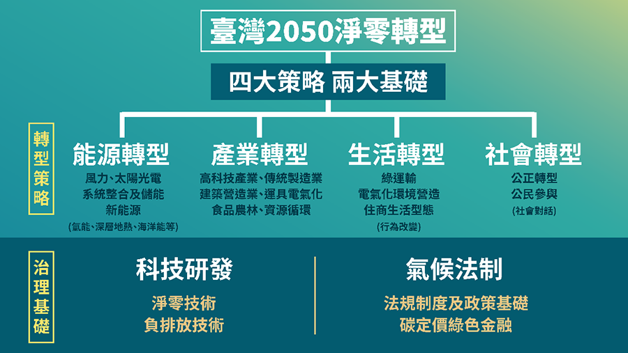
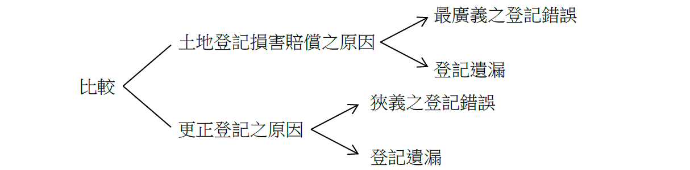
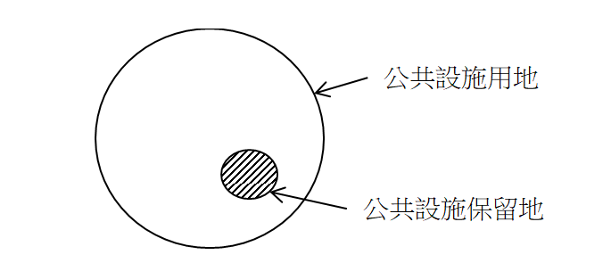
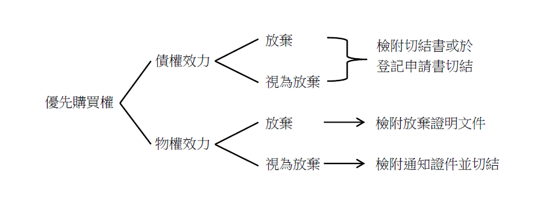
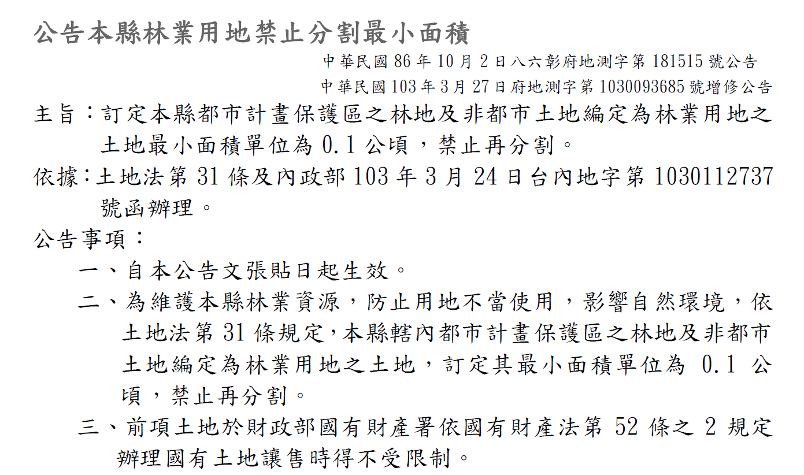
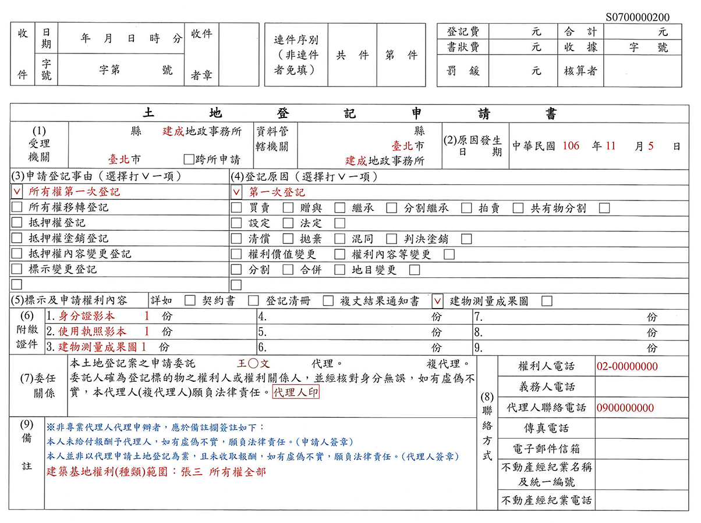

年度合輯：2024 年¶
共收錄 144 篇文章。
1. 各種地價之釐清¶
發布日期: 2024-01-02
各位同學2024年新年愉快，本週專欄就各種「地價」觀念予以釐清：
-
區段地價：為該範圍內買賣交易實例的平均價格，作為評定公告地價與公告土地現值之依據。
-
公告地價：政府參考區段地價，每2年於1月1日公布的個別土地地價（大約市價1～3成），其目的是供所有權人申報地價用。
-
公告土地現值：政府參考區段地價，每年1月1日公布的個別土地地價（接近市價，約7～9成），其目的是供所有權人於移轉時，申報移轉現值用。
-
申報地價：土地所有權人參考政府的公告地價，於80%至120%的範圍內以自己土地條件申報，並於申報後會被納入地價稅及總歸戶冊，送給稅捐稽徵機關課地價稅用。
-
申報移轉現值：土地所有權人進行土地移轉時，參考公告土地現值，以該現值為基準進行申報，做為稅捐機關課徵土地增值稅的依據。
-
徵收補償市價：被徵收之土地，應按照徵收當期之市價補償其地價。在都市計畫區內之公共設施保留地，應按毗鄰非公共設施保留地之平均市價補償其地價。該市價是由直轄市、縣（市）主管機關提交地價評議委員會評定之價格，作為徵收補償用。
7. 市場正常交易價格：指市場實際成交價格，亦即由買賣雙方基於自由意思，合意決定之價格，為實價登錄申報及房地合一稅之依據。¶
注：本文圖片存放於 ./images/ 目錄下
2. 民法§176｜無因管理人之補償請求權¶
發布日期: 2024-01-04
無因管理人因無因管理而受有損害甚至死亡，得否向本人請求損害賠償？
民法§176 條文內容
按民法第176條所定無因管理人補償請求權，旨在讓無因管理人因為無因管理行為而受有損害時，得向本人請求補償，以衡平各方權利義務關係。因此，無因管理人因為無因管理行為而支出之「必要費用」或「有益費用」，均得向本人請求補償。所謂「有益費用」指的就是對本人或該無因管理行為「有助益」的費用。
有疑義者即，如果今天無因管理人因為無因管理行為之實施而喪命，其繼承人是否仍然可以向本人請求損害賠償？答案是不行，因為無因管理人死亡時，其權利能力即併同消滅，既然無因管理人已經沒有權利能力，就沒有向本人行使民法第176條補償請求權的權利，其繼承人亦因此無繼承該等請求權之可能；另外，因為本人對於無因管理人之死亡結果並無故意或過失，因此無因管理人或其繼承人亦無法依照民法第184條第一項或第二項規定請求損害賠償。
舉例
甲在游泳池游泳時溺水，乙捨己救人，跳下池中希望能救起甲，卻因為換氣失誤而喪命，乙的家屬事後向甲請求損害賠償，是否有理由？
查本件乙營救溺水的甲固然屬於適法無因管理，若乙因此受有損害，得依照民法第176條規定，向甲請求損害賠償，應屬無疑。然而，此須以乙仍存活為前提。
換言之，倘若乙因營救甲而身亡，乙之權利能力亦因此而消滅（民法第6條規定參照），此時乙已喪失主張民法第176條損害賠償請求權之權利能力，自不得再向甲請求損害賠償。
另外，針對乙因此喪失生命而受有非財產上損害而言，由於乙本不得就喪失生命一事向甲請求損害賠償，其繼承人自亦無權請求甲為乙喪命一事負損害賠償責任。
結論
乙不得請求甲賠償。
．延伸閱讀
原文出處：Jasper 不動產
3. 民法 §838-1及 §876 規定之差異¶
發布日期: 2024-01-04
「視為有法定地上權」之條文應該如何適用呢？
條文內容
民法 §838-1
土地及其土地上之建築物，同屬於一人所有，因強制執行之拍賣，其土地與建築物之拍定人各異時，視為已有地上權之設定
民法 §876
設定抵押權時，土地及其土地上之建築物，同屬於一人所有，而僅以土地或僅以建築物為抵押者，於抵押物拍賣時，視為已有地上權之設定
比一比！條文內容間之差異
民法第838條之1，是土地和建築物，因為「強制執行拍賣」，導致「土地和建築物所有人不同」，這時候視為有法定地上權，因此其要件為：
-因強制執行被拍賣
-土地和建築物所有人各異
而民法第876條則是指，土地和建築物本來「同屬一人所有」，將「其中一個」設定抵押權，而當抵押物被拍賣，導致所有人各異時，視為有法定地上權，因此其要件為：
-土地和建築物本同屬一人所有
-僅以其中一個設定抵押權
-被拍賣後所有人各異
Josh 老師提醒
這兩個條文的法律效果雖然均為「視為有地上權之設定」，但實際上的要件、適用情形並不相同，請同學在準備考試時，小心留意、仔細區分喔！
．延伸閱讀
原文出處：Jasper 不動產
4. 信託成立之要件¶
發布日期: 2024-01-09
茲假設一案例：大地主甲為避免地價稅累進，爰與乙、丙、丁簽訂不動產信託契約，將名下部分土地信託給他們，以達到分散財產目的，並約定乙、丙、丁僅有掛名，至於該土地之使用收益、管理、處分之運用決定權仍屬於甲，試問此信託是否有效？
• (一) 稱信託者，謂委託人將財產權移轉或為其他處分，使受託人依信託本旨，為受益人之利益或為特定之目的，管理或處分信託財產之關係。
• (二) 關於信託關係之成立，除須有信託財產之移轉或其他處分外，尚須受託人因此取得信託財產之管理或處分權限；倘若，受託人對於信託財產並無管理或處分之權限而屬於消極信託者，因消極信託之受託人僅為信託財產之形式所有人，則不符合信託法第1條所規定之要件，即非屬我國信託法上所稱之信託。（法務部法律字第0980054764號）
• (三) 本題甲與乙、丙、丁之不動產信託契約，非屬委託人甲就信託財產之管理方式對於受託人乙、丙、丁之指示，而係實質上保留委託人甲對於信託財產之運用決定權，因此，該契約不符信託法所定「信託」之本質與信託財產之成立要件，而不生信託之效力。
資料來源：信託法概要，2023，曾榮耀編撰¶
注：本文圖片存放於 ./images/ 目錄下
5. 擴大農場經營規模¶
發布日期: 2024-01-11
• 一、擴大農場規模之目的
台灣農業以家庭農場為主，每一農戶之農地面積不到一公頃。農場規模過小，造成生產成本偏高。如圖所示，AC代表平均生產成本。當農場規模為L0時，平均生產成本為C0。當農場規模由L0擴大為L1時，平均生產成本由C0降低為C1。當農場規模為L時，平均生產成本為C。此時，平均生產成本最低，稱為最適農場規模。
[圖片1]
由上述分析可知，擴大農場規模之目的如下：
• (一) 擴大農場規模，才得以推行機械化生產及企業化經營。
• (二) 擴大農場規模，才得以促使單位生產成本降低。
• (三) 擴大農場規模，才得以提高農業競爭力。
• (四) 擴大農場規模，才得以增加農民所得。
• 二、擴大農場規模之途徑
擴大農場規模之途徑，不外買賣與租賃。
• (一) 買賣：買賣方式為擴大農場規模之根本途逕。然，土地所有權人因祖產因素而不願出售農地，有意願務農之年輕人以資金有限而無法購買農地。況且，購買農地將使資金凍結於農地上，而不能投入於生產設備之增添與更新。
• (二) 租賃：租賃方式為擴大農場規模之務實途徑。早期，因受耕地三七五減租條例之影響，土地所有權人不願將其閒置之農地出租。及至民國89年1月26日修正農業發展條例，明定修正施行後所訂立之農業用地租賃契約，採出租人與承租人自由協議約定，不適用耕地三七五減租條例之規定。因此，政府推行「小地主大佃農」政策，以擴大農場規模。
• 三、擴大農場所有規模與擴大農場經營規模
• (一) 如以買賣方式，始有可能擴大農場「所有」規模。但擴大農場所有規模，緩不濟急，不切實際。
• (二) 如以租賃方式，雖不能擴大農場「所有」規模，但可以擴大農場「經營」規模。因此，現行農地政策為擴大農場經營規模。
• 四、小農經營之生存之道
台灣農戶以家庭農場從事小農經營為主，無法像美國以機械化生產從事大農經營。準此，台灣農業應致力於精緻農業生產，從事農業改良與創新，增加農產品附加價值，提高農民所得，增強農業競爭力。
文章圖片¶

6. 囤房稅2.0之影響¶
發布日期: 2024-01-16
各位同學好
有關今年7月即將施行的囤房稅2.0，茲就目前實務討論所談及之可能影響，整理如下：
• 一、主要衝擊對象
• (一) 多戶持有者
• (二) 有長期餘屋庫存的建商
• (三) 未申報租賃所得之屋主（租屋黑數）
• 二、可能影響
• (一) 囤房者無法再透過各縣市分散置產節稅
• (二) 試圖找稅率較低之標的
-
因各縣市可自訂差別稅率，故買房會從「高稅率縣市→低稅率縣市」
-
因出租且申報達標準的租賃所得之稅率，低於空置住宅，故「空屋→出租」
• (三) 試圖找稅基較低之標的
-
新屋→中古屋
-
大坪→小宅
-
市區→郊區
• (四) 建商傾向預售完銷
• (五) 因出租稅率較低，故將空屋改作出租，且將比以往多繳的囤房稅，轉嫁給消費者而漲租
• (六) 至於是否會使房價下跌則有不同看法：
- 主張會下跌者：因囤房稅導致囤房者持有成本增加，故會出租或出售，增加房屋供給的狀況下，量多價跌。
2. 主張沒影響甚至繼續漲者：因空屋轉出租有利，且可轉嫁給租屋者，出租投資報酬率提高，進而會買更多房來出租獲利，於需求增加下，導致房價上漲。¶
注：本文圖片存放於 ./images/ 目錄下
7. 地主之意涵¶
發布日期: 2024-01-18
早期，農地租賃關係中，出租者稱為地主，承租者稱為佃農。民國38年至42年第一階段農地改革（即民國38年實施耕地三七五減租，民國40年實施公地放領，民國42年實施耕者有其田），因地主剥削佃農，「地主」一詞為專有名詞，存在負面評價，並為制裁對象。時至今日，出租者與承租者於法律上立於平等地位，「地主」一詞非專有名詞，而是普通名詞，顧名思義即土地所有權人，無負面評價，且不再為制裁對象。
注：本文圖片存放於 ./images/ 目錄下
8. 地面型太陽光電設置專區之方式¶
發布日期: 2024-01-23
政府規劃2025年太陽能光電設置目標20GW，其中屋頂型目標3GW，需要屋頂面積3,000公頃；地面型目標為17GW，需要規劃光電設備及併連線路土地約2.5萬公頃。另，107年告之全國國土計畫，其「部門空間發展策略」亦提及將太陽能光電等再生能源設施納入空間發展策略之一，並規定需以地面型專區方式推動。請問依現行之規定，太陽能光電是否可能以地面型之「專區」方式劃設？（112地特三等題目）
根據現行土地使用管制，可分為都市土地與非都市土地說明：
- 都市土地
• (1) 依「都市計畫法臺灣省施行細則」或其他自治規定，以及各都市計畫所訂定的土地使用分區管制要點進行允許使用
• (2) 保護區及農業區則須依「申請農業用地作農業設施容許使用審查辦法」相關規定申請。
- 非都市土地
• (1) 小面積（2公頃以下）
• A. 容許使用 依據「非都市土地使用管制規則」第6條及附件一規範，以容許使用設置太陽光電設施，包含： (A)再生能源設施：甲、乙、丙、丁種建築用地及交通、水利用地(以上不限點狀使用)，或農牧、林業、養殖、國土保安、鹽業、礦業、窯業及遊憩用地面積660平方公尺以下之點狀設置。前者得以地面型專區方式劃設。 (B)綠能設施（結合農業經營或與農業設施結合）：農牧、林業、養殖、國土保安等用地可容許作為綠能設施使用(不限點狀使用)。並須依據「申請農業用地作農業設施容許使用審查辦法」相關規定進行申請。
• B. 變更編定 不符合上述情形，則依據「非都市土地使用管制規則」及「非都市土地申請變更為太陽光電發電設施使用興辦事業計畫審查作業要點」規定辦理使用地變更編定，變更為「特定目的事業用地」。
• (2) 大面積（2公頃以上）
依據「非都市土地使用管制規則」及「非都市土地開發審議作業規範」太陽光電設施專編，進行土地使用分區及使用地變更，以設置大面積的地面型光電專區。¶
注：本文圖片存放於 ./images/ 目錄下
9. 112年憲判字第20號判決之模擬試題(一)¶
發布日期: 2024-01-25
◎最高法院70年台上字第311號民事判例：「司法院大法官會議釋字第107號解釋所謂已登記之不動產，無消滅時效之適用，其登記應係指依吾國法令所為之登記而言。系爭土地如尚未依吾國法令登記為被上訴人所有，而登記為國有後，迄今已經過15年，被上訴人請求塗銷此項國有登記，上訴人既有時效完成拒絕給付之抗辯，被上訴人之請求，自屬無從准許。」憲法法庭於112年憲判字第20號判決，就該判例之後段部分，即「系爭土地如尚未依吾國法令登記為被上訴人所有，而登記為國有後，迄今已經過15年，被上訴人請求塗銷此項國有登記，上訴人既有時效完成拒絕給付之抗辯，被上訴人之請求，自屬無從准許。」宣告違憲，理由為何？
【解答】
• (一) 國家就其與人民間之私權爭議，原則上固得主張相關規定所賦予之權利。然而，國家係為人民而存在，本質上既不可能擁有如人民般得自由發展之人格及維繫生存之需求，亦不可能如人民般享有得自由追求之私益，只能追求公益，以執行公共任務為職志。從而，國家自無受憲法第15條所保障財產權之基本權利。
• (二) 國家與人民間關於土地之爭議，若非來源於兩者之合意，而係國家於政權更替之際，居於公權力主體地位，行使統治權，制定相關法規範，並依該規範將原屬人民私有而僅未及時申辦總登記之土地，逕行登記為國有之情形，倘又容許國家嗣後再以時間經過為由，依民法消滅時效規定為時效完成之抗辯，不啻變相承認國家得透過土地總登記之程序，及消滅時效之抗辯，而無須踐行任何徵收或類似徵收之程序，即可剝奪人民之財產。
• (三) 國家基於公權力主體地位行使統治高權，致與人民發生財產權爭執時，國家本非憲法第15條財產權保障之主體，從而不生基本權衝突之情事。且考量臺灣因政權更迭而辦理土地權利憑證繳驗及換發土地權利書狀，當時之時空環境，絕大多數人民未通曉中文、因戰事流離他所、遺失土地權利憑證，或因社會資訊、教育尚非發達，不諳法令，甚至因36年間之228事件引發社會動盪等特殊原因，致未於限期內申報權利憑證繳驗，或於申報後未依限補繳證件，終致其所有之土地被登記為國有。於此情形，若使國家仍得主張民法消滅時效，從而透過時效制度維持私有土地登記為國有之狀態，不僅與誠實信用原則有違，且形成國家對人民財產權之侵害。故在憲法上，人民財產權之保障，相較於逕行承認土地登記為國有之狀態，更具值得保護之價值。是容許國家在此主張消滅時效，並無正當性可言。
注：本文圖片存放於 ./images/ 目錄下
10. 民法§ 443｜轉租¶
發布日期: 2024-01-28
今天和同學們介紹轉租的相關規定，如果房東A將套房出租給房客B，隨後B又將套房轉租給房客C，此時A、B、C三人之間的法律關係為何? 若房客C故意毀壞套房，房東A又該向何者請求賠償呢?
轉租之定義
- 承租人非經出租人承諾，不得將租賃物轉租於他人。但租賃物為房屋者，除有反對之約定外，承租人得將其一部分轉租於他人。
- 承租人違反前項規定，將租賃物轉租於他人者，出租人得終止契約。
轉租之要點
一、原則禁止、例外允許
- 原則：租賃物禁止轉租給他人
- 例外：出租人同意、租賃物為房屋且未有反對之約定，並只轉租一部分而非全部。
二、契約終止權
承租人違反上述規定時，出租人有契約終止權。
三、轉租時的法律關係 §444
承租人將租賃物轉租給次承租人時，兩者存在租賃關係，但出租人和次承租人
之間並無法律關係，承租人需負擔次承租人造成的損害賠償責任。
四、租賃權不得讓與
租賃權是建立於當事人之信任，因此為不可讓與之債權，若承租人未得出租人
之同意，擅自將租賃權讓與第三人，出租人自然得終止租約。
Ding 老師提醒
要注意當租賃物是耕地時，承租人縱經出租人承諾，仍不得將耕地全部或一部轉租於他人(土地法§108)。而在摘要的情境中，當房客C故意毀壞套房時，房東A可以依§444條向承租人B請求損害賠償，也可以依§184條向次承租人C請求損害賠償。
．延伸閱讀
原文出處：Jasper 不動產
11. 民法§ 345｜買賣契約¶
發布日期: 2024-01-28
買賣行為是最常見的一種法律行為，隨著社會的不斷發展，出現了各種不同的買賣方式，現今客人可以透過外送平台來向店家購買餐點，假如今天餐點有問題導致客人身體不適，同學們知道客人應該向哪方要求索賠嗎? 客人—平台—店家三者的法律關係又是如何呢?
買賣契約之定義
- 稱買賣者，謂當事人約定一方移轉財產權於他方，他方支付價金之契約。
- 當事人就標的物及其價金互相同意時，買賣契約即為成立。
買賣契約之要點
一、雙務契約
買賣契約成立時，雙方對彼此都有義務，一方需交付財產，一方需交付價金。
二、諾成契約
買賣契約不需要交付任何標的物，雙方就必要之點(標的物和價金)達成一致時，契約即成立。
三、不要式契約
買賣契約不需照一定方式進行即能成立且生效，反之結婚就為要式契約，不遵守結婚的相關規定，則結婚無效。
Ding 老師提醒
在摘要中提到的客人—平台—店家三者之間的關係，客人和店家無疑是買賣契約，客人和平台則屬於委任契約，平台和店家則類似居間契約，因此當客人因餐點導致身體不適時，可以向店家請求§354物之瑕疵擔保的損害賠償責任，以及§184的侵權行為賠償責任。
．延伸閱讀
原文出處：Jasper 不動產
12. 鄉村地區整體規劃之意義、範圍、定位、策略與流程¶
發布日期: 2024-01-30
• 一、意義
考量過去區域計畫法制度下劃定之鄉村區，因按現況編定及管制，缺乏計畫指導，產生環境窳陋，缺乏公共設施及環境品質低落等問題，為改善鄉村地區公共設施、居住、產業等發展問題，將「鄉村地區整體規劃」作為國土空間發展之重要策略，從生活、生產、生態等面向，協助環境改善、協調產業需求並維護生態景觀，以建立鄉村地區永續發展的制度系統。
• 二、範圍
鄉村地區指國土空間中人口高密度集聚以外的地區。考量鄉村地區整體規劃主要為彌補非都市土地鄉村聚落長期無計畫指導之情形，而都市計畫或國家公園計畫已屬計畫管制地區，該二類計畫地區自有規劃系統，故不納入未來鄉村地區實質空間規劃範圍內，僅作為鄉村地區整體規劃的空間調查分析範圍，爰將「鄉村地區」界定為「都市土地及國家公園土地以外」之傳統「非都市土地」。
• 三、定位
根據國土法施行細則，鄉村地區整體規劃係屬直轄市、縣（市）國土計畫應表明事項，且後續係透過國土計畫法第15 條第3 項規定，啟動變更各該直轄市、縣(市)國土計畫，故鄉村地區整體規劃之法定地位，係定位為「直轄市、縣(市)國土計畫」的一部分。
• 四、策略
鄉村地區應以生活、生產、生態之再生規劃理念出發，充實生活機能設施、維護地方文化特色、營造鄉村生產經營環境、培育鄉村人力資源及建立生態網路，以協助鄉村地區永續發展，各面向發展策略如下：
-
生活面：建立數位環境、活化閒置空間、促進城鄉交流、保存鄉村文化與社區意識等，並維護及改善在地商業、旅遊、集會場所、文化設施及信仰中心等基本服務設施。
-
生產面：維護農地環境、促進農業六級化、推廣鄉村旅遊、建構旅遊服務設施等，以支持對鄉村地區商業、社區及遊客有益的旅遊及休閒活動。
-
生態面：避免破壞重要動植物棲息環境、提高基地透水性、營造生物多樣性生態環境等。
• 五、內容
依據全國國土計畫與國土法施行細則規定，直轄市、縣(市)國土計畫應研訂鄉村地區整體規劃，包含下列項目：
-
辦理鄉村地區基本調查：分析人口、產業、土地使用、運輸、公共設施服務等基本背景現況。
-
鄉村區屬性分類：依鄉村區屬性區分為農村發展型、工商發展型。
-
課題分析及規劃策略研擬：考量居住、產業、運輸、公共設施服務等需求，盤點課題及規劃因應策略。
-
鄉村地區空間發展配置：依鄉村地區屬性及規劃策略，研擬空間發展配置構想，指定供未來居住、產業、公共設施服務所需空間範圍。
-
執行機制：依空間配置構想，研擬可行策略執機制及期程。
參考資料：鄉村地區整體規劃作業手冊(111年1月版)；全國國土計畫¶
注：本文圖片存放於 ./images/ 目錄下
13. 112年憲判字第20號判決之模擬試題(二)¶
發布日期: 2024-02-01
• 一、日治時期人民私有之土地，經依土地總登記程序登記為國有，其登記是否發生物權變動之效力？
【解答】
日治時期人民私有之土地，經依土地總登記程序登記為國有，其登記不發生物權變動之效力。其理由如下：
• (一) 土地登記本身僅具有推定權利歸屬之效力，不能作為認定權利取得或消滅之絕對依據。是當土地所有權之登記與真實權利狀態不一致時，真正所有人為回復其權利之圓滿狀態，原則上仍得對登記名義人行使物上請求權，而請求塗銷登記及返還土地。此權利具財產上價值，自應受憲法第15條財產權之保障。
• (二) 戰後初期所實施之土地總登記，雖為政府在政權移轉後管理國土、推行不動產物權登記制度所需，然該措施僅係確認、整理及清查當時土地之地籍狀態與產權歸屬，以利後續政令之推行，並無使不動產物權發生變動之意，非屬民法第758條第1項、第759條之情形。又，土地法第43條所定依該法所為之登記有絕對效力，僅為保護善意第三人因信賴既有登記而更為登記者，賦與登記之公信力，並非否認日治時期土地台帳或土地登記簿上所記載權利之效力。是日治時期屬人民私有之土地，雖經辦理土地總登記之程序而登記為國有，然該登記與物權之歸屬無關，並未影響人民自日治時期已取得之土地所有權，人民仍為該土地之真正所有人，此亦為審判實務上一貫見解。
• (三) 上開日治時期人民私有之土地，經依土地總登記程序登記為國有，其登記雖不生物權變動之效力，卻造成真正權利人（即人民）與登記名義人（即國家）不一致，致人民須依民法第767條第1項規定對國家行使物上請求權，方得再度基於所有人地位，自由使用、收益及處分其所有物。
• 二、日治時期為人民所有，嗣因逾土地總登記期限，未登記為人民所有，致登記為國有且持續至今之土地，在人民基於該土地所有人地位，請求國家塗銷登記時，有無民法消滅時效規定之適用？
【解答】
日治時期為人民所有，嗣因逾土地總登記期限，未登記為人民所有，致登記為國有且持續至今之土地，在人民基於該土地所有人地位，請求國家塗銷登記時，無民法消滅時效規定之適用。其理由如下：
• (一) 國家就其與人民間之私權爭議，原則上固得主張相關規定所賦予之權利。然而，國家係為人民而存在，本質上既不可能擁有如人民般得自由發展之人格及維繫生存之需求，亦不可能如人民般享有得自由追求之私益，只能追求公益，以執行公共任務為職志。從而，國家自無受憲法第15條所保障財產權之基本權利。
• (二) 國家與人民間關於土地之爭議，若非來源於兩者之合意，而係國家於政權更替之際，居於公權力主體地位，行使統治權，制定相關法規範，並依該規範將原屬人民私有而僅未及時申辦總登記之土地，逕行登記為國有之情形，倘又容許國家嗣後再以時間經過為由，依民法消滅時效規定為時效完成之抗辯，不啻變相承認國家得透過土地總登記之程序，及消滅時效之抗辯，而無須踐行任何徵收或類似徵收之程序，即可剝奪人民之財產。
• (三) 國家基於公權力主體地位行使統治高權，致與人民發生財產權爭執時，國家本非憲法第15條財產權保障之主體，從而不生基本權衝突之情事。且考量臺灣因政權更迭而辦理土地權利憑證繳驗及換發土地權利書狀，當時之時空環境，絕大多數人民未通曉中文、因戰事流離他所、遺失土地權利憑證，或因社會資訊、教育尚非發達，不諳法令，甚至因36年間之228事件引發社會動盪等特殊原因，致未於限期內申報權利憑證繳驗，或於申報後未依限補繳證件，終致其所有之土地被登記為國有。於此情形，若使國家仍得主張民法消滅時效，從而透過時效制度維持私有土地登記為國有之狀態，不僅與誠實信用原則有違，且形成國家對人民財產權之侵害。故在憲法上，人民財產權之保障，相較於逕行承認土地登記為國有之狀態，更具值得保護之價值。是容許國家在此主張消滅時效，並無正當性可言。
注：本文圖片存放於 ./images/ 目錄下
14. 調解登記及詐騙案¶
發布日期: 2024-02-06
各位同學好
今日專欄針對持調解筆錄申請土地權利變更登記之辦理方式及詐騙案例進行討論。
首先，可先參考這幾篇新聞
破獲「假調解真騙房」詐欺案 藉調解取身分證偽造本票借據 ｜ 公視新聞網 PNN (pts.org.tw)
房子差點沒了！屋主收「地籍異動」簡訊才知 (yahoo.com)
調解登記，係指已辦竣地籍測量及土地總登記、建物第一次登記之土地、建物，因發生產權糾紛，於土地或建物因調解成立後，經檢附相關文件向登記機關申請權利變更之登記。
其申辦方式，茲彙整說明如下：
• (一) 申請期限
-
申請土地權利變更登記，應於權利變更之日起一個月內為之。
-
而權利變更之日，係指依鄉鎮市調解條例規定成立之調解，經法院核定之日。
• (二) 申請方式
調解經法院核定，等同於法院判決確定，故由權利人（或其代理人）單獨申請之。亦可網路申辦（非全程式）。
• (三) 申請規費
-
登記費 (1)土地申報地價千分之一。 (2)建物契價千分之一。
-
權狀費：每張80元。
• (四) 申請文件
-
土地登記申請書。
-
登記清冊。
-
調解筆錄（鄉鎮市區調解需經法院核定）。
-
申請人身分證明文件。
-
土地增值稅繳納或免稅不課徵證明文件。
-
契稅繳納收據、免稅證明書或同意移轉證明書。
-
其他由中央地政機關規定應提出之證明文件。
其中，針對為何無須依土地登記規則由義務人親自到場以進行身份與真意的驗證：
-
根據鄉鎮市調解條例第27條第2項前段：「經法院核定之民事調解，與民事確定判決有同一之效力」。
-
又土地登記規則第41條規定，申請登記時，當事人得免親自到場情形，其中第1款為「依第27條第4款規定，得由權利人單獨申請登記。」亦即「因法院、行政執行分署或公正第三人拍定、法院判決確定之登記」。
-
因此，鄉鎮市調解經法院核定後，等同於法院判決，而適用得免親自到場，當然也不需提供印鑑證明。
因此，就變得身份與產權變動真意的驗證，實際上責任是落在登記前的調解程序上。惟當調解過程中未審慎確認雙方身分時，就容易發生此篇新聞的詐騙事件。¶
注：本文圖片存放於 ./images/ 目錄下
15. 地籍圖重測之土地所有權人指界¶
發布日期: 2024-02-15
地籍圖重測時，土地所有權人未到場指界、到場而不能指界及到場不指界等三種情形，地政機關應如何處理？
【解答】
• (一) 土地所有權人未到場指界：地政機關應依下列順序逕行施測：①鄰地界址；②現使用人之指界；③參照舊地籍圖；④地方習慣。
• (二) 土地所有權人到場不能指界：地政機關得參照舊地籍圖及其他可靠資料，協助指界，並依下列方式辦理：
-
土地所有權人同意該協助指界之結果者，視同其自行指界。
-
土地所有權人不同意該協助指界之結果且未能自行指界者，地政機關應依下列順序逕行施測：①鄰地界址；②現使用人之指界；③參照舊地籍圖；④地方習慣。
-
土地所有權人不同意該協助指界之結果而產生界址爭議者，地政機關應予以調處，不服調處，應於接到調處通知後十五日內，向司法機關訴請處理，逾期不起訴者，依原調處結果辦理。
• (三) 土地所有權人到場而不指界：地政機關應依下列順序逕行施測：①鄰地界址；②現使用人之指界；③參照舊地籍圖；④地方習慣。
注：本文圖片存放於 ./images/ 目錄下
16. 地價稅計算範例：特別稅率與一般稅率之綜合題型¶
發布日期: 2024-02-20
假設曾某於C市有以下5筆都市土地，試問其應繳納多少地價稅額？（C市今年度累進起點地價為500萬元）
| 地號 | C市榮耀段三小段 |
|---|---|
| 10地號 | 21地號 |
| 面積(m2) | 300 |
| 申報地價(元/m2) | 3,000 |
| 用途 | 公共設施保留地(符合自住) |
【解】（以下申報地價皆以萬元計算）
• (一) 適用特別稅率者
1.
10地號
• (1) 稅基 申報地價總額＝300×0.3＝90(萬元)。
• (2) 稅率 都市計畫公共設施保留地，在保留期間仍為建築使用者，屬自用住宅用地，其稅率為2‰
• (3) 稅額 地價稅＝90×2‰＝0.18(萬元)。
2.
21地號
都市計畫公共設施保留地未作任何使用並與使用中之土地隔離者，免徵地價稅。
3.
22地號
• (1) 稅基 申報地價總額＝800×1＝800(萬元)。
• (2) 稅率 都市計畫公共設施保留地，在保留期間仍為建築使用者，統按6‰計徵地價稅。
• (3) 稅額 地價稅＝800×6‰＝4.8(萬元)。
4.
33地號
無償供公眾通行之道路土地，經查明屬實者，在使用期間內，地價稅或田賦全免。但其屬建造房屋應保留之法定空地部分，不予免徵。
• (二) 適用一般稅率者：55地號
1.
稅基 申報地價總額＝1,000×2＝2,000(萬元)。
2.
稅率 (2,000-500)÷500＝3(倍)。 (1)未超過累進起點地價，地價稅按基本稅率10‰徵收。 (2)超過累進起點地價未達五倍者，就其超過部分課徵15‰。
3.
稅額 地價稅＝500×10‰+1,500×15‰＝27.50(萬元)。 （速算：2,000×15‰－500×0.005＝27.50(萬元)）
• (三) 合計地價稅額
- 18+4.8+27.50＝32.48。
綜上，曾某今年度C市地價稅合計應繳納32.48萬元。
注：本文圖片存放於 ./images/ 目錄下
17. 112年憲判字第19號判決之模擬試題¶
發布日期: 2024-02-22
◎土地稅減免規則第9條規定：「無償供公眾通行之道路土地，經查明屬實者，在使用期間內，地價稅或田賦全免。但其屬建造房屋應保留之法定空地部分，不予免徵。」其但書規定是否違反憲法第7條平等原則？試依112年憲判字第19號判決論述之。
【解答】
• (一) 憲法第7條保障人民之平等權，法規範是否符合平等原則之要求，其判斷應取決於該法規範所以為差別待遇之目的是否合憲，其所採取之分類與規範目的之達成間，是否存有一定程度之關聯性而定。租稅法律關係中，立法者為了實現憲法所賦予之任務，而就各種稅捐之稽徵及減輕或免除分別訂定不同之規範，其分類及差別待遇，涉及國家財稅政策之整體規劃，適合由代表民意之立法機關及擁有專業能力之相關行政機關，以法律或法律明確授權之法規命令定之，其規定如有正當目的，且分類與目的之達成間具有合理關聯，即符合憲法第7條平等權保障之意旨。
• (二) 法定空地屬建築基地之一部分，提供該建築物日照、採光、通風、景觀、防火、安全等特定之功能，與人民私有並非建築基地之一部分而單純無償供公眾使用之道路土地，性質與功能均有所不同。
• (三) 按法定空地屬建築基地之一部分，依法應併同主建築物一併移轉，建築物所有人就法定空地之留設，除享有較優良之居住品質及環境空間外，未來如有改建或實施都市更新，該法定空地之所有權人尚得參與分配更新後之房地，其權益不因其是否專供或兼供公眾通行使用而受影響。是對土地所有人而言，建築基地所保留之法定空地雖可供公眾通行，但仍維持並享有該法定空地屬於建築基地之利益，與單純無償供公眾使用而完全無法使用收益之道路土地，在建築法上之性質與功能不同。
• (四) 法定空地供公眾通行，縱為無償，因其已計入依建築法應留設之法定空地，即無須再就建築基地中之其他土地予以留設，對提供者仍具有建築上之利益；而提供私有非法定空地無償供公眾通行，該土地所有人並未獲取任何利益，二者本質尚有所不同。
• (五) 綜上，系爭規定因此區隔，於地價稅核課上有所區別，對提供法定空地無償供公眾通行者，仍然課徵地價稅，其分類與公平課稅目的之達成間，具有合理關聯，尚無違反憲法第7條規定之平等原則，其規定亦未逾土地稅法第6條及平均地權條例第25條之授權範圍。
注：本文圖片存放於 ./images/ 目錄下
18. 財產權侵害之損失補償¶
發布日期: 2024-02-27
損失補償之主要特徵在於「因公益而形成個人利益之特別犧牲」，亦即，公權力對個人財產權之干預程度，相較於他人所受之干預，如顯失公平且無期待可能者，即屬逾越社會責任所應忍受之範圍，而構成特別犧牲，國家應予合理之補償1。因此，針對財產權侵害之損失補償，應可粗分為：
-
應予補償之徵收（剝奪財產權）
-
應予補償之財產權限制（非至為輕微）
-
不予補償之財產權限制（至為輕微）
申言之，若國家為公益而對人民財產權之限制，已至完全剝奪，或致該財產權之本來效用已無從發揮，即已形骸化而實質上形同剝奪者（如本院釋字第400 號解釋所稱已形成公用地役關係之既成道路土地），即屬應予補償之徵收；然若對財產權之限制並未至此程度依上開本院釋字第564號解釋，即限制係至為輕微，則屬財產權之社會義務，係不予補償之財產權限制；反之，若對財產權之限制已「非至為輕微」，則應認係已逾越財產權之社會義務範圍，而形成個人之特別犧牲，屬應予補償之財產權限制。2
然究至何種程度始逾人民財產權所應忍受之範圍，應就行為之目的與限制手段及造成之結果予以衡量（司法院釋字第564號解釋理由書）。可就下列複數要素，綜合地對於財產權限制之個別情形，判斷其是否形成土地所有權人之特別犧牲3：1.限制之目的、2.手段形態、3.限制程度、4.損失程度、5.土地狀況及條件、6.社會需要（社會情狀）、7.限制期間、8.有無既得權益。
1 李建良，1998，特別犧牲與損失補償，月旦法學雜誌第36期，第24-25頁。 2 楊惠欽大法官釋字第813號解釋協同意見書。 3 陳立夫，2017，土地利用限制形成特別犧牲之損失補償請求權－司法院釋字第747號解釋之意義，月旦裁判時報，第64期，第17-30頁；陳立夫，2011，台灣農地權利之管制與權利保障－以耕地三七五減租條例對耕地所有權之限制為中心，土地法研究（二），新學林，第130-171頁。¶
注：本文圖片存放於 ./images/ 目錄下
19. 房屋稅條例之住家稅率¶
發布日期: 2024-02-29
◎依據民國113年1月3日修正公布之「房屋稅條例」規定，住家用房屋之房屋稅率為何？
【解答】
• (一) 供自住、公益出租人出租使用或以土地設定地上權之使用權房屋並供該使用權人自住使用者，為其房屋現值1.2%。但本人、配偶及未成年子女於全國僅持有一戶房屋，供自住且房屋現值在一定金額以下者，為其房屋現值1%。
• (二) 前款以外，出租申報租賃所得達所得稅法規定之當地一般租金標準者或繼承取得之共有房屋，最低不得少於其房屋現值1.5%，最高不得超過2.4%。
• (三) 起造人持有使用執照所載用途為住家用之待銷售房屋，於起課房屋稅二年內，最低不得少於其房屋現值2%，最高不得超過3.6%。
• (四) 其他住家用房屋，最低不得少於其房屋現值2%，最高不得超過4.8%。
直轄市及縣（市）政府應依上開第2款至第4款規定，按各該納稅義務人全國總持有應稅房屋戶數或其他合理需要，分別訂定差別稅率；納稅義務人持有坐落於直轄市及縣（市）之各該應稅房屋，應分別按其全國總持有戶數，依房屋所在地直轄市、縣（市）政府訂定之相應稅率課徵房屋稅。
注：本文圖片存放於 ./images/ 目錄下
20. 農地之定義¶
發布日期: 2024-03-05
凡供農業生產用的土地，即可稱為農地。
由於農業生產的意義有廣狹之分，所以農地一詞也有廣狹之別：
- 廣義：農業用地
• (1) 平均地權條例第3條、農業發展條例第3條及土地稅法第10條指非都市土地或都市土地農業區、保護區範圍內土地，依法供下列使用者︰
-
供農作、森林、養殖、畜牧及保育使用者。
-
供與農業經營不可分離之農舍、畜禽舍、倉儲設備、曬場、集貨場、農路、灌溉、排水及其他農用之土地。
-
農民團體與合作農場所有直接供農業使用之倉庫、冷凍（藏）庫、農機中心、蠶種製造（繁殖）場、集貨場、檢驗場等用地。
• (2) 又依農業發展條例施行細則第2條，所稱依法供前述第一目至第三目使用之農業用地，其法律依據及範圍如下：
-
本條例第三條第十一款所稱之耕地。
-
依區域計畫法劃定為各種使用分區內所編定之林業用地、養殖用地、水利用地、生態保護用地、國土保安用地及供農路使用之土地，或上開分區內暫未依法編定用地別之土地。
-
依區域計畫法劃定為特定農業區、一般農業區、山坡地保育區、森林區以外之分區內所編定之農牧用地。
-
依都市計畫法劃定為農業區、保護區內之土地。
-
依國家公園法劃定為國家公園區內按各分區別及使用性質，經國家公園管理處會同有關機關認定合於前三款規定之土地。
-
狹義：耕地
為農業生產力高的土地。依照農業發展條例第3條，耕地認定指依區域計畫法劃定為特定農業區、一般農業區、山坡地保育區及森林區之農牧用地。
注：本文圖片存放於 ./images/ 目錄下
21. 空地稅、空屋稅及囤房稅¶
發布日期: 2024-03-07
• 一、空地稅
• (一) 空地之意義：所稱空地，指已完成道路、排水及電力設施，於有自來水地區並已完成自來水系統，而仍未依法建築使用；或雖建築使用，而其建築改良物價值不及所占基地申報地價百分之十，且經直轄市或縣（市）政府認定應予增建、改建或重建之私有及公有非公用建築用地（平§3⑦）。
• (二) 對空地之制裁手段：直轄市或縣（市）政府對於私有空地，得視建設發展情形，分別劃定區域，限期建築、增建、改建或重建；逾期未建築、增建、改建或重建者，按該宗土地應納地價稅基本稅額加徵二倍至五倍之空地稅或照價收買（平§26I）。準此，對空地之制裁手段有二，一為空地稅（照地價稅基本稅額之二倍至五倍加徵），另一為照價收買（照公告土地現值收買）。
• (三) 空地稅之目的：
-
採寓禁於徵之手段，禁止土地閒置。
-
加重土地持有成本，促進土地利用。
-
打擊土地投機，穩定地價發展。
• (四) 實施空地稅之問題：
-
空地稅過輕，難以發揮其政策效果。
-
空地須經限期建築使用而不使用，始得課徵空地稅。然，限期建築之期限過長，難以發揮立即打擊之效果。
-
空地限期使用，應考慮當地之住宅需求狀況，否則所興建房屋如淪為空屋，造成資源之更大浪費。
• 二、空屋稅
法無明文規定。實施空屋稅之最大問題在難以認定「空屋」。如以用水、用電或用瓦斯之度數為認定依據，則屋主恐以浪費水電或浪費瓦斯方式因應，反而造成資源浪費，得不償失。
• 三、囤房稅
• (一) 囤房稅之規定：本人、配偶及未成年子女全國持有超過三戶住家用房屋，按其全國總持有戶數，依房屋所在地直轄市、縣（市）政府訂定之相應差別稅率，課徵房屋稅。其稅率最低不得少於其房屋現值2%，最高不得超過4.8%。
• (二) 囤房稅之目的：
-
採寓禁於徵之手段，禁止囤積房屋。
-
加重房屋持有成本，促其釋出房屋。
-
打擊炒作房屋，抑制房價高漲。
• (三) 實施囤房稅之問題：
-
囤房稅過輕，難以發揮其政策效果。
-
課徵囤房稅，如發生轉嫁現象，政策效果恐落空。
-
各直轄市、縣（市）所訂定之差別稅率不同，造成稅負不公平。
注：本文圖片存放於 ./images/ 目錄下
22. 共有物分割與分管之差異¶
發布日期: 2024-03-12
| 差異 | 共有物（所有權）分割 | 共有物分管 |
|---|---|---|
| 差異 | 共有物（所有權）分割 | 共有物分管 |
| 意義 | 將共有物從共有狀態轉變為各自單獨所有 | 共有人就共有物特定範圍之使用、 管理及收益的約定或決定 |
| 目的 | 消滅與終止共有關係，促進共有物之改良， 增進共有之經濟效用 |
暫訂共有物使用方式、範圍，確認使用權利， 避免使用爭議 |
| 性質 | 消滅原本共有關係發生物權變動關係 | 維持原本共有關係並未發生物權變動關係 |
| 法源 | 民法第824-1條 | 民法第820條 |
| 方法 | 協議分割 調處分割 裁判分割（另有調解分割、 和解分割） |
分管協議（明示或默示） 分管決定（採多數決） 如有 顯失公平、情事變更等，可分管裁定變更 |
| 分配 | 協議分割依協議進行所有權分配 裁判分割有原物分配、 補償分配、變價分配等方式 |
分管仍維持原本共有關係， 不涉及所有權分配（即各自應有部分仍維持於該共有物之 任何範圍） |
| 登記 | 屬所有權移轉登記（原則先標示分割後再辦權利分割） | 不強制登記 屬註記登記（標示部） |
| 效力 | 協議分割自登記完畢日起發生物權變動效力 裁判分割自 判決確定日起發生物權變動效力 |
未登記前，僅具債權效力， 約束內部共有人 自登記完畢日起， 對於應有部分之受讓人或取得物權之人，具有對抗效力 |
注：本文圖片存放於 ./images/ 目錄下
23. 韌性城市¶
發布日期: 2024-03-14
• 一、韌性城市之意義
韌性城市（Resilient City），指城市面對天然災害（如颱風、地震、海嘯、土石流等）、能源危機、恐怖攻擊等事件發生時，能將其衝擊所造成之影響降至最低，並在最短時間內回復原來狀態。
• 二、韌性城市之目的
• (一) 減災：城市面對衝擊時，將災害減輕，以確保人民生命財產之安全。
• (二) 調適：城市適應極端氣候變化，透過城市設施改善，以對抗地震、水災及風災等之侵襲。
• (三) 永續：城市發揮韌性能力，以應付未來不確定性事件發生，追求城市永續發展。
• 三、韌性城市之具體作法
• (一) 過往「與水爭地」，改變為「還地於水」。如增加河川行水面積、氾濫平原（如關渡平原）不得開發等。
• (二) 增加公園、綠地、廣場等開放空間，以增加透水面積。
• (三) 設置滯洪池、建物地下水庫等，以儲存雨水，並減少暴雨逕流量。
• (四) 鼓勵綠建築之興建，促進建物能源效率，減少溫室氣體排放。
• (五) 以生態工法整治河川工程，增加地下水及生態復育。
• (六) 劃定高災害潛勢地區（如斷層、土石流、地層下陷、土壤液化等地區），禁止建築使用，以避免災害損失。
• (七) 監控災害徵兆，建立預警系統。
• (八) 其他相關措施。
注：本文圖片存放於 ./images/ 目錄下
24. 信託與委託(任)之差異¶
發布日期: 2024-03-19
信託與委託雖名稱相似，但有所差異，本周專欄茲整理如下：
| 面向 | 信託 | 委任 |
|---|---|---|
| 面向 | 信託 | 委任 |
| 定義 | 稱信託者，謂委託人將財產權移轉或為其他處分， 使受託人依信託本旨，為受益人之利益或為特定之目的， 管理或處分信託財產之關係(信§1) |
稱委任者，謂當事人約定，一方委託他方處理事務， 他方允為處理之契約(民§528) |
| 法源依據 | 信託法 | 民法 |
| 財產移轉 | 委託人須將財產權移轉或為其他處分給受託人 信託標的 如為不動產，則需辦理信託登記， 將不動產登記於受託人名下， 但受託人僅為名義所有權人， 而受益人則為實質所有權人 |
委任人無須移轉財產權於受任人 受任人管理之財產仍屬 委任人所有，委任關係存續中， 委任人未必喪失對其財產之管理處分權限 受任人管理或 處分該財產之效果，直接歸屬委任人 |
| 財產處分 | 以本人名義管理財產 | 以他人名義管理財產 |
| 關係人 | 委託人、受託人、受益人、監察人 | 委任人、受任人 |
| 相互關係 | 應予公示 非經信託登記，不得對抗第三人 | 內部關係 |
| 消滅 | 信託關係不因委託或受託人死亡、 破產或喪失行為能力而消滅 |
委任關係，因當事人一方死亡、 破產或喪失行為能力而消滅 (民§550) |
| 強制執行 | 原則上不得強制執行 | 得強制執行 |
注：本文圖片存放於 ./images/ 目錄下
25. 自住之意涵¶
發布日期: 2024-03-21
地價稅及土地增值稅所採用之「自用住宅用地」，法有明文定義（詳見土地稅法§9），適用上較明確。然，房屋稅及房地合一所得稅所採用之「自住」，法無明文定義，其意涵因適用情形而異。茲就其適用情形分析其自住意涵如下：
• (一) 自住之房屋稅優惠稅率：
-
條件：(1)戶籍條件：房屋所有權人、配偶或直系親屬辦竣戶籍登記，並供房屋所有權人、配偶或直系親屬實際居住使用。(2)使用條件：房屋無出租或營業使用。(3)戶數條件：房屋所有權人、配偶及未成年子女持有住家用房屋全國合計三戶內。
-
優惠稅率：自住房屋，按房屋現值之1.2%課徵。全國僅持有一戶，按房屋現值之1%課徵。
• (二) 自住之房地合一所得稅免稅及優惠稅率：
-
條件：(1)戶籍條件：房地所有權人或其配偶、未成年子女辦竣戶籍登記，且連續滿六年。(2)持有條件：房地所有權人或其配偶、未成年子女持有並居住於該房屋連續滿六年。(3)使用條件：交易前六年內，無出租、供營業或執行業務使用。(4)次數條件：房地所有權人或其配偶、未成年子女於交易前六年內未曾適用本項免稅規定。換言之，每六年享用一次。
-
優惠規定：自住房地，房地交易所得在400萬元以下，免徵；超過400萬元部分，稅率10%。
• (三) 自住之房地合一所得稅重購退稅：
-
條件：(1) 戶籍條件：房地所有權人或其配偶、未成年子女應於該出售及購買之房屋辦竣戶籍登記並居住。(2) 使用條件：出售前一年內，房屋無出租、供營業或執行業務使用。(3) 時間條件：自完成移轉登記之日起二年內重購。先購後售亦適用之。(4)名義條件：出售或重購房地限以納稅義務人本人或其配偶名義登記。(5)時效條件：自完成移轉登記之日起五年內申請退還。(6)移轉條件：重購後五年內再行移轉或改作其他用途，追繳原退還稅款。
-
退稅金額：(1)重購房地價格大於出售房地價格：退還全部納稅金額。(2)重購房地價格不及出售房地價格：就納稅金額按重購價格占出售價額之比率申請退稅。
注：本文圖片存放於 ./images/ 目錄下
26. 被繼承人死亡前二年內贈與都市計畫公共設施保留地 是否應計入遺產總額¶
發布日期: 2024-03-26
甲112年3月3日將其所有的A縣都市計畫之公共設施保留地贈與給其子乙，後於113年6月6日死亡，其子乙依規定申報遺產稅時，是否應將該筆土地併入遺產總額申報，再將其列為扣除額中扣除？
• 一、相關規定
• (一) 遺產及贈與稅法第15條：「被繼承人死亡前二年內贈與下列個人之財產，應於被繼承人死亡時，視為被繼承人之遺產，併入其遺產總額，依本法規定徵稅：
-
被繼承人之配偶。
-
被繼承人依民法第1138條及第1140條規定之各順序繼承人。
-
前款各順序繼承人之配偶。」
• (二) 都市計畫法第50條之1後段：「…公共設施保留地因繼承或因配偶、直系血親間之贈與而移轉者，免徵遺產稅或贈與稅。」
• 二、結論
原本按照上述規定，照理應將該贈與之公共設施保留地併入被繼承人甲的遺產總額申報，並檢具註記公共設施保留地的土地使用分區證明書，列報公共設施保留地扣除額。
惟因都市計畫法第50條之1已明定，因繼承而移轉予配偶、直系血親的公共設施保留地，免徵遺產稅，故甲生前贈與行為，顯無規避遺產稅的動機，乙無須再將甲死亡前2年內贈與公共設施保留地，併入被繼承人甲的遺產總額，以及將該公共設施保留地的遺產價額，同額列報公共設施保留地扣除額，以茲簡政便民。
參考來源：被繼承人死亡前2年內贈與法定免徵遺產稅的土地，免併計遺產總額-財政部北區國稅局 (ntbna.gov.tw)
注：本文圖片存放於 ./images/ 目錄下
27. 公寓大廈管理條例§ 16｜樓梯間可以放鞋櫃嗎？¶
發布日期: 2024-03-26
小明搬家後按舊有習慣，將鞋櫃置於樓梯間並擺放整齊，孰料近日遭管委會勸導改善，若無改善將報請主管機關對其開罰，請問擺放整齊的鞋櫃有違反公寓大廈管理條例嗎？條例中指的雜物又是什麼呢？
公寓大廈管理條例之規定
住戶不得於私設通路、防火間隔、防火巷弄、開放空間、退縮空地、樓梯間、共同走廊、防空避難設備等處所堆置雜物、設置柵欄、門扇或營業使用，或違規設置廣告物或私設路障及停車位侵占巷道妨礙出入。
鞋櫃是否為雜物？
- 鞋櫃屬於家戶必備之物，當不屬於本條例第16項所稱之雜物。
- 本條例第16條立法意旨為保障公共安全之目的，當有危害發生時，公共通道應維持暢通無阻，始能避免妨礙逃生避難。
- 不論是柵欄、雜物或是鞋櫃，都屬於住戶的個人行為，這些行為非全體住戶所能知悉並了解，而在危害發生、光線不佳時可能會造成其他住戶通行之阻礙，因此不論物品屬性為何，皆違反上述之立法意旨。
Ding 老師提醒
雖然現在房屋的使用面積越來越小，但將私人物品置於公共區域仍是不法行為，同學們若有遇到上述情形，應盡快改善以避免遭罰哦。
．延伸閱讀
原文出處：Jasper 不動產
28. 民法§ 868-870、881｜普通抵押權之特性¶
發布日期: 2024-03-26
普通抵押權者，債權人對於債務人或第三人不移轉占有而供其債權擔保之不動產，得就該不動產賣得價金優先受償之權。
普通抵押權之特性
1.從屬性: 抵押權不得由債權分離而為讓與，或為其他債權之擔保。
2.不可分性:
(1) 抵押之不動產如經分割，或讓與其一部，或擔保一債權之數不動產而以 其一讓與他人者，其抵押權不因此而受影響。
(2) 以抵押權擔保之債權，如經分割或讓與其一部者，其抵押權不因此而受影響。
3.物上代位性: 抵押權除法律另有規定外，因抵押物滅失而消滅。但抵押人因滅失得受賠償或其他利益者，不在此限。抵押權人對於抵押人所得行使之賠償或其他請求權有權利質權，其次序與原抵押權同。
Hank 老師提醒
同學們要注意普通抵押權與最高限額抵押權並不相同，別搞混喽。
．延伸閱讀
原文出處：Jasper 不動產
29. 土地徵收條例§ 8｜土地徵收之種類¶
發布日期: 2024-03-26
國家因為公共利益之需要，依法定程序以強制手段取得人民土地財產權，並給予相當補償之行政行為。
土地徵收之種類
1.一般徵收: 因公益所需，而徵收人民之土地。
2.區段徵收: 一定區域內之土地，為了重新分宗整理，而施行全區土地之徵收。
3.一併徵收: 徵收土地之殘餘部分面積過小或形勢不整，致不能為相當之使用者。或徵收建築改良物之殘餘部分不能為相當之使用者。所有權人得向主管機關申請一併徵收
4.保留徵收: 興辦事業將來需用之土地，在尚未使用前，預先公布徵收範圍，禁止妨礙徵收之使用。
Hank 老師提醒
同學們要搞清楚一般徵收與區段徵收之差異性唷。
．延伸閱讀
原文出處：Jasper 不動產
30. 公寓大廈管理條例§ 3｜專有部分和共用部分¶
發布日期: 2024-03-26
公寓大廈是都市中很常見的居住型態，而近年來因應法規要求，新建案的公設比也越來越高，同學們知道在你買房的價錢中，有多少錢是屬於你獨有的房子面積，另有多少錢則是屬於共用的公共面積呢?
專有部分和共用部分之要點
公寓大廈基本上由兩個部分組成：專有部分、共用部分
- 專有部分：獨屬於你的，像是你的2F-1號小套房，你可以在裡面自由的改造。
- 共用部分：大家一起使用的，像是梯廳、電梯、中庭、會議室。
- 約定專用：約定將共用部分給某人使用，像是2樓的公共平台給2樓住戶當作花園。
- 約定共用：約定將專有部分給大家使用，像是1樓住戶的空地作為社區的騎樓。
Ding 老師提醒
公設比簡單說就是在房屋所有權狀中持有非房屋實際使用坪數占總坪數的百分比，數字越高代表花越多錢在公共設施(共用部分)上，其中公設比越來越高的原因有很多，包含消防安全意識的提升、住戶希望在社區中有更多的娛樂空間等等，但其實很多公設的養護費用是非常驚人的，因此在看房時也要考慮之後社區管理費的負擔哦。
．延伸閱讀
原文出處：Jasper 不動產
31. 公寓大廈管理條例§ 3｜區分所有權人會議決議之效力¶
發布日期: 2024-03-26
愛心社區的新住戶小明一口氣買下了該社區20個停車位，並且每個車位都有獨立產權，打算日後出租給外人，孰料愛心社區的區分所有權人在區分所有權人會議上決議通過，為了保障社區的居民出入安全，禁止小明將停車位出租給外人，請問區分所有權人會議的決議可以將不利少數人利益的規定寫進社區規約中嗎? 是否會形成多數決之暴力呢?
區分所有權人會議決議之效力要點
當區分所有權人會議利用多數決通過的決議，和少數人利益相衝突時，須符合以下兩點始能有效，若是違反則應屬無效：
- 應有充分理由，並且符合比例原則。
- 不違反公序良俗。
也就是說如果社區住戶所得利益極少，而少數住戶損失甚大，又或是該決議違反了公序良俗，則該決議應屬無效。
Ding 老師提醒
關於本篇小明的案例，在實務上會針對以下幾點作為參考：小明擁有的停車位性質(法定、獎勵、增設)和數量，社區進出安全的加強(加裝監視器、要求承租人的身分證明)，是否有出租外人的現況等。不同的因素將會導致不一樣的結果哦。
．延伸閱讀
原文出處：Jasper 不動產
32. 土地稅法§ 28-2、28-3、39、39-2｜土地增值稅之不課徵¶
發布日期: 2024-03-26
在符合法律規定之情況下，將不課徵土地增值稅。
土地增值稅不課徵之種類
1.配偶贈與
2.土地為信託財產
3.公共設施保留地移轉
4.農地移轉
Hank 老師提醒
不課徵土地增值稅與免徵土地增值稅概念並不相同。不課徵土地增值稅時，原地價並不會發生變動，屬於租稅遞延，待下次課徵土地增值稅時一併計算。
．延伸閱讀
原文出處：Jasper 不動產
33. 公寓大廈管理條例§ 22｜強制出讓、惡鄰退散¶
發布日期: 2024-03-26
在寶島社區中居住著一位暴力份子小明，他不僅常在半夜糾眾開轟趴，並多次在社區大廳宿醉罵人，長期下來已造成居民身心的嚴重困擾，經管委會與其多次溝通無果後，社區區分所有權人大會決議通過訴請法院請求小明強制遷離，請問若法院判決社區勝訴，小明該面臨何者處罰? 以及相關的規定為何?
強制出讓之事由
1.積欠依本條例規定應分擔之費用，經強制執行後再度積欠金額達其區分所有權總價百分之一者。
2.違反本條例規定經依第四十九條第一項第一款至第四款規定處以罰鍰後，仍不改善或續犯者。
3.其他違反法令或規約情節重大者。
強制出讓之要點
公寓大廈管理條例第22條中，強制遷移和強制出讓須符合以下幾點要求：
一、唯有管理負責人或管理委員會才可提告，住戶無法以個人名義提告。
二、須先由管理負責人或管理委員會請惡鄰改善，而其於三個月內仍未改善。
三、須經區分所有權人會議之決議通過，決議條件須符合本條例第31條所定之門檻。
四、當事人須符合上述三點事由之一。
五、若當事人非區分所有權人(ex一般住戶)，可以令其強制遷移；若其屬於區分所有權人，則
可以在決議中請求強制出讓。
六、因牽扯到當事人的財產權和住戶間的居住品質之衝突，因此法院會考量目的正當性、手段
必要性、限制妥當性及衡平性等要求。
Ding 老師提醒
在本篇案例中，區分所有權人小明對住戶的搔擾行為，可以視為該區分所有權人嚴重違反對其他區分所有權人之義務，致無法維持共同關係，因此只有在法院確認沒有其他方法可以保證其他住戶的居住品質時，才會對小明採取強制出讓的手段。
．延伸閱讀
原文出處：Jasper 不動產
34. 民法§ 881-3、881-6、881-8｜最高限額抵押權之特性¶
發布日期: 2024-03-26
最高限額抵押權，債務人或第三人提供其不動產為擔保，就債權人對債務人一定範圍內之不特定債權，在最高限額內設定之抵押權。
最高限額抵押權之特性
1.無從屬性: 最高限額抵押權所擔保之債權，於原債權確定前讓與他人者，其最高限額抵押權不隨同移轉。第三人為債務人清償債務者，亦同。
2.變動性: 原債權確定前，抵押權人與抵押人得約定變更債權之範圍或其債務人。
3.流動性: 原債權確定前，抵押權人經抵押人之同意，得將最高限額抵押權之全部或分割其一部讓與他人。原債權確定前，抵押權人經抵押人之同意，得使他人成為最高限額抵押權之共有人。
Hank 老師提醒
同學們要搞清楚，普通抵押權跟最高限額抵押權之差異唷。
．延伸閱讀
原文出處：Jasper 不動產
35. 徵收免稅及重購退稅之用意¶
發布日期: 2024-03-28
• (一) 立法目的：
土地（房屋）徵收或土地（房屋）出售時，如扣除稅費，將無法以其餘額購買同一地段、同一品質及同一面積之土地（房屋），因此給予免除或退還稅費。
• (二) 相關規定：
-
土地徵收，免徵土地增值税（土地稅法第39條第1項）。
-
房地徵收，免徵房地合一所得稅（所得稅法第4條之5第1項第3款）。
-
自用住宅用地、自營工廠用地或自耕農業用地出售後，重購退還土地增值稅（土地稅法第35條）。
-
自住房地出售後，重購退還房地合一所稅（所得稅法第14條之8）。
-
建築改良物之徵收，其補償費按重建價格估定，不扣除折舊費用（土地徵收例第31條第1項）。
注：本文圖片存放於 ./images/ 目錄下
36. 淨零排放之意義與土地利用規劃作為¶
發布日期: 2024-04-02
• (一) 意義
-
淨零排放：指溫室氣體排放量與碳匯量達成平衡。
-
國家溫室氣體長期減量目標為中華民國一百三十九年（2050）溫室氣體淨零排放。為達成前項目標，各級政府應與國民、事業、團體共同推動溫室氣體減量、發展負排放技術及促進國際合作。(氣候變遷因應法第4條)
• (二) 路徑
我國於2022年3月正式公布「臺灣2050淨零排放路徑及策略總說明」，提供至2050年淨零之軌跡與行動路徑，以促進關鍵領域之技術、研究與創新，引導產業綠色轉型，帶動新一波經濟成長，並期盼在不同關鍵里程碑下，促進綠色融資與增加投資，確保公平與銜接過渡時期。
我國2050淨零排放路徑將會以「能源轉型」、「產業轉型」、「生活轉型」、「社會轉型」等四大轉型，及「科技研發」、「氣候法制」兩大治理基礎，輔以「十二項關鍵戰略」，就能源、產業、生活轉型政策預期增長的重要領域制定行動計畫，落實淨零轉型目標。
[圖片1]
[圖片2]
• (三) 碳匯
-
意義 碳匯指將二氧化碳或其他溫室氣體自排放源或大氣中持續移除後，吸收或儲存之樹木、森林、土壤、海洋、地層、設施或場所。
-
類型 (1)綠碳（森林碳匯） (2)藍碳（海洋碳匯） (3)黃碳（土壤碳匯）
• (四) 土地利用規劃之作為
• I. 土地使用面向
-
降低不必要土地開發：在人口總量減少的變遷下，透過國土計畫減少不必要之土地開發，降低碳排放與節約能源。
-
增加碳匯空間：就國土計畫所劃設的國土保育地區加強保育，於國土復育促進地區進行生態復育，配合森林保育與造林，增加碳匯空間，藉此達到碳中和。
-
緊密都市（Compact city）規劃：藉由土地混合使用，將食衣住行育樂等日常生活所需之活動空間，盡可能配置在同一區域，可有效降低都市活動移動距離，以步行或自行車取代私人汽機車運具使用，減少不必要的交通旅次，進而縮減使用運具所產生的溫室氣體排放。
• I. I.交通運輸面向
-
大眾運輸導向發展（Transit-oriented development, TOD）：係藉由大眾運輸系統之構建，引導居住、工作、購物、休閒等活動空間於大眾運輸路線廊帶上有秩序地分布，以形塑高可居性、可及性及有效率的永續都市型態與土地利用模式。藉此，提高大眾運輸使用率，降低碳排高的汽機車使用。
-
適當縮減停車位與道路用地劃設：適當縮減停車位與道路用地，以誘導搭乘大眾運輸，減少私人運具使用，進而減少碳排放。
-
打造友善綠色運輸環境：以人為本的交通規劃，確保自行車道、步行環境的友善性、可及性、安全性、連貫性等，藉此鼓勵多以步行、自行車等綠色運輸取代私人運具之通勤使用，減少碳排。
• I. II.公共設施面向
-
公共設施區位規劃：就鄰里人口分布狀況，有效配置公共設施服務，減少通勤旅次。
-
既有公共設施再利用：由於少子化、高齡化之社會結構變遷，就閒置的學校等公共設施，規劃、清理轉型為社會住宅、安養中心等，避免重新開發增加碳排。
• I. V.都市設計面向
-
鼓勵綠建築：綠建築係在建築生命週期中，消耗最少地球資源，使用最少能源及製造最少廢棄物的建築物。因此，可於建築或開發審議時，除給予容積獎勵外，多鼓勵建商採用綠建築。
-
配置都市藍、綠帶系統與風廊：人口與建成環境集中下，都市熱島效應越趨嚴重。可透過水環境之藍帶系統，以及綠地、濕地之綠帶系統規劃設計，並配合風廊營造，紓緩熱島效應下冷氣空調大幅使用所造成之溫室氣體排放與高耗能。
文章圖片¶


注：本文圖片存放於 ./images/ 目錄下
37. 登記錯誤、登記遺漏及登記虛偽之闡述¶
發布日期: 2024-04-04
土地法第68條第1項規定：「因登記錯誤遺漏或虛偽致受損害者，由該地政機關負損害賠償責任。但該地政機關證明其原因應歸責於受害人時，不在此限。」又，土地法第69條規定：「登記人員或利害關係人，於登記完畢後，發見登記錯誤或遺漏時，非以書面聲請該管上級機關查明核准後，不得更正。但登記錯誤或遺漏，純屬登記人員記載時之疏忽，並有原始登記原因證明文件可稽者，由登記機關逕行更正之。」準此，土地登記損害賠償之原因有三：①登記錯誤；②登記遺漏；③登記虛偽。另，更正登記之原因有二：①登記錯誤；②登記遺漏。換言之，土地登記損害賠償之原因有「登記虛偽」，更正登記之原因無「登記虛偽」
• (一) 登記錯誤之意涵：登記錯誤可分為最廣義之登記錯誤、廣義之登記錯誤及狹義之登記錯誤。
-
最廣義之登記錯誤：凡登記事項與真實情形不符者，均屬之。
-
廣義之登記錯誤：指未違反登記同一性之登記錯誤。所稱登記同一性，指土地登記之同一權利主體、同一權利種類、同一權利範圍及同一權利標的而言。
-
狹義之登記錯誤：指未違反登記同一性之登記錯誤，且登記事項與登記原因證明文件不符。
• (二) 登記虛偽之意涵：指違反登記同一性之登記錯誤。最廣義登記錯誤包括廣義之登記錯誤及登記虛偽二項。
[圖片1]
• (三) 結論：
-
土地法第68條（土地登記損害賠償）之登記錯誤，指廣義之登記錯誤。土地法第69條（更正登記）之登記錯誤，指狹義之登記錯誤。
-
土地法第68條所定登記錯誤（指廣義之登記錯誤）與登記虛偽，二者結合而為最廣義之登記錯誤。準此，土地登記損害賠償之原因有二： (1)最廣義之登記錯誤：指登記事項與真實情形不符者。 (2)登記遺漏：指應登記事項而漏未登記者。
-
土地法第69條所定登記錯誤，指狹義之登記錯誤。準此，更正登記之原因有二： (1)狹義之登記錯誤：指未違反登記同一性之登記錯誤，且登記事項與登記原因證明文件所載之內容不符者。 (2)登記遺漏：指應登記事項而漏未登記者。
[圖片2]
- 土地登記規則第13條所定義之登記錯誤（即登記事項與登記原因證明文件所載之內容不符），實際上僅適用於土地法第69條之更正登記。土地法第68條之土地登記損害賠償，不以此定義為限。
文章圖片¶


注：本文圖片存放於 ./images/ 目錄下
38. 地震等重大災害之不動產稅捐減免規定¶
發布日期: 2024-04-09
倘若發生地震等重大災害時，不動產受到災損影響，其相關稅捐減免規定茲簡要整理如下：
• 一、房屋稅
• (一) 情形
-
尚可使用 私有房屋有受重大災害，毀損面積占整棟面積三成以上不及五成之房屋情形，其房屋稅減半徵收(房§15II)。
-
無法使用 私有房屋有受重大災害，毀損面積占整棟面積五成以上，必須修復始能使用之房屋情形，免徵房屋稅(房§15I⑦)
-
滅失或拆除 房屋遇有焚燬、坍塌、拆除至不堪居住程度者，應由納稅義務人申報當地主管稽徵機關查實後，在未重建完成期內，停止課稅 (房§8)。
• (二) 程序
應由納稅義務人於每期房屋稅開徵四十日以前向當地主管稽徵機關申報；逾期申報者，自申報之次期開始適用。經核定後減免原因未變更者，以後免再申報(房§15III)。
• 二、地價稅
• (一) 情形
因山崩、地陷、流失、沙壓等環境限制及技術上無法使用之土地，地價稅全免 (土稅減§12)。
• (二) 程序
申請減免地價稅者，應於每年開徵四十日前（9月22日）提出申請；逾期申請者，自申請之次年起減免。減免原因消滅，自次年恢復徵收(土稅減§24)。
• 三、申請延期或分期
-
納稅義務人因天災、事變、不可抗力之事由或為經濟弱勢者，不能於法定期間內繳清稅捐者，得於規定納稅期間內，向稅捐稽徵機關申請延期或分期繳納，其延期或分期繳納之期間，不得逾三年(稅稽§26)。
-
所稱延期繳納，指延長繳納期限，一次繳清應納稅捐；所稱分期繳納，指每期以一個月計算，分次繳納應納稅捐。
-
僅得就延期或分期繳納擇一適用。
-
延期最長12個月，分期最長得分36期。 （納稅義務人申請延期或分期繳納稅捐辦法）
注：本文圖片存放於 ./images/ 目錄下
39. 配偶相互贈與之土地增值稅¶
發布日期: 2024-04-11
甲將名下A地贈與其妻乙，是否需課徵土地增值稅？乙持有A地數年後出售予丙，依規定如何認定其原地價，計算漲價總數額，課徵土地增值稅？試依土地稅法相關規定說明之。
【112高考】
【解答】
• (一) 經申請不課徵土地增值稅：
-
不課徵土地增值稅：配偶相互贈與之土地，得申請不課徵土地增值稅。準此，甲將名下A地贈與其妻乙，倘經申請不課徵，則不課徵土地增值稅。
-
再出售之原地價認定：乙持有A地數年後出售予丙，依法應課徵土地增值稅時，以採該土地第一次不課徵土地增值稅前之原規定地價或最近一次課徵土地增值稅時核定之申報移轉現值為原地價，計算漲價總數額，課徵土地增值稅。
• (二) 未申請不課徵土地增值稅：
-
應課徵土地增值稅：配偶相互贈與之土地，如未申請不課徵，則應課徵土地增值稅。準此，甲將名下A地贈與其妻乙，倘未申請不課徵，則應課徵土地增值稅。
-
再出售之原地價認定：乙持有A地數年後出售予丙，依法應課徵土地增值稅時，以採該土地甲贈與乙當時課徵土地增值稅核定之申報移轉現值為原地價，計算漲價總數額，課徵土地增值稅。
注：本文圖片存放於 ./images/ 目錄下
40. 土地增值稅公式之問題¶
發布日期: 2024-04-16
土地增值稅計算公式之問題，茲彙整如下：
-
公告土地現值偏離市價，部分漲價歸私。
-
當期(同年度)移轉無土地增值。
-
僅有原地價有物價調整，費用卻無調整。
-
稅率僅20～40%，至少有一半以上土地增值歸私。
-
費用必須舉證方能扣除。
另可參司法院釋字第286號解釋之不同意見書：
• (1) 土地增值稅之徵收，以土地之自然漲價為標的，應依照土地自然漲價總數額計算，不包括土地所有權人為改良土地已支出之全部費用及因而增加之價值在內。
• (2) 土地所有權人改良土地已支出之全部費用，不問土地價值有無增加，均許減去，乃以鼓勵土地所有權人改良土地為理由。
• (3) 土地可因其所有權人施以勞力資本改良而增加價值，則為常態。此項價額，主管機關既認於計算土地自然漲價總數額時，理應扣除，自應修正估價法規，改進估計技術，予以推計分離。同條例施行細則為求課徵簡便，未規定土地所有權人於報請驗證登記改良費時，同時將土地因改良而增加之價額，報請驗證登記，以便於計算土地自然漲價總額數時憑以減去，致土地有無因土地所有權人改良而增加之價值或其價額若干？事後查核困難，但仍非不能查核，自應克服困難，予以核計而為合理之劃分。
• (4) 明定該項費用之範圍，致扣除項目，不包括土地所有權改良土地所增加之價值，而將其算入自然增值。此種計算之方法，雖可減少困難，節省稽徵成本，然造成課稅基礎之混淆，已足以損及公益，且因土地增值稅之課稅標的中含有「可能存在」之非自然增值，在利益團體影響下，導致降低課徵土地增值稅稅率之立法。
注：本文圖片存放於 ./images/ 目錄下
41. 既成道路與公共設施保留地之意涵¶
發布日期: 2024-04-18
請分別說明「既成道路」與「公共設施保留地」之意義。「既成道路」與「公共設施保留地」是否應課徵其地價稅？試申述說明之。
【112身心障礙】
【解答】
• (一) 既成道路：
-
意義：亦稱現有巷道，指成立公用地役關係之私有土地。既成道路雖屬私有，但應開放供公眾通行使用。其構成要件如下： (1)須不特定之公眾通行所必要，而非僅為通行之便利或省時。 (2)於公眾通行之初，土地所有權人並無阻止之情事。 (3)須經歷之年代久遠而未曾中斷。所謂年代久遠雖不必限定其期間，但仍應以時日長久，一般人無復記憶其確實之起始，僅能知其梗概（例如始於日治時期、八七水災等）為必要。
-
地價稅之課徵：土地稅減免規則第9條規定，無償供公眾通行之道路土地，經查明屬實者，在使用期間內，地價稅全免。但其屬建造房屋應保留之法定空地部分，不予免徵。準此，既成道路免徵地價稅。
• (二) 公共設施保留地：
- 意義：指都市計畫範圍內，尚未徵收且尚未闢建之公共設施用地。所稱公共設施用地，指供公共設施使用之土地。所謂公共設施，以都市計畫法第42條所規定之項目為準。如道路、公園、學校、市場等。析言之： (1)公共設施用地涵括公共設施保留地。前者範圍較廣，後者範圍較狹。如下圖所示。
[圖片1]
• (2) 公共設施保留地僅存在於都市土地。非都市土地無公共設施保留地。 (3)公共設施保留地一旦經政府徵收完竣，就非屬公共設施保留地。 (4)公共設施保留地雖未經政府徵收，但經私人投資興建完成（如奬勵私人投資興建公共設施），就非屬公共設施保留地。
- 地價稅優惠： (1)未作任何使用：免徵。 (2)作農業使用：課徵田賦，田賦自民國76年停徵迄今。 (3)作自用住宅用地：按千分之二稅率計徵。 (4)作自用住宅以外之其他建築使用：按千分之六稅率計徵，不累進。
文章圖片¶

注：本文圖片存放於 ./images/ 目錄下
42. 土地增值稅與契稅繳納人不同之贈與稅差異¶
發布日期: 2024-04-23
耀哥於101年4月取得台中市西屯區一處都市計畫住宅區房地，土地面積為200平方公尺（取得當時土地申報移轉現值為每平方公尺1萬元）、房屋標準價格為250萬元，113年3月贈與其成年已有財力之子（贈與當時耀哥依公告土地現值每平方公尺2萬元申報移轉現值、房屋標準價格為220萬元，消費者物價總指數則為115.7%，且增繳地價稅已超過5%），試問贈與時所應繳納之土地增值稅、契稅由其子支付或由耀哥代為支付，贈與稅額是否有所差異？各為多少？
答：
贈與時所應繳納之土地增值稅、契稅由耀哥支付或由其子支付，贈與稅有所差異，說明與計算如下：
• 一、土地增值稅、契稅由其子（受贈人）支付
• (一) 土地增值稅＝[((200×2)－(200×1×115.7%))×20%]×(1-5%)＝32.03(萬元)
• (二) 契稅＝220×6%＝13.2(萬元)
• (三) 根據遺產及贈與稅法施行細則第19條規定：「不動產贈與移轉所繳納之契稅或土地增值稅得自贈與總額中扣除。」因此，此次贈與所繳納的土地增值稅與契稅共45.23萬元得作為此次贈與稅之扣除額。
• (四) 贈與稅＝（每年贈與總額－扣除額－免稅額）×累進稅率 [(200×2+220)－(32.03+13.2)－244]×10%＝33.08(萬元)
• 二、土地增值稅、契稅由耀哥（贈與人）支付
• (一) 土地增值稅＝32.03(萬元)
• (二) 契稅＝13.2(萬元)
• (三) 根據遺產及贈與稅法施行細則第19條規定：「不動產贈與移轉所繳納之契稅或土地增值稅得自贈與總額中扣除。」因此，此次贈與所繳納的土地增值稅與契稅共45.23萬元得作為此次贈與稅之扣除額。
• (四) 惟土地增值稅、契稅如由耀哥（贈與人）代為繳納，依遺產及贈與稅法第5條第1款規定（在請求權時效內無償承擔債務者，其承擔之債務），應以贈與論，故應加入贈與總額中，再依遺產及贈與稅法施行細則第19條規定自贈與總額中扣除。
• (五) 贈與稅＝（每年贈與總額－扣除額－免稅額）×累進稅率 [(200×2+220+45.23)－45.23－244]×10%＝37.06(萬元)
綜此，土地增值稅與契稅由其子支付，其贈與稅負擔相對較輕。
注：本文圖片存放於 ./images/ 目錄下
43. 農業用地移轉應課徵土地增值稅之情形¶
發布日期: 2024-04-25
農業用地移轉，依法應課徵土地增值稅之情形有那些？又，農業用地移轉應課徵土地增值稅時，其計徵土地增值稅之原地價如何認定？試彙整土地稅法相關規定，詳細析述之。
【112不動產估價師】
【解答】
• (一) 應課徵土地增值稅之情形：
-
農業用地移轉於法人，應課徵土地增值稅。但作農業使用之耕地依規定移轉與農民團體、農業企業機構及農業試驗研究機構時，其符合產業發展需要、一定規模或其他條件，經直轄市、縣（市）主管機關同意者，得申請不課徵土地增值稅。
-
農業用地移轉於自然人，未申請不課徵土地增值稅，或雖申請但未符合作農業使用之情事，應課徵土地增值稅。
-
不課徵土地增值稅之土地承受人於其具有土地所有權之期間內，曾經有關機關查獲該土地未作農業使用且未在有關機關所令期限內恢復作農業使用之情事，於再移轉時，應課徵土地增值稅。
-
不課徵土地增值稅之土地承受人於其具有土地所有權之期間內，曾經有關機關查獲該土地未作農業使用，雖在有關機關所令期限內已恢復作農業使用而再有未作農業使用之情事，於再移轉時，應課徵土地增值稅。
• (二) 課徵土地增值稅時之原地價認定：
-
以民國89年1月26日修正施行日當期之公告土地現值為原地價：作農業使用之農業用地，於土地稅法中華民國89年1月26日修正施行後第一次移轉，或依規定取得不課徵土地增值稅之土地後再移轉，依法應課徵土地增值稅時，以該修正施行日當期之公告土地現值為原地價，計算漲價總數額，課徵土地增值稅。
-
以該土地最近一次課徵土地增值稅時核定之申報移轉現值為原地價：土地稅法中華民國89年1月26日修正施行後，曾經課徵土地增值稅之農業用地再移轉，依法應課徵土地增值稅時，以該土地最近一次課徵土地增值稅時核定之申報移轉現值為原地價，計算漲價總數額，課徵土地增值稅。
注：本文圖片存放於 ./images/ 目錄下
44. 公共設施保留地抵繳遺產稅之規定¶
發布日期: 2024-04-30
• 一、一般抵繳規定
• (一) 抵繳情形
遺產稅或贈與稅應納稅額在三十萬元以上，納稅義務人確有困難，不能一次繳納現金時，得於納稅期限內，就現金不足繳納部分申請以在中華民國境內之課徵標的物或納稅義務人所有易於變價及保管之實物一次抵繳。
中華民國境內之課徵標的物屬不易變價或保管，或申請抵繳日之時價較死亡或贈與日之時價為低者，其得抵繳之稅額，以該項財產價值占全部課徵標的物價值比例計算之應納稅額為限。（遺贈稅法第30條第4項）
• (二) 抵繳價值
1.
課徵標的物
納稅義務人申請以繼承或受贈中華民國境內之課徵標的物抵繳遺產稅或贈與稅者，其抵繳價值之計算，以該項財產核課遺產稅或贈與稅之價值為準。（遺贈稅法細則第46條第1項）
2.
非課徵標的
納稅義務人申請以課徵標的物以外之財產抵繳遺產稅或贈與稅者，其抵繳價值之計算，以申請日為準，並準用有關遺產或贈與財產之估價規定辦理。（遺贈稅法細則第46條第4項）
• 二、公共設施保留地抵繳規定
• (一) 根據遺產及贈與稅法第44條第一項規定：「被繼承人遺產中依都市計畫法第五十條之一免徵遺產稅之公共設施保留地，納稅義務人得以該項財產申請抵繳遺產稅款。」
• (二) 同法第三項則規定：「公共設施保留地，除於劃設前已為被繼承人或贈與人所有，或於劃設後因繼承移轉予被繼承人或贈與人所有，且於劃設後至該次移轉前未曾以繼承以外原因移轉者外，得抵繳之遺產稅或贈與稅款，以依下列公式計算之金額為限：
公共設施保留地得抵繳遺產稅或贈與稅之限額＝依本法計算之應納遺產稅額或贈與稅額 ×（申請抵繳之公共設施保留地財產價值÷全部遺產總額或受贈財產總額）」
• (三) 亦即公共設施保留地申請抵繳遺產稅有以下兩種情形：
-
全額抵繳：公共設施保留地於劃設前已為被繼承人所有，或於劃設後歷次因繼承移轉給被繼承人，該土地得以全額抵繳。
-
部分抵繳：上述情況以外，申請抵繳的公設地須按公式計算的金額為抵繳上限，進行部分抵繳。
其中，公共設施保留地依都市計畫法第50條之1後段規定，因繼承而移轉之公共設施保留地，免徵遺產稅。因此，其價值計算依據前述非遺產稅課徵標的，應以申請抵繳日之公告土地現值為準。（參財政部99年8月31日台財稅字第09900232770號函）
舉例說明：
甲於113年4月死亡，核定遺產總額共5,000萬元，該遺產皆為不動產並含有一筆於90年劃設的公共設施保留地A地，經其繼承人乙申報遺產稅後，應納稅額為40萬元。乙申請以甲所有之A地（申請日之公告土地現值1,000萬元）進行抵繳，請問A地之抵繳方式為何？
1.
甲於90年劃設後才取得A地
申請抵繳稅款的上限金額＝遺產稅額40萬元 × （A地1,000萬元 ÷ 遺產總額5,000萬元）＝ 8萬元。
2.
甲於90年劃設前即取得A地
可以A地全額抵繳該遺產稅40萬元。
注：本文圖片存放於 ./images/ 目錄下
45. 房屋稅自住優惠稅率之條件¶
發布日期: 2024-05-02
供自住者，房屋稅率為1.2%。全國僅持有一戶房屋供自住者，房屋稅率為1%。
• (一) 自住稅率1.2%之條件：
-
戶籍條件：本人、配偶或直系親屬辦竣戶籍登記，並供其實際居住使用。
-
使用條件：房屋無出租或營業使用。
-
戶數條件：本人、配偶及未成年子女持有住家用房屋全國合計三戶內。
• (二) 自住稅率1%之條件：
-
戶籍條件：本人、配偶或直系親屬辦竣戶籍登記，並供其實際居住使用。
-
使用條件：房屋無出租或營業使用。
-
戶數條件：本人、配偶及未成年子女於全國僅持有一戶房屋。
-
現值條件：房屋現值在一定金額以下。一定金額由直轄市及縣（市）政府訂定，報財政部備查。
注：本文圖片存放於 ./images/ 目錄下
46. 約定由受贈人負擔贈與稅不得作為扣除額¶
發布日期: 2024-05-07
文昌大師贈與一筆臺北市不動產給耀哥，並約定該次贈與應繳納之贈與稅10萬元由耀哥負擔，試問文昌大師辦理贈與稅申報時，得否將10萬元列為贈與扣除額？
贈與稅的稅基為贈與淨額，其等於贈與總額－扣除額－免稅額。而扣除額包含「贈與附有負擔」、「公共設施保留地」、「土地增值稅與契稅」，其中，針對贈與附有負擔者，係依據遺產及贈與稅法第21條規定：「贈與附有負擔者，由受贈人負擔部分應自贈與額中扣除。」
然而，約定由受贈人負擔該次贈與稅，並無此條規定以贈與附有負擔自贈與額中扣除之適用。其理由如下：
-
依遺產及贈與稅法第7條規定，贈與稅之納稅義務人為贈與人，其公法上負擔並不因當事人約定而變更，縱以贈與契約約定由受贈人負擔繳納贈與稅，亦僅屬私人間債權債務契約，僅生私法上效果，並無拘束稽徵機關之效力，如受贈人將來未履行繳納義務，稽徵機關也僅能對贈與人強制執行，所以，贈與契約訂定時，贈與人實難確保受贈人履行該繳納贈與稅之負擔，因此，與同法施行細則第18條第1項規定，贈與附有負擔而得主張扣除者，以該負擔業經履行或能確保其履行者為限之之要件不合，自不得扣除。
-
從遺產及贈與稅法體系來看，該法第21條所稱負擔，應不包含由受贈人負擔繳納贈與稅之情形。
-
同法施行細則第19條明文規定，得減除之稅賦限契稅或土地增值稅，並無准予扣除贈與稅之規定，故非現行法律所規範得扣除之項目。
因此，文昌大師不得將該約定由耀哥負擔之10萬元贈與稅額，列為該次贈與之扣除額。
參考來源：財政部中區國稅局，2016
注：本文圖片存放於 ./images/ 目錄下
47. 都市計畫行為之法律性質¶
發布日期: 2024-05-09
都市計畫行為之法律性質是否為行政處分？試依行政處分之定義與司法院解釋之意旨申述說明之。
【112身心障礙】
【解答】
• (一) 行政處分之意義：政府就具體事件所為之決定或措施，而對外直接發生公法上法律效果之單方行政行為。
• (二) 都市計畫行為之法律性質：
-
都市計畫新訂：屬於法規性質，非屬行政處分。
-
都市計畫通盤檢訂：屬於法規性質，非屬行政處分。司法院釋字第742號解釋指出，都市計畫擬定計畫機關依規定所為定期通盤檢討，對原都市計畫作必要之變更，屬法規性質，並非行政處分。惟如其中具體項目有直接限制一定區域內特定人或可得確定多數人之權益或增加其負擔者，基於有權利即有救濟之憲法原則，應許其就該部分提起訴願或行政訴訟以資救濟。
-
都市計畫個案變更：屬於行政處分，非屬法規性質。司法院釋字第156號解釋指出，主管機關變更都市計畫，係公法上之單方行政行為，如直接限制一定區域內人民之權利、利益或增加其負擔，即具有行政處分之性質，其因而致特定人或可得確定之多數人之權益遭受不當或違法之損害者，自應許其提起訴願或行政訴訟以資救濟。
注：本文圖片存放於 ./images/ 目錄下
48. 無償供公眾通行道路土地之減免申報義務¶
發布日期: 2024-05-14
根據土地稅法第9條規定：「無償供公眾通行之道路土地，經查明屬實者，在使用期間內，地價稅或田賦全免。但其屬建造房屋應保留之法定空地部分，不予免徵。」
至於其減免程序，根據土地稅減免規則第22條：依規定申請減免地價稅或田賦者，公有土地應由管理機關，私有土地應由所有權人或典權人，造具清冊檢同有關證明文件，向直轄市、縣（市）主管稽徵機關為之。但合於下列規定者，應由稽徵機關依通報資料逕行辦理或由用地機關函請稽徵機關辦理，免由土地所有權人或典權人申請，其中第五款為：「私有無償提供公共巷道用地」，應由工務、建設主管機關或各鄉（鎮、市、區）公所建設單位，列冊送稽徵機關辦理。
然而，根據臺北高等行政法院100年度訴字第1951號判決要旨：「按土地稅減免規則第22條第5款有關私有無償提供公共巷道，免由土地所有權人申請規定之適用，係以稽徵機關經地方建設主管機關通報者為前提；倘係私設巷道或一般既成道路，因無資料可稽，則非由土地所有權人申請，尚乏憑據得以減免。故減徵或免徵地價稅之事由發生，自從土地所有權人提出免徵土地地價稅申請，依土地稅減免規則第24條之規定，應自該申請年度起始有免徵地價稅之適用，並無溯及之效力。」
另臺中高等行政法院100年度訴更一字第42號判決要旨：「未完成都市計畫法定程序區域之私有土地，須土地所有權人已表示願意無償提供使用，稽徵機關始應依工務、建設主管機關或各鄉（鎮、市、區）公所建設單位之列冊通報資料逕行辦理免徵地價稅：如未經土地所有權人表示願意無償提供使用，縱有無償供公共通行之巷道或廣場使用，並不當然生免徵地價稅之優惠效果，稽徵機關仍應經納稅義務人即所有權人或典權人，造具清冊檢同有關證明文件申請。」
另外，按112年憲法法庭第12號判決：建築基地內之私設通路固屬建造房屋應保留之法定空地，惟該等私設通路如已超過依法應保留之法定空地面積，且已無償供公眾通行使用，此等私設通路之功能，與非供不特定公眾使用之法定空地究有不同。有關機關對於此等情形之私設通路之地價稅核課，允宜考量予以一定程度之減免，以兼顧人民權益與租稅公平。
綜上，私有無償供公眾通行之道路土地，倘若為都市計畫劃設或已屬明確經主管機關管理之公共巷道，則應由地方建設主管機關通報稅捐機關予以減免。至於非屬前列者，如私設道路、既成道路等，因無資料可稽，故無從列冊送稽徵機關，仍應由土地所有權人申請核定再憑減免。
注：本文圖片存放於 ./images/ 目錄下
49. 民法§ 799｜區分所有建物之專有部分¶
發布日期: 2024-05-14
區分所有建物在構造上及使用上可獨立，且得單獨為所有權之標的者。
區分所有建物專有部分之要件
1.構造上獨立
2.使用上獨立
3.單獨為所有權之標的
Hank 老師提醒
約定共用部分: 專有部分得經其所有人之同意，依規約之約定供區分所有建築物之所有人共同使用。
．延伸閱讀
原文出處：Jasper 不動產
50. 土地稅法§ 12｜公告土地現值¶
發布日期: 2024-05-14
直轄市及縣（市）政府依照法條所公告之土地現值，用以課徵土地增值稅。
公告現值
1.目的: 課徵土地增值稅。
2.公告: 每年公告一次。
3.限制: 申報移轉現值時，若低於當期之之公告土地現值，得由主管機關照其自行申報之移轉現值收買或照公告土地現值徵收土地增值稅。（土地稅法§30）
Hank 老師提醒
公告現值與公告地價為不同的概念，同學們不要搞混囉。
．延伸閱讀
原文出處：Jasper 不動產
51. 消費者保護法§ 12｜定型化契約條款之內容控制¶
發布日期: 2024-05-14
在消費者保護法中，有專門限制定型化契約的內容，以此保護消費者的權益，讓我們來了解相關規定吧。
定型化契約條款之內容控制之要點
1. 違反誠信原則，對消費者顯失公平者，無效。
2.有下列情形之一者，推定其顯失公平：
一、違反平等互惠原則者
二、條款與其所排除不予適用之任意規定之立法意旨顯相矛盾者。
三、契約之主要權利或義務，因受條款之限制，致契約之目的難以達成者。
其中有下列情形者，屬於違反平等互惠原則，推定無效：
一、當事人間之給付與對待給付顯不相當者。
二、消費者應負擔非其所能控制之危險者。
三、消費者違約時，應負擔顯不相當之賠償責任者。
四、其他顯有不利於消費者之情形者。
Ding 老師提醒
同學們要注意的是就算事業提供的定型化契約有通過政府的事前審查，仍不得排除消費者保護法關於定型化契約規定的適用。
因此就算事業說自己提供的定型化契約有通過政府審查，但違反了消費者保護法，仍然屬於無效哦。
．延伸閱讀
原文出處：Jasper 不動產
52. 地籍測量實施規則§ 286｜特別建物¶
發布日期: 2024-05-14
建物於同一個建築基地範圍內屬同一所有權人，供同一目的使用者。
特別建物之要件
1.同一個建築基地範圍內
2.同一所有權人
3.供同一目的使用
Hank 老師提醒
同學們在讀土地登記這門考科時，可以自己想一個口訣，來幫助自己背誦唷。
．延伸閱讀
原文出處：Jasper 不動產
53. 公寓大廈管理條例§ 32｜針對未通過議案的再次投票流程¶
發布日期: 2024-05-14
如果寶島社區的住戶小明，想要針對在區權會上未通過的安全議題，再次進行投票，他該怎麼做呢? 如果在小明新召開的會議中，住戶重新投票通過了議案，那麼後續的通知流程為何?
針對未通過議案的再次投票流程要點
1.小明可以針對A議案再次發起會議通知，此時A議題通過的門檻就會降低，從原本的2/3出席+3/4出席同意，降低為3人並1/5出席+1/2出席同意即可。
2.當A議案在第二次會議中通過時，這時候做出的決議因為參與人數比較少，所以也被稱為「假決議」，此時A議案的假決議同樣要做成會議記錄，在15日內通知區分所有權人並公告(第32條第二項前段)，而反對者可以在收到公告7日內表示反對，若反對意見未超過半數，此時A議案的假決議視為成立 (第32條第二項後段)。
3.既然A議案的假決議已經視為成立了，那會議主席就要在10日內將決議成立的事情，以書面送達全體區分所有權人並公告之(第32條第三項)。
Ding 老師提醒
同學在思考第32條時，要特別注意其中出現的15日和10日，前者是假決議會議記錄的通知期限，後者是決議成立後的通知期限，兩者是不同的哦。
．延伸閱讀
原文出處：Jasper 不動產
54. 民法§184｜常見的車禍請求權基礎¶
發布日期: 2024-05-14
每個人在生活中難免都會遇到一些車禍案件，同學們知道當車禍發生後，我們可以向加害人主張那些車禍請求賠償嗎? 以下賠償項目供同學們參考，受傷越嚴重時，自然可索賠金額就會越高哦。
常見的車禍請求權基礎要點
醫療費用
拿此次事故相關的醫療單據來主張，不相干或是無因果關係的醫療單據則會被排除。
交通費用
通常是搭乘計程車去看診的車費。
看護費用
若是生活無法自理必須請看護或親人照料起居，這部分的費用也可以請求。
工作上的薪資損失
通常需要醫生在診斷書上註明需休養幾天才可請求賠償，賠償金額以當事人的日薪或月薪來計算。
勞動能力受損
依據醫師的診斷書及勞工保險條例第53條所定殘廢給付標準表換算價格，年數通常以強制退休年齡65歲為基準。
精神撫慰金
這部分並無一定的標準，法院會去審酌雙方的資力、學經歷、身分地位、個案情節等，來得出一個結論。
Ding 老師提醒
除了上述的基礎損害項目之外，更重要的是「找對人求償」，同學們可能會以為當車禍發生時，只要去警察局備案就好，甚至檢察官會幫你想好索賠內容，以上都是錯誤的認知，在民事求償的部分，不論是請求權內容的判斷、賠償金額的計算或是精神賠償的金額，有需要的話都建議找專業的律師來協助哦。
．延伸閱讀
原文出處：Jasper 不動產
55. 公寓大廈管理條例§ 9｜社區住戶在公共空間的合理使用範圍?¶
發布日期: 2024-05-14
如今的新建大樓，多半擁有豐富的公共空間，比如說健身房、游泳池、廚藝教室等等，過去曾有住戶因長期未繳水電費，遭斷水斷電後索性居住在社區交誼廳中，不僅照三餐使用廚藝教室，還將私人物品堆放在親子遊憩區內，社區管委會在多次勸導後該住戶仍無改善，只好向法院請求賠償。在上述案例中，同學們知道該住戶的行為會面臨哪些法律問題嗎?
社區住戶在公共空間的合理使用範圍之要點
當有住戶在使用公共空間時，違反社區規約的規定，或是使用上嚴重超過比例原則，則該住戶會面臨以下法律問題
1. 刑事上的竊盜罪
當住戶使用公共空間的電/水費超過合理範圍時，有機會被指控竊盜罪。
2. 民法上的不當得利
當住戶將私人物品堆放在公共空間時，只要未取得全體住戶的同意，都屬於無
權占有他人的土地，因此除了可以要求該住戶搬走私人物品之外，還可以對其主張相當於租金利益的不當得利賠償請求權。
3. 民法上的侵權行為
當然住戶不合理的使用水電費的行為，讓全體住戶都為其多繳了額外的管理費，因此住戶們也可以對其要求損害賠償。
Ding 老師提醒
實務上若是遇到有侵占公共資源的住戶時，多半可以套用上述的觀念來進行思考，除了先請管委會出面交涉外，也要提前準備好相關的侵占證據哦，以免在法院交鋒上因證據不足而吃下悶虧。
．延伸閱讀
原文出處：Jasper 不動產
56. 遺產及贈與稅法§ 30｜遺產稅及贈與稅之實物抵繳¶
發布日期: 2024-05-14
遺產稅或贈與稅之應納稅額在三十萬元以上，納稅義務人確有困難，不能一次繳納現金時，得於納稅期限內，就現金不足繳納部分申請以在中華民國境內之課徵標的物或納稅義務人所有易於變價及保管之實物一次抵繳。
實物抵繳之方式
1.課徵標的物: 課徵標的物，不論是否易於變價及保管。
2.納稅義務人所有易於變價及保管之實物: 課徵標的物外，易於變價及保管之實物。
Hank 老師提醒
要符合1. 應納稅額在30萬元以上 2.納稅義務人確有困難，不能一次繳納現金，才可以採用實物抵繳之方式唷。
．延伸閱讀
原文出處：Jasper 不動產
57. 法定空地¶
發布日期: 2024-05-16
何謂法定空地？土地所有權人拋棄法定空地之效果如何？對無償供公眾通行之法定空地，不予免徵地價稅，是否合理？請依憲法法庭112年憲判字第19號判決說明其理由。
【解答】
• (一) 法定空地之意義：
建築基地除供建築物本身所占之地面外，應留設一定土地面積，不得興建建築物。此不得興建建築物之土地，稱為法定空地。建築基地留設法定空地之目的在使建築物有充足之日照、通風、採光及視野，並可防止火災蔓延。例如，建築基地1,000平方公尺，若建蔽率40%，則法定空地600平方公尺；若建蔽率20%，則法定空地800平方公尺。
• (二) 拋棄法定空地之效果：
建築法第11條第1項前段規定：「本法所稱建築基地，為供建築物本身所占之地面及其所應留設之法定空地。」同條第3項前段復規定：「應留設之法定空地，非依規定不得分割、移轉，並不得重複使用。」準此，法定空地係屬建築基地之一部分，所有權人將其單獨拋棄，乃屬違反建築法應保留空地以維護公同利益之規定及意旨，亦即民法第148條第1項（即權利之行使，不得違反公共利益）所禁止之行為，牴觸權利濫用禁止原則，且有迂迴為脫法行為之嫌，顯與上開法條項之立法精神有悖。據此，土地所有權人拋棄法定空地者，無效。
• (三) 法定空地不予免徵地價稅之理由：
土地稅減免規則第9條規定：「無償供公眾通行之道路土地，經查明屬實者，在使用期間內，地價稅或田賦全免。但其屬建造房屋應保留之法定空地部分，不予免徵。」其但書規定未違反憲法第7條平等原則，其理由如下：
-
憲法第7條保障人民之平等權，法規範是否符合平等原則之要求，其判斷應取決於該法規範所以為差別待遇之目的是否合憲，其所採取之分類與規範目的之達成間，是否存有一定程度之關聯性而定。租稅法律關係中，立法者為了實現憲法所賦予之任務，而就各種稅捐之稽徵及減輕或免除分別訂定不同之規範，其分類及差別待遇，涉及國家財稅政策之整體規劃，適合由代表民意之立法機關及擁有專業能力之相關行政機關，以法律或法律明確授權之法規命令定之，其規定如有正當目的，且分類與目的之達成間具有合理關聯，即符合憲法第7條平等權保障之意旨。
-
法定空地屬建築基地之一部分，提供該建築物日照、採光、通風、景觀、防火、安全等特定之功能，與人民私有並非建築基地之一部分而單純無償供公眾使用之道路土地，性質與功能均有所不同。
-
按法定空地屬建築基地之一部分，依法應併同主建築物一併移轉，建築物所有人就法定空地之留設，除享有較優良之居住品質及環境空間外，未來如有改建或實施都市更新，該法定空地之所有權人尚得參與分配更新後之房地，其權益不因其是否專供或兼供公眾通行使用而受影響。是對土地所有人而言，建築基地所保留之法定空地雖可供公眾通行，但仍維持並享有該法定空地屬於建築基地之利益，與單純無償供公眾使用而完全無法使用收益之道路土地，在建築法上之性質與功能不同。
-
法定空地供公眾通行，縱為無償，因其已計入依建築法應留設之法定空地，即無須再就建築基地中之其他土地予以留設，對提供者仍具有建築上之利益；而提供私有非法定空地無償供公眾通行，該土地所有人並未獲取任何利益，二者本質尚有所不同。
-
綜上，系爭規定因此區隔，於地價稅核課上有所區別，對提供法定空地無償供公眾通行者，仍然課徵地價稅，其分類與公平課稅目的之達成間，具有合理關聯，尚無違反憲法第7條規定之平等原則，其規定亦未逾土地稅法第6條及平均地權條例第25條之授權範圍。
注：本文圖片存放於 ./images/ 目錄下
58. 私權爭執之意義¶
發布日期: 2024-05-21
應係指登記權利人與登記義務人或關係人間，就「申請登記之法律關係」之爭執，在未經有權認定機關確認前，登記權利人所申請登記事項之權利是否確屬存在，尚不明確者而言。因此，所謂「涉及私權爭執」範圍甚廣，舉凡與登記事項有關而涉及私法上權利存否之爭議者，均包括在內。亦即對於該法律關係之存否有所爭議之情形而言。
其要件歸納如下：
-
須申請登記案件已為登記機關受理並收件。
-
須主張異議之時點為登記機關行使審查權限至准予登記前。
-
須主張異議之人為登記權利人、登記義務人或權利關係。
-
須異議之人係就申請登記之法律關係為爭執。即「直接法律上關聯性說」：並非泛指以登記不動產為標的之所有法律關係之爭執而言，而應以申請登記之法律關係有「直接關聯」之爭執為限。例如甲與乙僅金錢債權爭執，應與甲辦理不動產所有權移轉登記給丙無涉。
-
須自始未被現行法規排除於登記案件涉及私權爭執規範之適用範圍。
參考資料來源：
陳立夫，2020，土地登記涉及私權爭執事項及土地法第34條之1規定，中華不動產仲裁協會第五期仲裁人講習。
陳明燦，2020，土地登記異議處理方式法律問題之分析-兼論土地登記規則第57條第1項第3款規定。
注：本文圖片存放於 ./images/ 目錄下
59. 土地登記損害賠償請求救濟之程序¶
發布日期: 2024-05-23
土地法第43條規定，土地登記具有「絕對效力」。請說明其保護對象為何？當發生登記錯誤、遺漏或虛偽，真正權利人應如何維護其權益？如產生損害賠償，則請依國家賠償法相關規定，說明請求救濟之程序。
【112身心障礙】
【解答】
• (一) 登記絶對效力之保護對象：土地法第43條：「依本法所為之登記，有絕對效力。」意謂善意第三人因信賴登記所取得之權利，具有不可推翻之效力。準此，登記絶對效力之保護對象為善意第三人。
• (二) 真正權利人維護權益之方法：
- 更正登記：真正權利人於登記完畢後，發現登記錯誤或遺漏時，得向地政機關申請更正登記。惟更正登記不得違反原登記之同一性（即不得變更原登記之法律關係）。
2.
塗銷登記：
• (1) 在未有第三人取得權利之新登記前，真正權利人得訴請法院塗銷登記名義人。
• (2) 登記之土地權利，有下列情形之一者，於第三人取得該土地權利之新登記前，登記機關得於報經直轄市或縣（市）地政機關查明核准後塗銷之： ①登記證明文件經該主管機關認定係屬偽造。 ②純屬登記機關之疏失而錯誤之登記。
- 損害賠償：因登記錯誤遺漏或虛偽致受損害者，由該地政機關負損害賠償責任。但該地政機關證明其原因應歸責於受害人時，不在此限。
• (三) 請求救濟之程序：
-
請求：依國家賠償法請求損害賠償時，應先以書面向賠償義務機關請求之。
-
協議：賠償義務機關對於前項請求，應即與請求權人協議。協議成立時，應作成協議書，該項協議書得為執行名義。應注意者，協議為提起訴訟之先行必要程序。
-
訴訟：賠償義務機關拒絕賠償，或自提出請求之日起逾三十日不開始協議，或自開始協議之日起逾六十日協議不成立時，請求權人得提起損害賠償之訴。但已依行政訴訟法規定，附帶請求損害賠償者，就同一原因事實，不得更行起訴。
注：本文圖片存放於 ./images/ 目錄下
60. 先行區段徵收¶
發布日期: 2024-05-28
• 一、區段徵收之意義
區段徵收係於一定區域內之土地，應重新分宗整理，而為全區土地之徵收。其得辦理之情形如下：
• (一) 新設都市地區之全部或一部，實施開發建設者。
• (二) 舊都市地區為公共安全、衛生、交通之需要或促進土地之合理使用實施更新者。
• (三) 都市土地之農業區、保護區變更為建築用地或工業區變更為住宅區、商業區者。
• (四) 非都市土地實施開發建設者。
• (五) 農村社區為加強公共設施、改善公共衛生之需要或配合農業發展之規劃實施更新者。
• (六) 其他依法得為區段徵收者。
• 二、先行區段徵收之意義
都市計畫範圍內，各級政府徵收私有土地或撥用公有土地，不得妨礙當地都市計畫。而區段徵收為一定地區之土地整體開發，即須依據都市計畫空間指導進行空間配置，故原則應先有細部計畫，始有區段徵收。然「先行區段徵收」制度為例外，係都市計畫尚未發布實施時，可以先進行區段徵收的機制。
• 三、先行區段徵收之程序
• (一) 走都市計畫程序
-
就前區段徵收之原因當中，屬第一款至第三款(新、舊、都)之開發範圍經中央主管機關核定者，得先行區段徵收，並於區段徵收公告期滿後一年內發布實施都市計畫，不受都市計畫法規定之限制。
-
其中，先行區段徵收地區，應配合辦理迅行變更都市計畫者，需用土地人應於報請中央主管機關核定開發範圍前，先徵得中央都市計畫主管機關同意依都市計畫法第27條規定辦理；應辦理新訂或擴大都市計畫者，則依規定層報核可（即先經區域計畫委員會審議，取得內政部同意函）。
• (二) 走非都市變更程序
第五款(農村)之開發，需用土地人得會同有關機關研擬開發範圍，並檢具經上級目的事業主管機關核准之興辦事業計畫書，報經中央主管機關核定後，先行區段徵收，於區段徵收公告期滿後，依土地使用計畫完成非都市土地分區或用地編定之變更。
• (三) 第四款(非都)或第六款(其他)之開發，涉及都市計畫之新訂、擴大或變更者，得依(一)規定辦理；未涉及者，得依(二)之規定辦理。
注：本文圖片存放於 ./images/ 目錄下
61. 登記漏誤之救濟方法¶
發布日期: 2024-05-30
土地登記規則第7條規定：「依本規則登記之土地權利，……非經法院判 決塗銷確定，登記機關不得為塗銷登記。」又，土地法第69條規定，辦理更正登記之程序。另於土地登記規則第144條規定，登記機關辦理塗銷登記之前提要件。請比較此三者規定適用情境與關係，及其重要之異同。
【112地方政府】
【解答】
• (一) 適用情境：
1.
土地法第69條更正登記之適用情境：
• (1) 登記錯誤：指登記事項與登記原因證明文件所載之內容不符者 (2)登記遺漏：指應登記事項而漏未登記者。
此外，本項更正登記不得違反原登記之同一性（即不得變更原登記之法律關係）。
2.
土地登記規則第144條塗銷登記之適用情境：
• (1) 偽造證明文件：登記證明文件經該主管機關認定係屬偽造。 (2)錯誤登記：純屬登記機關之疏失而錯誤之登記。
此外，本項塗銷登記應於第三人取得該土地權利之新登記前，始得為之。
- 土地登記規則第7條法院判決塗銷登記之適用情境：依土地登記規則登記之土地權利，除土地登記規則另有規定外，非經法院判決塗銷確定，登記機關不得為塗銷登記。換言之，除土地登記規則另有規定由登記機關逕行塗銷登記（如土地登記規則第144條即是）外，餘皆應由法院判決塗銷，始得辦理塗銷登記。
• (二) 三者關係：
1.
土地法第69條更正登記與土地登記規則第144條塗銷登記，兩者之原因均有「登記錯誤」一項，其不同如下：
• (1) 如經查明原准予登記之處分純係登記機關疏失而為之違法行政處分，應以「塗銷登記」處理。 (2)如准予登記之行政處分並未違誤，僅登記機關辦理登記時未依登記原因證明文件所載之內容登記而造成登記事項與登記原因證明文件所載之內容不符，則應以「更正登記」處理。
- 土地登記之漏誤應先適用土地法第69條更正登記及土地登記規則第144條塗銷登記。在不能經由前揭辦理更正登記或塗銷登記，則訴請法院判決塗銷。
• (三) 三者之異同：
- 相同點：三者皆在解決土地登記之漏誤。
2.
相異點：
• (1) 程序不同：土地法第69條更正登記及土地登記規則第144條塗銷登記由地政機關辦理，無須訴請法院判決。土地登記規則第7條塗銷登記，須由法院判決塗銷。 (2)原因不同：土地法第69條更正登記之原因為登記錯誤及登記遺漏。土地登記規則第144條塗銷登記之原因為偽造證明文件及錯誤登記。土地登記規則第7條法院判決塗銷，未限定原因。
- 條件不同：土地法第69條更正登記之條件係不得違反原登記之同一性。土地登記規則第144條塗銷登記之條件應於第三人取得該土地權利之新登記。土地登記規則第7條法院判決塗銷，無上開二項條件。
注：本文圖片存放於 ./images/ 目錄下
62. 受託人得否同意處分共有不動產給自己¶
發布日期: 2024-06-04
甲乙丙三人分別共有一筆A不動產，應有部分均等，其中甲應有部分辦理信託登記給丁，並約定受益人即為委託人甲，試問受託人丁今得否將1/3出售給自己？
擬答
• (一) 丁得自由將1/3出售給自己而不需乙、丙
根據民法第819條規定，各共有人，得自由處分其應有部分。故丁得自由將1/3出售給自己而不需其他共有人乙、丙之同意。
• (二) 丁將1/3出售給自己需經甲同意
1.
根據信託法第35條第1項規定，受託人除有下列各款情形之一外，不得將信託財產轉為自有財產，或於該信託財產上設定或取得權利：
• (1) 經受益人書面同意，並依市價取得者。 (2)由集中市場競價取得者。 (3)有不得已事由經法院許可者。
-
倘若受託人丁係基於受益人之利益，確實經受益人甲書面同意，並依市價取得，或確有不得已事由經法院許可，則得將1/3出售給自己。
-
如受託人丁違反規定處分信託財產，委託人、受益人甲，可請求損害賠償、回復原狀或減免報酬，並得請求將其所得之利益歸於信託財產；於受託人丁有惡意者，應附加利息一併歸入。該請求權，自委託人、受益人甲知悉之日起，二年間不行使而消滅。自事實發生時起逾五年者，亦同。
注：本文圖片存放於 ./images/ 目錄下
63. 綠能智慧建築¶
發布日期: 2024-06-06
根據聯合國環境規劃署2022年報告，營造建築業之碳排約占全球37%，耗能約占全球34%。因此，「節能減碳」是營造建築業之迫切課題。
• 一、綠能智慧建築之特色
建物生命週期，從建材生產、建物設計、營造施工、使用管理、至拆除重建之一系列過程，每一階段皆應導入節能減碳措施。其特色如下：
• (一) 低碳材料：興建建物所採用之建材符合綠色設計、使用壽命長、維修容易、可以回收再利用等特色。從建物源頭開始實施減碳，效果最佳。
• (二) 節能儲能：建物規劃設計，符合節能減耗（如綠屋頂、綠建築、節能設施等），裝設回收及儲能設備（如太陽能板、雨水回收系統等），以發揮最高能源效率。
• (三) 智慧管理：建物運用數位化智慧管理（如大樓之空調、電梯、照明等），自動監測、自動調控、自動整合，以達到耗能最低要求。
• (四) 循環經濟：將建物拆除之廢棄物轉換成資源，回收再利用，以達成零廢棄物之目標。
• 二、綠能智慧建築之推展
推展綠能智慧建築，政府居主導地位。政府得採取下列措施：
• (一) 強制揭示：政府應對每一棟建物，認證其「碳足跡」。所謂碳足跡，指產品由原料取得、製造、配送銷售、使用及廢棄處理等生命週期各階段產生之碳排放量，經換算為二氧化碳當量之總和（氣候變遷因應法第3條第18款）。
• (二) 教育宣導：政府應教育並鼓勵消費者選購碳足跡較低之建築物。
• (三) 容積獎勵：對擬興建碳足跡較低之建物，給予容積奬勵。
• (四) 差別稅負：對碳足跡較低之建物，課以較輕房屋稅。對碳足跡較高之建物，課以較重房屋稅。
• (五) 綠色金融：對碳足跡較低之建物，給予較低貸款利率、較高貸款成數。對碳足跡較高之建物，給予較高貸款利率、較低貸款成數。
注：本文圖片存放於 ./images/ 目錄下
64. 居住正義之意涵¶
發布日期: 2024-06-11
• 一、意義
「居住」為基本人權，任何人皆應享有公平之居住權利，不得有歧視待遇，「正義」可謂是合於人心義理之行為，而不應出現恃強凌弱之現象。因此，居住正義指基於憲法保障國民基本人權的精神，結合政府與民間資源，在健全的住宅市場、合宜的居住品質、公平效率的住宅補貼與社會住宅的規劃下，使不同所得水準、身心機能、性別、年齡、家戶組成、族群文化之國民，擁有適居且有尊嚴的居住環境。
• 二、內涵
• (一) 分配正義
不同所得、年齡、族群者，都應獲得平等對待，皆能擁有適居且有尊嚴的居住環境，故不應出現「富人住豪宅，窮人住陋室，甚或無家可歸」之現象，而應是「居者適其居」。
• (二) 應報正義
對於投機炒作等惡行者，給予相對應之限制、稅負或處罰，以健全住宅市場，增加住宅選擇機會。
注：本文圖片存放於 ./images/ 目錄下
65. 公地標售之兩難¶
發布日期: 2024-06-13
公地標售，一般以市價作為其底價，再由投標者加價競標，因此標脫價一定高於周遭市價，因而帶動周遭之地價及房價上漲。
公地標售（如市地重劃之抵費地標售、區段徵收之配餘地標售等），如果高價標出，雖增加國庫收入，但卻帶動地價及房價上漲。如果底價訂得太低而低價標出，恐被批評為賤售公產。因此，公地標售陷入兩難。
總之，大塊完整之公有土地儘量不要標售，應採取招標設定地上權或供興建社會住宅之用。
注：本文圖片存放於 ./images/ 目錄下
66. 受託人死亡後之信託關係處理¶
發布日期: 2024-06-18
小張將其名下A不動產辦理信託登記給阿寧，惟經過五年後，阿寧因病去世，阿寧之女小寧以A不動產屬遺產，以及繼承其母之受託人地位而拒絕將不動產移轉給小張，試問有無理由？
• 一、適用法條
信託法第8條（信託關係之存續）、第10條（信託財產非屬遺產）、第45條（受託人任務終了）、第47條（受託人變更之受託財產移轉）、第48條（受託人變更之債務負擔）。
• 二、解題關鍵
• (一) 受託人死亡時，信託財產不屬於其遺產。
• (二) 受託人之任務，因受託人死亡、受破產、監護或輔助宣告而終了。由於信託是基於委託人對於受託人之信任，故受託人死亡後，其職責也將終止，而非由繼承人承繼，因委託人對其未必具有信賴。
• (三) 受託人變更時，信託財產視為於原受託人任務終了時，移轉於新受託人。又受託人變更時，由新受託人承受原受託人因信託行為對受益人所負擔之債務。因此，受託人地位應不得繼承，且該信託財產及後續權利義務應由另行選定之新受託人承受。
• 三、結論
受託人阿寧死亡後，其地位、權利義務及信託財產都非得由其繼承人小寧繼承之標的，故小寧主張並無理由。
參考來源： 曾榮耀編著，信託法概要，附錄四精選案例第20題。
注：本文圖片存放於 ./images/ 目錄下
67. 仕紳化現象¶
發布日期: 2024-06-20
• 一、仕紳化之意義
所謂仕紳化（Gentrification），指舊市區從原本聚集低收入者，到更新重建後，房租及房價上漲，而吸引高收入者的遷入。
• 二、仕紳化之原因
-
租隙效應：租隙（rent gap），指一塊土地之潛在地租與實際地租之差額。所稱潛在地租，指最有效使用狀況下之地租。所稱實際地租，指實際使用狀況下之地租。一塊土地之租隙，隨著時間增加而逐漸擴大。當租隙夠大時，該土地就值得更新重建。
-
少子女化效應：家庭人口愈來愈少，居住坪數愈來愈小，因此經濟基礎稍佳者之居住地點由郊區遷往市中心，以接近工作地點，減少交通通勤時間，增加休閒娛樂時間。另，不婚人口增加，亦會產生此一現象。
-
舊市區建設效應：政府加強舊市區公共建設，增加舊市區公共設施，翻轉舊市區發展（如台北市西門町即是），造成舊市區地價及房價上漲。
• 三、仕紳化對土地利用之影響
-
更新重建發生：舊市區房價、地價不斷上漲，租隙不斷擴大，老舊房屋之更新重建積極進行。
-
土地集約度提高：舊市區房屋原以透天、公寓為主，經過更新重建後，高樓大廈林立。土地集約度由小轉大、由弱轉強。
-
土地用途轉變：舊市區原本經濟活動凋零，經過仕紳化之後，精品店、大賣場、百貨公司等逐漸回流，土地用途發生變化。
注：本文圖片存放於 ./images/ 目錄下
68. 優先購買權的「發生」與「行使」時點¶
發布日期: 2024-06-25
-
以土地法及耕地三七五減租條例而言，法定優先承買權，應於耕地租賃契約成立時，隨即「發生」，而於出租人出賣或出典時得為「行使」。權利發生與行使，係屬不同層次概念，似有嚴格區別之必要（王澤鑑，1998）。
-
將其概念套用至共有不動產而言，當共有人成立共有關係時，即具有土地法第34條之1第4項所規定的優先購買權，此為「優先購買權之發生」；惟必須等到共有人出賣其應有部分時，此時方得為「優先購買權之行使」。
-
因此，連結到優先購買權得否在共有人正式訂約前就「預先」告知拋棄，以此概念是可以的。因為於共有時早就擁有優先購買權，只是尚不能行使而已，故得提前將已擁有的權利放棄掉。又從權益保障或目的來看，優先購買權會影響交易時程，且主要是為了保障他共有人，假設他共有人提前告知放棄優先購買權（不管什麼契約條件他都不會買），並無損於其權益，也會使交易更為順利，那解釋上就應該可以預先拋棄的。
參考來源：王澤鑑，1998，耕地承租人事先拋棄優先承受權之效力，民法學說與判例研究第1冊。
注：本文圖片存放於 ./images/ 目錄下
69. 共有耕地分割¶
發布日期: 2024-06-27
農業發展條例第16條第1項本文規定：「每宗耕地分割後每人所有面積未達○．二五公頃者，不得分割。」設若「共有耕地分割後，部分為單獨所有，部分維持共有，但各筆面積均達0.25公頃。」是否為法所許？有二種不同見解：
• (一) 行政機關見解：依據耕地分割執行要點第5點規定：「耕地之分割，除有本條例第十六條第一項各款情形外，其分割後每人所有每宗耕地面積應在○．二五公頃以上。」
所謂「每人所有面積」意指耕地分割為單獨所有者，其分割後每筆之耕地面積應達0.25公頃以上，始得同意辦理分割，故不得有數筆面積合併計算達0.25公頃或數人共有單筆面積達0.25公頃之情事（94.4.20農企字第0940119312號函）。
• (二) 司法實務見解：
-
農委會94年4月20日函釋所稱「不得有數人共有單筆面積達0.25公頃之情事」乙節，逾越農業發展條例第16條第1項本文之文義範圍，增加農業發展條例第16條所無之限制，與法律保留原則有違。
-
分割後每宗耕地面積均已達0.25公頃，並未形成多宗面積未達0.25公頃土地之耕地細分情形，符合農業發展條例第16條第1項本文規定分割後最小面積之限制，未違背該條防止耕地細分，便利農場經營管理，簡化耕地權屬複雜之立法目的。 （最高行政法院109年度上字第717號判決）
• (三) 綜上，由於行政機關與司法實務之見解歧異，造成共有耕地雖經法院判決准於分割，但登記機關否准辦理測量登記之情形。
注：本文圖片存放於 ./images/ 目錄下
70. 不課徵地價稅之土地¶
發布日期: 2024-07-02
按土地稅法第14條，已規定地價之土地，除依規定課徵田賦者外，應課徵地價稅。亦即不課徵地價稅者，包含「未規定地價土地」及「課徵田賦之土地」。其中，後者依土地稅法第22條規定，有以下之土地：
• (一) 非都市土地依法編定之農業用地或未規定地價者。
• (二) 都市土地合於下列規定者：
-
依都市計畫編為農業區及保護區，限作農業用地使用者。
-
公共設施尚未完竣前，仍作農業用地使用者。
-
依法限制建築，仍作農業用地使用者。
-
依法不能建築，仍作農業用地使用者。
-
依都市計畫編為公共設施保留地，仍作農業用地使用者。
前項第二款及第三款，以自耕農地及依耕地三七五減租條例出租之耕地為限。
• (三) 其他土地：
農民團體與合作農場所有直接供農業使用之倉庫、冷凍(藏)庫、農機中心、蠶種製造(繁殖)場、集貨場、檢驗場、水稻育苗用地、儲水池、農用溫室、農產品批發市場等用地。
注：本文圖片存放於 ./images/ 目錄下
71. 登記駁回之情形¶
發布日期: 2024-07-04
土地登記規則第57條第1項第3款規定，登記之權利人、義務人或其與申請登記之法律關係有關之權利關係人間有爭執，登記機關應以書面敍明理由及法令依據，駁回登記之申請。所稱「登記之權利人、義務人或其與申請登記之法律關係有關之權利關係人間有爭執」之意涵如下：
• (一) 爭執之情形有三：
-
登記權利人與登記義務人之間有爭執。如甲將一筆土地出售於乙，甲與乙之間對買賣有爭執。
-
登記權利人與申請登記之法律關係有關之權利關係人之間有爭執。如甲以其土地設定典權於丙，嗣甲將其土地出售於乙，乙與丙之間對優先購買權有爭執。
-
登記義務人與申請登記之法律關係有關之權利關係人之間有爭執。如甲以其土地設定典權於丙，嗣甲將其土地出售於乙，甲與丙之間對優先購買權有爭執。
• (二) 對於該法律關係有爭執，即已符合駁回之要件，不以對其爭執已提起訴訟為必要。
• (三) 就申請登記之法律關係有爭執，登記機關始得駁回登記之申請。如非屬申請登記之法律關係有爭執，登記機關不得駁回登記之申請。換言之，僅限於申請登記之法律關係有爭執，而非泛指申請登記不動產之所有法律關係有爭執。如時效取得地上權登記審查要點第15點規定，即是一例。
注：本文圖片存放於 ./images/ 目錄下
72. 預告登記之意義與要件¶
發布日期: 2024-07-09
預告登記係預為保全對於他人土地權利之請求權，而由請求權人檢附登記名義人之同意書及印鑑證明，向該管登記機關所為之限制登記名義人處分其土地權利之登記。亦即保全權利之得喪變更請求權之暫時性登記。
• (1) 須以他人已登記之不動產為對象(標的物辦竣登記)
• (2) 須為保全對不動產物權變動之債權請求權 預告登記係聲請保全下列請求權(土§79-1I)： A.關於土地權利移轉或使其消滅之請求權。 B.土地權利內容或次序變更之請求權。 C.附條件或期限之請求權。
• (3) 須經登記名義人之同意 聲請保全下列請求權之預告登記，應由請求權人檢附登記名義人之同意書為之(土§79-1I、土登§137I)。
• (4) 須申請並登記完畢
注：本文圖片存放於 ./images/ 目錄下
73. 土地登記規則§ 34｜登記原因證明文件¶
發布日期: 2024-07-09
申請土地登記時，原則上應提出1.登記申請書2.登記原因證明文件3.已登記者，其所有權狀或他項權利證明書4.申請人身分證明5.其他由中央地政機關規定應提出之證明文件。
登記原因證明文件之種類
1. 公定契約書
2. 法院拍賣之權利移轉證明書
3. 判決書及判決確定證明書
4. 和解或調解筆錄
Hank 老師提醒
了解於不同情況時，應提出何種登記原因證明文件。
．延伸閱讀
原文出處：Jasper 不動產
74. 概念比一比 26｜附條件之契約 v.s. 附期限之契約¶
發布日期: 2024-07-09
天爸爸和小明約定，如果小明期末考拿到100分，那爸爸就買一台遊戲機給他，但在暑假結束前，每天最多只能玩2個小時。以上是生活中很常見的情境，同學可以分辨屬於哪種條件和期限嗎?
附條件之契約 v.s. 附期限之契約之要點
一、條件和期限的差別：事實發生的可能性
1.條件：以將來客觀上不確定事實之成就與否，來決定法律行為效力之發生或消滅的一種附帶條款。
2.期限：以將來確定事實之到來，決定法律行為效力之發生或消滅的一種附帶條款。
二、停止條件、解除條件
1.停止條件：條件成就時，發生效力。
2.解除條件：條件成就時，失去效力。
三、始期期限、終期期限
1.始期期限：期限屆至時，發生效力。
2.終期期限：期限屆滿時，失其效力。
四、資訊不對等下的誠信問題
一般在附條件的契約中，雙方都是盡可能的往成就方向前進，例如案例中的小明會努力考取100分，但當某方已經能夠預知條件成就與否時，此時訂立的契約就會違反一般誠信原則，容易產生意思表示錯誤、詐欺等違法問題。
Ding 老師提醒
在上述案例中，當小明考到100分時，爸爸就會買遊戲機，此時條件達成契約發生效力，屬於附停止條件的法律行為；而暑假結束前只能玩兩個小時，就屬於附終期期限的法律行為。看到題目時先看事實發生的可能性，再來判斷屬於哪一種類別，同學們就很容易做區分了哦。
．延伸閱讀
概念比一比 25｜配偶的剩餘財產分配權 v.s. 遺產繼承權
原文出處：Jasper 不動產
75. 民法§ 1144｜應繼分¶
發布日期: 2024-07-09
繼承人應繼承的遺產比例。
繼承人之應繼分
1.配偶與第一千一百三十八條所定第一順序（直系血親卑親屬）之繼承人同為繼承時。同為繼承時，其應繼分與他繼承人平均。
2.配偶與第一千一百三十八條所定第二順序（父母）或第三順序（兄弟姊妹）之繼承人同為繼承時，其應繼分為遺產二分之一。
3.配偶與第一千一百三十八條所定第四順序（祖父母）之繼承人同為繼承時，其應繼分為遺產三分之二。
4.無第一千一百三十八條所定第一順序至第四順序之繼承人時，配偶應繼分為遺產全部。
Hank 老師提醒
要記熟各繼承人之應繼分比例，考試時才不會搞混喽。
．延伸閱讀
概念比一比 25｜配偶的剩餘財產分配權 v.s. 遺產繼承權
原文出處：Jasper 不動產
76. 概念比一比 25｜配偶的剩餘財產分配權 v.s. 遺產繼承權¶
發布日期: 2024-07-09
法規可能已修正
本文發布（2024-07-09）後，文中引用的 遺產及贈與稅法第30條（2026-09-11 修正）有修正，內容可能與現行規定不同，請以全國法規資料庫的現行條文為準。
坊間有一個說法是：當丈夫過世時，妻子可以先分一半，剩餘的財產再由繼承人們一起分，這句話乍聽之下好像沒問題，但其實是把配偶的剩餘財產分配權和遺產繼承權，兩者混在一起討論了，今天就來帶大家了解兩者的差異吧。
概念比一比｜配偶的剩餘財產分配權 v.s. 遺產繼承權之要點
一、所謂配偶的剩餘財產分配權，是指當夫妻離婚或一方死亡時，財產較少的一方可以請求雙方婚後財產扣除婚後負債後，分配到雙方財產差額的二分之一（§1030-1），所以並不是生存的配偶直接先分財產的一半走。當配偶分配完差額財產之後，死亡的他方財產才屬於遺產，接下來再進入遺產分配環節。
※參考§1138、§1144的規定，決定遺產的繼承權和分配比例。
二、民法第1148-1條：「繼承人在繼承開始前二年內，從被繼承人受有財產之贈與者，該財產視為其所得遺產。」有些人會以為這句話代表在兩年內受贈的財產，需要再拿出來當作遺產一起繼承，但這是錯誤的。
從稅法上來講，這樣做的目的是要確實課徵到稅，如果之前沒有課到贈與稅，此時還是可以課到遺產稅。若是當初贈與財產時有依法按實申報，並繳納贈與稅，在遺產稅申報時則可以做扣抵。
從民法角度來說，既然都已經贈與出去了，就代表所有權已經移轉，雖然會被計算在遺產稅總額內，但不會被要求改變所有權歸屬。
※§1173：結婚、分居或營業三種情況屬於特種贈與，該贈與價額，應於繼承人在分割遺產時，由該受贈繼承人的應繼分中去做扣除，也就是所謂的「歸扣」。
Ding 老師提醒
透過上述的講解，同學們應該可以理解配偶的剩餘財產分配權、遺產繼承權，兩者之間的差別，除了配偶分配的剩餘財產不等於遺產之外，也要特別注意遺產計算的相關規定哦。
．延伸閱讀
原文出處：Jasper 不動產
77. 土地登記規則§ 51｜登記費&書狀費退回¶
發布日期: 2024-07-09
在符合特定情況下，已繳納之登記費及書狀費，可以申請退回。
登記費&書狀費退回之情況
1.登記經申請撤回。
2.登記經依法駁回。
3.其他依法令應予退還。
Hank 老師提醒
符合登記費&書狀費退回之情況後，申請人要於十年內請求退還之。
．延伸閱讀
原文出處：Jasper 不動產
78. 地籍測量實施規則§ 232｜土地複丈錯誤逕行更正¶
發布日期: 2024-07-09
符合特定情況下， 已辦地籍測量之地區，發現錯誤，應報經直轄市或縣（市）主管機關核准後始得辦理更正。但符合特定情況時，得由登記機關逕行辦理更正。
土地複丈錯誤逕行更正之情況
1.原測量錯誤純係技術引起。
2.抄錄錯誤。
Hank 老師提醒
原測量錯誤純係技術引起: 錯誤屬於觀測、量距、整理原圖或計算錯誤所導致。
抄錄錯誤: 錯誤屬於作業人員於記載時之疏漏所導致。
．延伸閱讀
原文出處：Jasper 不動產
79. 概念比一比 27｜物權的基本特性¶
發布日期: 2024-07-09
在不動產經紀人的考試中，物權是一個很基本且重要的觀念，今天就來帶同學們初步了解，民法中物權有哪些基本特性吧。
物權的基本特性之要點
一、物權的種類
在民法中有規定八種物權，可以簡單分成三類：
1. 完全物權：所有權
2. 用益物權：地上權、農育權、不動產役權、典權
3. 擔保物權：抵押權、質權、留置權
二、排他性
物權乃支配標的物之權利，因此原則上，同一標的物不能同時存在兩個內容矛盾的物權，但以下情形例外：
1. 所有權得與擔保物權併存。
2. 抵押權得與其他抵押權或用益物權並存。
3. 不動產役權得與其他用益物權並存。
三、優先性
1. 同一標的物上，得相容數個物權，效力按成立順序排之。
2. 定限物權優先於所有權。
3. 物權效力優先於債權效力。
四、追及性
物權成立後，其標的物不論輾轉入何人之手，權利人均得追及其所在，而直接支配其物行使權利。
舉例：甲將A地設定抵押權給乙，之後甲將A地出賣移轉給第三人丙，日後乙仍然可以聲請法院拍賣丙的A地。
Ding 老師提醒
以上就是針對物權的基本特性介紹，同學們不要覺得物權的種類很多很難記憶，只要先從基本的概念下手，再慢慢個別擊破即可。
．延伸閱讀
原文出處：Jasper 不動產
80. 民法§272｜連帶債務¶
發布日期: 2024-07-09
今天小明、小華、小玉三個人一起對小白有一筆120萬的債務，身為債權人的小白能否要求小明一個人償還全部120萬的債務呢? 小明、小華、小玉三個債務人之間的關係又是如何，今天一起來了解一下吧。
連帶債務之定義
數人負同一債務，明示對於債權人各負全部給付之責任者，為連帶債務。
無前項之明示時，連帶債務之成立，以法律有規定者為限。
連帶債務之要點
1.連帶債務僅能以明示或是法律規定成立，像是民法第28條、民法第185條、民法第187條、民法第188條等，都是法律明文規定的連帶賠償情形。
2.對外情形：債權人vs債務人間
- §273：債權人得對任意債務人請求部分或全部債務之給付。
- §274~§279：單一債務人所生之事情，依情況不同而效力不同。
3.對內情形：債務人vs債務人
- §280：原則上債務平均分擔。
- §281~§282：債務人彼此間的求償權和代位權，以及分擔
Ding 老師提醒
針對上述案例，身為債權人的小白能否要求小明一個人償還全部120萬的債務，按照民法第273條規定，是可以的，而小明在償還全部債務後，可以回頭對小華和小玉兩個人要求給付他們應分擔的部分，也就是兩人各40萬元。以上就是今天對連帶債務的簡單介紹，希望同學們都能對此有基本的了解。
．延伸閱讀
原文出處：Jasper 不動產
81. 預售屋履約擔保機制¶
發布日期: 2024-07-11
預售屋自民國100年5月1日起應辦理履約擔保。依據預售屋買賣定型化契約應記載事項第7點之1規定，履約擔保依下列方式擇一處理：
• (一) 不動產開發信託：由建商或起造人將建案土地及興建資金信託予某金融機構或經政府許可之信託業者執行履約管理。興建資金應依工程進度專款專用（預§7-1①）。不動產開發信託之功能有二：
-
信託機制：對信託財產不得強制執行（信§12I）。準此，建商或起造人將建案土地、興建資金及在建工程信託予金融機構，以防止建商發生問題時，這些財產被強制執行之風險，具有風險隔離之功能。
-
專戶管理：興建資金由受託機構（即金融機構）控管，按工程進度撥款，專款專用，避免興建資金流用他處。如圖(一)所示。所稱興建資金包括建商自有資金、銀行融資款項及買方所繳價金。買方所繳價金，包括訂金、簽約金、開工款及各期工程款等自備款。
[圖片1]
圖(一) 不動產開發信託之專戶管理
• (二) 價金信託：將價金交付信託，由金融機構負責承作，設立專款專用帳戶，並由受託機構於信託存續期間，按信託契約約定辦理工程款交付、繳納各項稅費等資金控管事宜。前項信託之受益人為賣方（即建方或合建雙方）而非買方，受託人係受託為賣方而非買方管理信託財產。但賣方未依約定完工或交屋者，受益權歸屬於買方（預§7-1③）。價金信託之功能有二：
-
信託機制：信託機制之目的在隔離風險。建商或起造人將買方所繳價金信託予金融機構。本項信託屬於自益信託，但當賣方未依約定完工或交屋者，則屬於他益信託。
-
專戶管理：買方所繳價金由受託機構（即金融機構）控管，按工程進度撥款，專款專用。如圖(二)所示。
[圖片2]
圖(二) 價金信託之專戶管理
綜上，不動產開發信託與價金信託，二者相似。茲比較如下：
-
信託財產： (1)不動產開發信託：信託財產包括建案土地、興建資金及在建工程等三項。 (2)價金信託：信託財產僅買方所繳價金一項。
-
專戶管理之資金流入： (1)不動產開發信託：資金流入包括建商自有資金、銀行融資款項及買方所繳價金等三項。 (2)價金信託：資金流入僅買方所繳價金一項。
-
專戶管理之資金流出： (1)不動產開發信託：資金流出限於購地款、工程款、貸款本息、管銷費用及信託事務所需一切支出等。 (2)價金信託：資金流出限於工程款及各項稅費支出等。
總之，不動產開發信託對於信託財產、專戶管理之資金流入及資金流出的管制均較價金信託為廣泛。簡單的說，不動產開發信託為全套，價金信託為半套。
• (三) 價金返還之保證：由金融機構負責承作價金返還保證。價金返還之保證費用由賣方負擔（預§7-1②）。價金返還保證對購屋者而言，最有保障。當建商出問題時，購屋者雖無法取得房屋，但最起碼可以拿回所繳交之自備款。然，辦理價金返還保證，建商須繳交保證費用予金融機構，對建商而言，成本費用最高。況，金融機構須評估預售個案情形，未必願意承保。
• (四) 同業連帶擔保：與依公司章程規定得對外保證之同業同級公司等相互連帶擔保，賣方未依約定完工或交屋者，買方可持契約向上列公司請求完成建案後交屋。上列公司不得為任何異議，亦不得要求任何費用或補償（預§7-1④）。同業連帶擔保之性質屬於續建保證或續建承諾。然，當房地產不景氣時，負責保證之建商，本身就自身難保，如何保證他人。況，所稱同業，實務上常為關係企業。關係企業之間相互擔保，等同無擔保。一般而言，關係企業間之資金往來密切，互通有無，因此其中一家建商倒閉，全部關係企業皆倒閉。採用此種方式，對建商而言，成本費用最節省，又不必受到資金控管，因此為建商所偏愛。
• (五) 公會辦理連帶保證協定：加入由全國或各縣市不動產開發商業同業公會辦理之連帶保證協定。賣方未依約定完工或交屋者，買方可持契約向加入協定之公司請求共同完成建案後交屋。加入協定之公司不得為任何異議，亦不得要求任何費用或補償（預§7-1⑤）。此種方式是一種理想，不切實際，故實務上採用者為零。
文章圖片¶

注：本文圖片存放於 ./images/ 目錄下
82. 土地建物參考資訊檔¶
發布日期: 2024-07-16
• 一、意義
所稱與土地或建物有關之資訊，指各級政府機關所提供非屬土地法規定應登記事項之資訊(土地參考資訊檔作業要點第2點)。係為「地政事務所將有關機關要求註記於土地登記簿之事項（例如海沙屋、受污染農地、容積移轉等），以電腦轉檔方式附屬記載於土地登記資料庫內，並且提供相關機關及社會大眾參考使用之資料而言」。
• 二、目的
為建立土地參考資訊檔，以利各級政府機關建置與土地或建物有關之資訊，提供相關機關及社會大眾參考使用，並達到土地、建物資訊單一窗口服務之功能。亦即進一步提供其他與民眾權益息息相關但與登記效力無涉之土地或建物參考資訊該項作業主要係為滿足民眾對於土地資訊知的權利，期能減少交易糾紛並促進土地利用。
• 三、查詢方式
自96年7月11日起，提供土地參考資訊查詢列印服務，獲得更多與申請標的相關之資訊。日前內政部已建置免費查詢網站可供直接輸入地、建號查詢： 土地建物參考資訊檔查詢網站 (moi.gov.tw)
注：本文圖片存放於 ./images/ 目錄下
83. 房地合一所得稅之稅基疑義¶
發布日期: 2024-07-18
計算房地合一所得稅之稅基時，扣除改良土地費用、工程受益費、土地重劃負擔總費用及土地使用變更而無償捐贈作為公共設施用地其捐贈土地之公告現值總額等四項，是否發生重複扣除？
【解答】
房地合一所得稅之稅基為「房地交易所得」。其公式如下： 房地交易所得＝成交價額－原始取得成本－支付費用－土地漲價總數額………①
依房地合一課徵所得稅申報作業要點第14點規定：「個人除得按前二點規定減除成本外，得再減除依土地稅法施行細則第五十一條規定經主管稽徵機關核准減除之改良土地已支付之下列費用：
• (一) 改良土地費用。 (二)工程受益費。 (三)土地重劃負擔總費用。 (四)因土地使用變更而無償捐贈作為公共設施用地其捐贈土地之公告現值總額。」準此，①式中之支付費用包括改良土地費用、工程受益費、土地重劃負擔總費用及因土地使用變更而無償捐贈作為公共設施用地其捐贈土地之公告現值總額等四項。
上開四項費用於計算「土地漲價總數額」時，已扣除一次；又於計算「房地交易所得」時，再扣除一次，是否發生重複扣除。茲分析如下： 土地漲價總數額＝申報土地移轉現值－原規定地價或前次移轉時所申報之土地移轉現值×（臺灣地區消費者物價總指數÷100）－（改良土地費用＋工程受益費＋土地重劃負擔總費用＋因土地使用變更而無償捐贈作為公共設施用地其捐贈土地之公告現值總額）………②
②式代入①式，得出： 房地交易所得＝成交價格－原始取得成本－支付費用 －〔申報土地移轉現值－原規定地價或前次移轉時所申報之土地移轉現值×（臺灣地區消費者物價總指數÷100）－（改良土地費用＋工程受益費＋土地重劃負擔總費用＋因土地使用變更而無償捐贈作為公共設施用地其捐贈土地之公告現值總額）〕………③
③式框起來之虛線，負負得正，等同這四種費用尚未扣除。因此，於計算「房地交易所得」時，再扣除一次，並未重複扣除。
注：本文圖片存放於 ./images/ 目錄下
84. 非都市土地使用管制架構¶
發布日期: 2024-07-23
依據「區域計畫法」第15條第1項規定：「區域計畫公告實施後，不屬第11條之非都市土地（即變更為都市計畫者），應由有關直轄市或縣（市）政府，按照非都市土地分區使用計畫，製定非都市土地使用分區圖，並編定各種使用地，報經上級主管機關核備後，實施管制。變更之程序亦同。其管制規則，由中央主管機關定之。」因此，內政部依據該條文授權，訂定「非都市土地使用管制規則」，作為實施非都市土地使用管制之依據。依該規則第4條，非都市土地之使用，除國家公園區內土地，由國家公園主管機關依法管制外，按其編定使用地之類別，依本規則規定管制之。
按「區域計畫法」第7條第9款、第15條及同法施行細則第5條規定，區域土地使用管制之結構，可分為三個層次：
上層：土地分區使用計畫。 中層：非都市土地使用分區圖。 下層：編定各種使用地。
上述三層次，分別具有上下位之指導關係，即製定非都市土地使用分區圖，須受土地分區使用計畫之指導；編定各種使用地，則須受非都市土地使用分區圖所定之使用區容許使用種類之限制。
非都市土地使用管制架構如下圖所示：
[圖片1]
文章圖片¶

注：本文圖片存放於 ./images/ 目錄下
85. 欠稅應移送法務部行政執行署強制執行¶
發布日期: 2024-07-30
根據契稅條例第25條規定，納稅義務人不依規定期限繳納稅款者，每逾二日，加徵應納稅額百分之一之滯納金；逾期三十日仍不繳納稅款及滯納金或前條之怠報金者，移送法院強制執行。
按欠稅及罰鍰等公法上金錢給付義務之強制執行，係屬行政權之性質，原屬行政執行的範疇，因此以往移送法院執行的規定，並不符合行政法的法理，且移送法院執行的徵起率偏低，絕大部分為無財產可供執行，另因須移送法院辦理，法院執行緩慢，機關間協調配合困難，影響強制執行之效果與時效。因此，移送法院強制執行之規定，自90年1月1日施行修正行政執行法之日起，不再適用，而改移送法務部行政執行署所屬行政執行處執行之 (參行政執行法第4條)。
此外，逾期繳納之滯納金規範，亦應以稅捐稽徵法為特別法優先適用，即依稅法規定逾期繳納稅捐應加徵滯納金者，每逾三日按滯納數額加徵百分之一滯納金；逾三十日仍未繳納者，移送強制執行(參稅捐稽徵法第20條)。
注：本文圖片存放於 ./images/ 目錄下
86. 設籍（辦竣戶籍登記）之綜合整理¶
發布日期: 2024-08-01
政府給予不動產租稅優惠，常規定須設有戶籍。一般而言，設籍分為下列二種不同規定：
• (一) 須有本人、配偶或直系親屬設籍（設籍條件較寬鬆）： 諸如：
-
地價稅之自用住宅用地優惠稅率（2‰）。
-
房屋稅之自住房屋（1%或1.2%）。
-
土地增值稅之一生一次優惠稅率（10%）。
-
土地增值稅之重購退稅。
• (二) 須有本人、配偶或未成年子女設籍（設籍條件較嚴格）： 諸如：
-
土地增值稅之一生一屋優惠稅率（10%）。
-
房地合一所得稅之自住房地免稅（400萬元以下部分，免稅）及優惠稅率（超過400萬元之部分，稅率10%）。
-
房地合一所得稅之重購退稅。
例如：甲擁有一棟自己居住使用之房屋，並由其已成年子女乙設籍。如單單考慮設籍因素，則持有時，得適用自用住宅用地之地價稅優惠及自住房屋之房屋稅優惠；移轉時，得適用自用住宅用地之土地增值稅一生一次優惠稅率及重購退稅；移轉時，不得適用自住房地之房地合一所得稅免稅、優惠稅率及重購退稅。
注：本文圖片存放於 ./images/ 目錄下
87. 共有多數決處分之申請登記方式¶
發布日期: 2024-08-06
甲、乙2人共有A地一筆，其應有部分依序為四分之三及四分之一。甲將A地全部設定登記地上權予丙，丙並於該地上建築B房屋（非區分所有建物），且辦竣房屋之所有權第一次登記；之後，甲將A地出賣予丁時，其申辦買賣所有權移轉登記應注意什麼？
依土地法第34條之1規定，共有土地或建築改良物，其處分、變更及設定地上權、農育權、不動產役權或典權，應以共有人過半數及其應有部分合計過半數之同意行之。但其應有部分合計逾三分之二者，其人數不予計算。共有人依前項規定為處分、變更或設定負擔時，應事先以書面通知他共有人；其不能以書面通知者，應公告之。第一項共有人，對於他共有人應得之對價或補償，負連帶清償責任。於為權利變更登記時，並應提出他共有人已為受領或為其提存之證明。其因而取得不動產物權者，應代他共有人申請登記。
爰此，甲以其應有部分超過三分之二方式出賣A地給丁，符合多數決規定，惟同時涉及乙、丙之優先購買權，故其買賣所有權移轉登記應注意下列事項：
• (一) 多數決出賣之移轉登記應注意事項
-
登記申請書及契約書內，應列明全體共有人。即甲、乙二人。
-
登記申請書備註欄記明依土地法第34條之1第1項至第3項規定辦理，如有不實，義務人願負法律責任。
-
提出已為書面通知或公告之證明文件。
-
提出他共有人應得對價或補償已受領或已提存之證明文件。並於登記申請書適當欄記明受領之對價或補償數額如有錯誤，由義務人自行負責。
-
申請登記時，契約書及登記申請書上無須他共有人乙簽名或蓋章。
• (二) 涉及優先購買權之移轉登記應注意事項
-
他共有人乙之優先購買權 (1)依土地法第34條之1執行要點規定，部分共有人甲依本法條第一項規定出賣共有土地或建物時，他共有人乙得以出賣之同一條件共同或單獨優先購買。 (2)部分共有人甲依土地法第34條之1第1項規定設定地上權或典權後出賣土地，他共有人乙仍有第1項優先購買權之適用。 (3)申請土地權利移轉登記時，依民法物權編施行法第8條之5第3項、第5項、土地法第34條之1第4項、農地重劃條例第5條第2款、第3款或文化資產保存法第32條規定之優先購買權人乙已放棄優先購買權者，應附具出賣人甲之切結書，或於登記申請書適當欄記明優先購買權人乙確已放棄其優先購買權，如有不實，出賣人願負法律責任字樣。 (4)然而，根據新修訂的土地法第34條之1執行要點規定，優先購買權人乙已放棄或視為放棄優先購買權者，出賣人甲應依土地登記規則第97條第1項規定附具切結書之規定辦理，切結書內容應包括通知方式、優先購買權人主張情形並由出賣人記明「如有不實願負法律責任」，不適用同條項於登記申請書適當欄記明之方式。
-
地上權人丙之優先購買權 (1)基地出賣時，地上權人、典權人或承租人有依同樣條件優先購買之權。房屋出賣時，基地所有權人有依同樣條件優先購買之權。其順序以登記之先後定之。 (2)民法第426條之2、第919條、土地法第104條、第107條、耕地三七五減租條例第15條或農地重劃條例第5條第1款規定，優先購買權人放棄或視為放棄其優先購買權者，申請人應檢附優先購買權人放棄優先購買權之證明文件；或出賣人已通知優先購買權人之證件並切結優先購買權人接到出賣通知後逾期不表示優先購買，如有不實，願負法律責任字樣。
綜上，甲、丁所有權移轉登記之申請文件，應附上乙放棄優先購買權之切結書，以及附上丙放棄優先購買權之證明或已通知或公告的證明並切結其逾期不表示優先購買等字樣。又倘若乙、丙皆主張優先購買如有爭執，再循司法途徑解決。
注：本文圖片存放於 ./images/ 目錄下
88. 抵費地與配餘地¶
發布日期: 2024-08-08
政府辦理土地重劃及區段徵收後，公開標售之土地，於土地重劃為抵費地，於區段徵收為配餘地。
• (一) 抵費地：土地重劃區內土地所有權人應行負擔之工程費用、重劃費用及貸款利息，由該區土地所有權人按其土地受益比例共同負擔，並以其未建築土地折價抵付，此種土地稱為抵費地（亦稱劃餘地）。因此，政府辦理土地重劃後所取得之抵費地，公開標售，以回收投入資金。
• (二) 配餘地：區段徵收應給予之補償地價，改以規劃整理後可供建築之土地，按土地所有權人應領補償地價比例折算抵付，此種土地稱為抵價地。因此，抵價地由原土地所有權人領回，而非屬政府所有，無從公開標售。另，政府辦理區段徵收後之土地，除規劃為抵價地及公共設施用地外，其餘可供建築土地，得予標售、標租或設定地上權（徵 §44I⑤），此種土地稱為配餘地。因此，區段徵收後公開標售之土地為配餘地，而非抵價地。
總之，政府辦理土地重劃後標售｢抵費地｣，政府辦理區段徵收後標售｢配餘地｣，以回收投入資金。
注：本文圖片存放於 ./images/ 目錄下
89. 消費者保護法有關定型化契約條款無效之情形¶
發布日期: 2024-08-13
依據消費者保護法規定，有下列情形，定型化契約「條款」無效：
• (一) 定型化契約中之條款違反誠信原則，對消費者顯失公平者，無效。(消保§12)
• (二) 定型化契約中之定型化契約條款牴觸個別磋商條款之約定者，其牴觸部分無效。(消保§15)
• (三) 違反中央公告之定型化契約，其定型化契約條款無效。(消保§17 IV)
• (四) 企業經營者以定型化契約條款使消費者拋棄審閱權利者，無效。(消保§11-1)
至於定型化契約中之定型化契約條款，全部或一部無效或不構成契約內容之一部者，除去該部分，契約亦可成立者，該契約之其他部分，仍為有效。但對當事人之一方顯失公平者，該契約全部無效。(消保§16)
注：本文圖片存放於 ./images/ 目錄下
90. 遺贈及遺囑信託之登記與稅負¶
發布日期: 2024-08-15
遺贈登記規定於土地登記規則第123條，遺囑信託登記規定於同規則第126條，二者規定之內容大同小異。
• (一) 遺贈之登記與稅負：
- 遺贈，指立遺囑而為贈與。遺贈於立遺囑人（即遺贈人）死亡時，發生效力。
2.
遺贈發生效力後，分下列三種情形辦理登記：
• (1) 無遺囑執行人：①登記：先由繼承人辦理繼承登記，再由繼承人會同受遺贈人辦理所有權移轉登記。②稅負：辦理繼承登記時，應課徵遺產稅（納稅義務人為繼承人及受遺贈人），免徵土地增值稅及契稅。辦理所有權移轉登記時，應課徵土地增值稅（納稅義務人為受遺贈人），不徵贈與稅及契稅。值得一提的是，繼承土地以繼承時（即被繼承人死亡日）之公告現值核定其移轉現值（即原地價更動為繼承時之公告現值），而遺贈時申報移轉現值審核標準，以遺贈人（即被繼承人）死亡日當期公告現值為準，二者相同，因此受遺贈人只要以被繼承人死亡日當期之公告現值而為申報（亦即不高報），就無土地增值稅。
• (2) 有遺囑執行人：①登記：先由遺囑執行人辦理遺囑執行人登記及繼承登記，再由遺囑執行人會同受遺贈人辦理所有權移轉登記。②稅負：辦理繼承登記時，應課徵遺產稅（納稅義務人為遺囑執行人），免徵土地增值稅及契稅。辦理所有權移轉登記時，應課徵土地增值稅（納稅義務人為受遺贈人），不徵贈與稅及契稅。
• (3) 繼承人有無不明：①登記：先由遺產管理人辦理遺產管理人登記，再由遺產管理人會同受遺贈人辦理所有權移轉登記。須特別強調的是，繼承人有無不明之情形，無須辦理繼承登記，另，繼承開始時，繼承人之有無不明者，由親屬會議選定遺產管理人；未能選定者，得聲請法院選任遺產管理人。②稅負：辦理遺產管理人登記時，應課徵遺產稅（納稅義務人為遺產管理人），免徵土地增值稅及契稅。辦理所有權移轉登記時，應課徵土地增值稅（納稅義務人為受遺贈人），不徵贈與稅及契稅。應注意者，繼承人有無不明之情形，雖未辦理繼承登記，但於辦理遺產管理人登記時，應課徵遺產稅。
• (二) 遺囑信託之登記與稅負：
- 遺囑信託，指立遺囑而為信託。遺囑信託於立遺囑人（即委託人）死亡時，發生效力。
2.
遺囑信託發生效力後，分下列三種情形辦理登記：
• (1) 無遺囑執行人：①登記：先由繼承人辦理繼承登記，再由繼承人會同受託人辦理信託登記。②稅負：辦理繼承登記時，應課徵遺產稅（納稅義務人為繼承人），免徵土地增值稅及契稅。辦理信託登記時，不課徵土地增值稅及契稅。日後辦理信託歸屬登記時，不課徵贈與稅、土地增值稅及契稅。
• (2) 有遺囑執行人：①登記：先由遺囑執行人辦理遺囑執行人登記及繼承登記，再由遺囑執行人會同受託人辦理信託登記。②稅負：辦理繼承登記時，應課徵遺產稅（納稅義務人為遺囑執行人），免徵土地增值稅及契稅。辦理信託登記時，不課徵土地增值稅及契稅。日後辦理信託歸屬登記時，不課徵贈與稅、土地增值稅及契稅。
• (3) 繼承人有無不明：①登記：先由遺產管理人辦理遺產管理人登記，再由遺產管理人會同受託人辦理信託登記。須特別強調的是，繼承人有無不明之情形，無須辦理繼承登記。②稅負：辦理遺產管理人登記時，應課徵遺產稅（納稅義務人為遺產管理人），免徵土地增值稅及契稅。辦理信託登記時，不課徵土地增值稅及契稅。日後辦理信託歸屬登記時，不課徵贈與稅、土地增值稅及契稅。應注意者，繼承人有無不明之情形，雖未辦理繼承登記，但於辦理遺產管理人登記時，應課徵遺產稅。
注：本文圖片存放於 ./images/ 目錄下
91. 更正登記應不妨害原登記同一性之相關案例¶
發布日期: 2024-08-20
案例：
甲主張其曾祖父乙於日據時期與A市公所簽訂「以地易地」之承諾書，由乙將所有之K地與A市所有同地段之L地約300坪土地互易移轉；嗣L地迭經分割，乙因互易取得並入住之土地經測量即在L土地範圍內，是依上述土地互易承諾書，此部分土地應屬乙所有，惟辦理總登記時，卻登記土地所有權人為A市，爰依土地法第69條及土地登記規則第144條規定，請求地政事務所辦理更正登記或塗銷登記，將該部分土地移轉予甲等人。試問是否有理由？
[圖片1]
判決重點：
-
按土地登記之目的，在於確立地籍，保護產權，藉以維持不動產交易安全，並為推行或制定土地政策之依據。故已登記完畢之土地權利，若登記錯誤、遺漏或虛偽，應予以更正，以杜絕弊端，並有助公示原則之確立。
-
土地法第69條所稱「登記錯誤之更正」，以不涉及私權爭執，且不妨害原登記之同一性者為限，亦即僅限「登記原因證明文件所載之內容不符」或「應登記事項漏未登記」之情形而言，並未涉及權利主體之變動，否則根據土地登記規則第7條規定，必須經由司法審判程序，始得塗銷或變更。殊非可依規定申請地政機關更正登記，以變更原登記所示之法律關係。
-
基此法理，內政部訂頒之更正登記法令補充規定第6點規定：「申請更正登記，如更正登記後之權利主體、種類、範圍或標的與原登記原因證明文件所載不符者，有違登記之同一性，應不予受理。」第7點規定：「更正登記以不妨害原登記之同一性為限，若登記以外之人對於登記所示之法律關係有所爭執，則應訴由司法機關審判，以資解決。」亦明揭上述意旨。
-
是更正登記，無論依職權或依聲請，均以不妨害原登記之同一性為限。亦即更正前後之標的物、權利主體及法律關係，均須相同。若更正登記之結果，使原登記關係人之土地權利發生變動或損害，則已妨害原登記之同一性，不在更正登記之範圍內。
-
因此，甲主張其曾祖父乙於日據時期與A市公所就L地簽訂承諾書互易移轉一節，因系爭土地現所有權人為A市，管理人為A市公所，甲請求將系爭土地所有權人更正登記為甲等人，顯已違反登記同一性之要件，於法不合。
資料來源： 臺中高等行政法院109年度訴字第195號判決 最高行政法院110年度上字第128號裁定
文章圖片¶

注：本文圖片存放於 ./images/ 目錄下
92. 參加市地重劃或區段徵收之地主於開發完成後分回或領回開發範圍內土地之條件(一)¶
發布日期: 2024-08-22
• (一) 市地重劃：
-
重劃區內之土地扣除折價抵付共同負擔之土地後，其餘土地仍依各宗土地地價數額比例分配與原土地所有權人。但應分配土地之一部或全部因未達最小分配面積標準，不能分配土地者，得以現金補償之（平§60-1I）。重劃後土地之最小分配面積標準，由主管機關視各街廓土地使用情況及分配需要於規劃設計時定之。但不得小於畸零地使用規則及都市計畫所規定之寬度、深度及面積（市重§30）。
-
土地所有權人重劃後應分配土地面積已達重劃區最小分配面積標準二分之一，經主管機關按最小分配面積標準分配後，如申請放棄分配土地而改領現金補償時，應以其應分配權利面積，按重劃後分配位置之評定重劃後地價予以計算補償（市重§53II）。
-
同一土地所有權人在重劃區內所有土地應分配之面積，未達或合併後仍未達重劃區內最小分配面積標準二分之一者，除通知土地所有權人申請與其他土地所有權人合併分配者外，應以現金補償之；其已達重劃區內最小分配面積標準二分之一者，得於深度較淺、重劃後地價較低之街廓按最小分配面積標準分配或協調合併分配之（市重§31I②）。
-
土地所有權人重劃後應分配土地面積未達重劃區最小分配面積標準二分之一而不能分配土地時，主管機關應於重劃分配結果公告確定之次日起六十日內，以其重劃前原有面積按原位置評定重劃後地價發給現金補償（市重§53I）。
綜上，參加市地重劃之地主於開發完成後分回開發範圍內土地之條件只有一個，即「重劃後地主應分配土地面積已達或合併後已達重劃區最小分配面積標準二分之一」。
【附註】
①平：平地地權條例。 ②市重：市地重劃實施辦法。 ③徵：土地徵收條例。 ④徵施：土地徵收條例施行細則。 ⑤區徵：區段徵收實施辦法。
注：本文圖片存放於 ./images/ 目錄下
93. 不構成定型化契約條款之情形¶
發布日期: 2024-08-27
定型化契約條款指企業經營者為與多數消費者訂立同類契約之用，所提出預先擬定之契約條款。定型化契約條款不限於書面，其以放映字幕、張貼、牌示、網際網路、或其他方法表示者，亦屬之。(消保§2)
下列情形屬於「不構成」定型化契約條款，亦即消費者可選擇是否願意遵守，倘若願意即得主張該條款仍構成契約之內容而受到限制：
• (一) 企業經營者應向消費者明示定型化契約條款之內容；明示其內容顯有困難者，應以顯著之方式，公告其內容，並經消費者同意者，該條款即為契約之內容(消保§13 I)。亦即未明示者，不構成契約內容。
• (二) 定型化契約條款未經記載於定型化契約中而依正常情形顯非消費者所得預見者，該條款不構成契約之內容。(消保§14)
• (三) 定型化契約條款因字體、印刷或其他情事，致難以注意其存在或辨識者，該條款不構成契約之內容。(消保施§12)
• (四) 企業經營者與消費者訂立定型化契約前，應有三十日以內之合理期間，供消費者審閱全部條款內容(消保§11-1 I)。違反規定者（亦即給予不合理、太倉促之審閱期間），其條款不構成契約之內容(消保§11-1 III)。
注：本文圖片存放於 ./images/ 目錄下
94. 參加市地重劃或區段徵收之地主於開發完成後分回或領回開發範圍內土地之條件(二)¶
發布日期: 2024-08-29
• (二) 區段徵收：
-
實施區段徵收時，原土地所有權人不願領取現金補償者，應於徵收公告期間內，檢具有關證明文件，以書面向該管直轄市或縣（市）主管機關申請發給抵價地。該管直轄市或縣（市）主管機關收受申請後，應即審查，並將審查結果，以書面通知申請人。土地所有權人依規定申請發給抵價地時，得就其全部或部分被徵收土地應領之補償地價提出申請（徵§40I II）。
-
依規定領回面積不足最小建築單位面積者，應於規定期間內提出申請合併，未於規定期間內申請者，該管直轄市或縣（市）主管機關應於規定期間屆滿之日起三十日內，按原徵收地價補償費發給現金補償（徵§44II）。抵價地最小建築單位面積，由主管機關會商需用土地人依開發目的及實際作業需要劃定之。但最小建築單位面積不得小於畸零地使用規則及都市計畫所規定最小建築基地之寬度、深度及面積（徵施§54）。
-
土地所有權人應領抵價地之權利價值未達直轄市或縣（市）主管機關通知辦理抵價地分配當次最小分配面積所需之權利價值者，應於主管機關規定期限內自行洽商其他土地所有權人申請合併分配或申請主管機關協調合併分配。未於規定期間內申請者，由主管機關按原徵收補償地價發給現金補償（區徵§29I）。
-
土地所有權人合併後應領抵價地權利價值已達當次最小分配面積所需之權利價值，依抽籤順序選擇街廓時已無適合之最小分配面積可供分配者，或合併後應領抵價地權利價值未達當次最小分配面積所需之權利價值者，得於下次配地時依前項規定申請重新合併分配或由主管機關按原徵收補償地價發給現金補償（區徵§29II）。
-
土地所有權人申請發給抵價地之原有土地上訂有耕地租約或設定他項權利或限制登記者，直轄市或縣（市）主管機關應通知申請人限期自行清理，並依規定期限提出證明文件。申請人未依前項規定辦理者，直轄市或縣（市）主管機關應核定不發給抵價地。直轄市或縣（市）主管機關經核定不發給抵價地者，應於核定之次日起十五日內發給現金補償（徵§41）。
綜上，參加區段徵收之地主於開發完成後領回開發範圍內土地之條件有三：
-
地主應於徵收公告期間內以書面申請發給抵價地。
-
地主應領抵價地之權利價值已達或合併後已達抵價地最小分配面積所需之權利價值。
-
地主之原有土地上如訂有耕地租約、設定他項權利或限制登記，應於限期內自行清理完畢。
• (三) 兩者比較：
-
參加市地重劃之地主所領回之土地無專有名稱，而非稱為「抵費地」。參加區段徵收之地主所領回之土地，稱為「抵價地」。
-
參加市地重劃之地主無須主動申請分配土地，就可分回土地。參加區段徵收之地主必須主動申請發給抵價地，始可領回土地。
-
參加市地重劃之地主應分配土地面積已達或合併後已達最小分配面積標準二分之一，就可以分配土地。參加區段徵收之地主應領回抵價地權利價值已達或合併後已達抵價地最小分配面積所需之權利價值，就可以領回抵價地。前者有二分之一，後者無二分之一。
-
參加市地重劃地主之原有土地上訂有耕地租約、設定他項權利或限制登記，轉載於重劃後地主所分配之土地上，原地主無須清理，就可以分配土地。參加區段徵收地主原有土地訂有耕地租約、設定他項權利或限制登記，原地主應限期自行清理，並提出證明文件，否則不發給抵價地。
【附註】 ①平：平地地權條例。 ②市重：市地重劃實施辦法。 ③徵：土地徵收條例。 ④徵施：土地徵收條例施行細則。 ⑤區徵：區段徵收實施辦法。
注：本文圖片存放於 ./images/ 目錄下
95. 名勝古蹟土地不得私有之例外¶
發布日期: 2024-09-03
113年8月7日總統修正公布土地法第14條條文的第3項部分：
下列土地不得為私有：
• 一、海岸一定限度內之土地。 二、天然形成之湖澤而為公共需用者，及其沿岸一定限度內之土地。 三、可通運之水道及其沿岸一定限度內之土地。 四、城鎮區域內水道湖澤及其沿岸一定限度內之土地。 五、公共交通道路。 六、礦泉地。 七、瀑布地。 八、公共需用之水源地。 九、名勝古蹟。 十、其他法律禁止私有之土地。
前項土地已成為私有者，得依法徵收之。
符合下列情形之一者，不受第一項第九款規定之限制：
• 一、日據時期原屬私有，臺灣光復後登記為公有，依法得贈與移轉為私有之名勝古蹟。 二、公營事業機構及行政法人，有經營或使用古蹟土地需要，並經中央文化主管機關認定古蹟土地移轉為其所有可助於古蹟保存及維護。
立法理由
考量行政法人及公營事業機構有推動維護古蹟資產之政策任務，若其無法取得業務上有經營或使用需要之古蹟所座落土地，恐影響其業務推動，且可能因古蹟移轉為私有，而所座落之土地仍屬公有情形，衍生產權及古蹟管理維護複雜化等問題，不易古蹟保存及維護。爰修法規範行政法人及公營事業機構，有經營或使用第一項第九款名勝古蹟土地之需要，並經中央文化主管機關認定古蹟土地移轉為其所有可助於古蹟保存及維護者，得移轉為其所有。
注：本文圖片存放於 ./images/ 目錄下
96. 發給補償完竣¶
發布日期: 2024-09-05
• (一) 發給補償完竣之態樣：
-
現金補償： (1)應受補償人受領：需用土地人將補償費繳交該管直轄市或縣（市）主管機關發給應受補償人完竣，是為發給補償完竣。 (2) 應受補償人受領遲延、拒絕受領或不能受領：直轄市或縣（市）主管機關應發給補償費之期限屆滿次日起三個月內存入土地徵收補償費保管專戶保管。依規定繳存專戶保管時，視同發給補償完竣（徵§26III）。
-
抵價地補償：實施區段徵收，原土地所有權人申請發給抵價地者，於直轄市或縣（市）主管機關核定發給抵價地通知時，視同發給補償完竣。
綜上，所謂「發給補償完竣」，包括應受補償人受領現金完竣、補償費存入專戶保管完畢及核定發給抵價地通知完成等三種態樣。
• (二) 發給補償完竣之效力：
-
發生物權變動效果：土地徵收採登記處分要件主義（民§759），於發給補償完竣即發生物權變動效果。換言之，自發給補償完竣之日起，需用土地人取得被徵收土地之所有權，原地主喪失被徵收土地之所有權。
-
所有負擔消滅：土地徵收屬於原始取得，因此發給補償完竣，原所有權絕對消滅。存在於原所有權上之一切負擔（如他項權利、限制登記、三七五租佃、租賃權等）隨之消滅。
-
地上物限期遷移完成：被徵收土地或土地改良物應受之補償費發給完竣或核定發給抵價地後，直轄市或縣（市）主管機關應通知土地權利人或使用人限期遷移完竣（徵§28I）。
-
進入被徵收土地內工作：需用土地人應俟補償費發給完竣或核定發給抵價地後，始得進入被徵收土地內工作。但國防、交通及水利事業，因公共安全急需先行使用者，不在此限（徵§27）。
【附註】 ①民：民法。 ②徵：土地徵收條例。
注：本文圖片存放於 ./images/ 目錄下
97. 「台版地面師」未辦繼承不動產偽造詐騙案¶
發布日期: 2024-09-10
今日專欄主要研習一新的詐騙案例
律師、警察、里長勾結「台版地面師」偽造老人遺囑騙1.4億房產：https://www.mirrormedia.mg/story/20240906soc006
其詐騙手法涉及土法、民法與土地登記等觀念，同學可配合對照複習：
首先，詐騙集團鎖定對象為「未辦繼承登記不動產」且最好是繼承人有無不明者。此可參見土地法第73條之1相關規定。
其次，利用職權(警察、公務員)或人脈關係(里長)調查其身分資料。
第三，偽造租賃契約，假裝是租戶，以欺騙鎖匠開門，進而得以進入搜尋權狀、印章等相關資料。
第四，偽造遺囑，將該未辦繼承不動產遺贈給詐騙集團。此涉及民法繼承編第三章遺囑相關規定。
第五，持偽造遺囑等文件，申辦繼承及遺贈登記。此涉及土地登記規則第119條繼承登記應備文件及第123條遺贈登記申請方式等。
注：本文圖片存放於 ./images/ 目錄下
98. 民法§406｜贈與契約¶
發布日期: 2024-09-11
法規可能已修正
本文發布（2024-09-11）後，文中引用的 遺產及贈與稅法第30條（2026-09-11 修正）有修正，內容可能與現行規定不同，請以全國法規資料庫的現行條文為準。
今天帶同學們認識何謂贈與契約，除了生活中常見以外，也很常出現在考試中，希望同學們看完後能對此有基本認知。
贈與契約之定義
稱贈與者，謂當事人約定，一方以自己之財產無償給與他方，他方允受之契約。
贈與契約之要點
性質
不要式、不要物、單務、無償、契約行為。
贈與人的義務
- §410：僅就其故意或重大過失，對於受贈人負給付不能之責任。
- §411：原則上不負瑕疵擔保義務，除非贈與人故意不告知而造成損害。
撤銷權的行使
- §408Ⅰ：原則上任意撤銷。
- §408Ⅱ：例外情況不得撤銷。
- §416：法定撤銷權，符合情況即可撤銷。
具有負擔/目的之贈與
- §414：贈與人瑕疵擔保責任。
- §412：贈與和負擔非為對價關係，因此具負擔之贈與仍為單務、無償契約。
- §413：受贈人有限之負擔責任。
Ding 老師提醒
贈與契約的觀念其實並不難，同學只要把握好上述要點，就能輕鬆應付考試了哦。
．延伸閱讀
原文出處：Jasper 不動產
99. 登記主體&登記客體¶
發布日期: 2024-09-11
土地登記範圍，包含登記主體、登記客體、登記原因、登記權利。
登記主體&登記客體之種類
登記主體
1. 登記權利人: 基於登記原因直接取得不動產權利或免除義務者
2. 登記義務人: 基於登記原因直接喪失不動產權利或承受義務者
登記客體
1. 土地
2. 建築改良物: 附著於土地之建築物或工事
Hank 老師提醒
先了解登記主體的意義，有助於分辨各個登記之登記權利人&登記義務人。
．延伸閱讀
原文出處：Jasper 不動產
100. 債之消滅¶
發布日期: 2024-09-11
基於某些原因，而使得當事人之間之債權債務關係歸於消滅。
債之消滅之種類
1.清償: 依照債務之本旨，而為給付
2.提存: 清償人將給付物，為債權人寄託於提存所之行為
3.抵銷: 兩人互負債務，其給付之種類相同，並均已屆清償期者，使其債務與他方債務於相等額度內互相抵消
4.混同: 債權與其債務同歸一人時，債之關係消滅
5.免除: 債權人向債務人表示免除其債務之意思
Hank 老師提醒
債之關係消滅後，包含其債權之擔保，及其從屬之權利，會同時歸於消滅。
．延伸閱讀
原文出處：Jasper 不動產
101. 民法§490｜承攬契約¶
發布日期: 2024-09-11
今天帶同學們認識何謂承攬契約，相信很多同學其實分不太清楚承攬、雇傭兩者的差別，就讓我們一起看下去吧。
承攬契約之定義
- 稱承攬者，謂當事人約定，一方為他方完成一定之工作，他方俟工作完成，給付報酬之契約。
- 約定由承攬人供給材料者，其材料之價額，推定為報酬之一部。
承攬契約之要點
承攬之性質
雙務、有償、諾成、不要式之契約。
目的
承攬人完成一定工作後，定作人給付報酬。
獲取報酬的依據
完成工作即可，處理過程/方式皆不受限。
從屬性低
承攬人自由度高，可拒絕定作人之指揮，亦可轉由第三人完成。
勞工法令
勞基法、勞健保、職災保險、勞退提撥，以上定作人皆不用遵守。
Ding 老師提醒
以上就是承攬契約的基本介紹，要特別注意承攬契約為諾成(不要物)、不要式的契約，而實務上多以書面簽約的原因，則是在日後必要時方能便舉證，下一篇則是介紹雇傭契約，同學們可以先預習兩者的規定有何不同哦。
．延伸閱讀
原文出處：Jasper 不動產
102. 公共設施保留地之意涵¶
發布日期: 2024-09-12
公共設施保留地之認定，關係租稅優惠，影響人民權益甚鉅。
• (一) 公共設施保留地之意義：公共設施保留地係指都市計畫事先指定之公共設施用地，保留供政府機關或各事業機構日後取得。所謂公共設施用地，指都市計畫法第42條第1項規定之公共設施（如道路、公園、學校、市場等），所使用之土地。公共設施用地涵括公共設施保留地，其關係如下圖所示。
[圖片1]
• (二) 公共設施保留地之認定：
-
業經各級政府或鄉、鎮、縣轄市公所或各事業機構依法取得之公共設施用地，非屬公共設施保留地。
-
經各級政府或鄉、鎮、縣轄市公所或各事業機構興闢使用，但尚未依法取得之公共設施用地，仍屬公共設施保留地。
-
獎勵私人投資興闢之公共設施用地，在未核准私人或團體投資辦理前，仍屬公共設施保留地；經核准私人或團體投資辦理後，始非屬公共設施保留地。其須申領使用執照者，於取得使用執照前，仍屬公共設施保留地；於取得使用執照後，始非屬公共設施保留地。
-
下列非屬公共設施保留地： (1)經都市計畫法第30條規定所訂辦法核准由私人或團體投資興辦之公共設施用地。 (2)依都市計畫法第61條第2項規定，已由私人或團體於舉辦新市區建設範圍內，自行負擔經費興建之公共設施用地。 (3)配合私人或團體舉辦公共設施、新市區建設、舊市區更新等實質建設事業劃設，並指明由私人或團體取得興闢之公共設施用地。（87.6.30台內營字第8772176號）
-
都市計畫法第42條第1項第1款所稱之河道，係指依同法第3條就都市重要設施作有計畫之發展，而合理規劃所設置之河道而言。至於因地勢自然形成之河流，及因之而依水利法公告之原有「行水區」，雖在都市計畫使用區之範圍，仍不包括在內（司法院釋字第326號解釋）。
文章圖片¶

注：本文圖片存放於 ./images/ 目錄下
103. 土地徵收補償市價之查估標準¶
發布日期: 2024-09-19
土地徵收條例第30條第1項規定：「被徵收之土地，應按照徵收當期之市價補償其地價。在都市計畫區內之公共設施保留地，應按毗鄰非公共設施保留地之平均市價補償其地價。」析言之：
• (一) 非公共設施保留地：以被徵收土地本身之市價，補償其地價。所稱市價，指由直轄市、縣（市）主管機關查估或委由不動產估價師查估，並提交地價評議委員會評定之市場正常交易價格（徵查§2①）。
• (二) 公共設施保留地：以被徵收土地之毗鄰非公共設施保留地之平均市價，補償其地價。其中，「毗鄰」之界定影響公共設施保留地土地所有權人之權益甚鉅。茲分下列二說：
-
地理接觸說：毗鄰，僅限於被徵收土地之接連土地，亦即毗連土地。然，當接連之非公共設施保留地市價偏低時，恐影響土地所有權人之權益。現行一般徵收採地理接觸說，即公共設施保留地市價，以毗鄰非公共設施保留地之市價平均計算。所稱平均計算，指按毗鄰各非公共設施保留地之區段線比例加權平均計算（徵查§22III）。
-
受益範圍說：毗鄰，指公共設施設置所影響之受益範圍。現行區段徵收採受益範圍說，即區段徵收範圍內之公共設施保留地市價，以同屬區段徵收範圍內之非公共設施保留地市價平均計算（徵查§22VI）。
以上二說，以受益範圍說較合理。
【附註】 徵查：土地徵收補償市價查估辧法
注：本文圖片存放於 ./images/ 目錄下
104. 民法§ 424、452、453｜定期租賃-提前終止¶
發布日期: 2024-09-22
原則上，定期租賃，要等到租賃期限屆滿時，其租賃關係才會消滅。但特定情況下，其租賃契約得提前終止。
定期租賃-提前終止之情形
1. 租賃物為房屋或其他供居住之處所者，如有瑕疵，危及承租人或其同居人之安全或健康時，得終止契約
2. 承租人死亡者，租賃契約雖定有期限，其繼承人仍得終止契約。
3. 約定當事人之一方於期限屆滿前，得終止契約者
Hank 老師提醒
若租賃期限屆滿後，承租人仍繼續使用租賃物，且出租人並無反對，則視為以不定期限繼續租賃契約
．延伸閱讀
原文出處：Jasper 不動產
105. 民法§528｜委任契約¶
發布日期: 2024-09-22
今天帶同學們認識何謂委任契約，同學們可以和承攬契約、僱傭契約互相做比較哦。
委任契約之定義
稱委任者，謂當事人約定，一方委託他方處理事務，他方允為處理之契約。
委任契約之要點
．委任性質
諾成、不要式之契約。
．委任目的
委託他人處理特定事務。
．獲取報酬的依據
依照約定處理特定事務即可，不論該處理結果是否符合預期。
．從屬性低
受委任者自由度高，可依自身的專業選擇處理方式。
．勞工法令
視委任契約內容而定。
Ding 老師提醒
以上就是委任契約的基本介紹，常見的例子包括委任律師幫忙處理訴訟，此時訴訟就是上述第2點的處理特定事務，而就算敗訴了，雖然不符合委任者的預期，但仍然要給律師訴訟費哦。
．延伸閱讀
原文出處：Jasper 不動產
106. 登記權利&登記原因¶
發布日期: 2024-09-22
土地登記範圍，包含登記主體、登記客體、登記原因、登記權利
種類
登記權利
1.所有權
2.地上權
3.不動產役權
4.典權
5.抵押權
6.農育權
7.耕作權
8.永佃權
9.依習慣形成之物權
登記原因
1.取得
2.設定
3.移轉
4.喪失
5.變更
Hank 老師提醒
同學們要注意，登記權利除了所有權與他項權利外，尚有依習慣形成之物權。
．延伸閱讀
原文出處：Jasper 不動產
107. 民法§482｜僱傭契約¶
發布日期: 2024-09-22
今天帶同學們認識何謂僱傭契約，相信很多同學其實分不太清楚承攬、僱傭兩者的差別，就讓我們一起看下去吧。
僱傭契約之定義
稱僱傭者，謂當事人約定，一方於一定或不定之期限內為他方服勞務，他方給付報酬之契約。
僱傭契約之要點
．僱傭性質
有償、諾成、不要式之契約。
．僱傭目的
受僱者提供職業上之勞務，聘僱者給付報酬。
．獲取報酬的依據
受僱者須按聘僱者之要求方式完成工作後，始能獲取報酬。
．從屬性高
受僱者自由度低，需服從聘僱者之指令，包含上下班時間、出席服裝、勞務工具。
．勞工法令
勞基法、勞健保、職災保險、勞退提撥，以上聘僱者皆需遵守。
Ding 老師提醒
以上就是僱傭契約的基本介紹，要特別注意僱傭契約也是諾成(不要物)、不要式的契約。而平常大家說的勞動契約(勞工)，其實就包含在僱傭契約中，當初因為民法上僱傭契約對於受僱者的權益保護太少，因此立法者另外規範了勞動基準法(勞基法)，只要符合勞基法要件的受僱人，都可以享有勞基法提供的更多保障。
．延伸閱讀
原文出處：Jasper 不動產
108. 未辦繼承土地標售之優先購買權資格¶
發布日期: 2024-09-24
案例：
甲乙丙三人分別共有一筆土地，應有部分各1/3，甲先死亡，由ABC繼承並登記為公同共有，應繼分均等。後乙死亡且未辦繼承登記被列冊管理15年，今公開標售，且由丁得標，公同共有人A於30日內主張按決標金額優先購買，試問：
-
該公同共有人A得否主張優先購買權？
-
該公同共有人A是否依民法第828條第3項規定應經全體公同共有人同意？
解析：
• (一) 按土地法第73條之1第3項規定，因同條第1項及第2項原因而公開標售之土地或建築改良物，繼承人、合法使用人或其他共有人就其使用範圍，依序有優先購買權。查本條項規範目的，係為使土地之使用與所有權能合一，以利經濟效益。因此，本條項所指之其他共有人，自不以分別共有人為限，包括公同共有人，以公同共有人就該土地或建築改良物之所有權與使用權，逐漸趨於合一之故。
• (二) 本條規定之優先購買權人，係立法賦予其有取得優先購買權之資格，得行使之權利係優先購買權，該權利行使既係一種資格，非行使全體公同共有人之公同共有權利，自無需由公同共有人共同為之，與公同共有人權利行使無涉。
參考來源：最高法院109年度台上字第1546號民事判決
注：本文圖片存放於 ./images/ 目錄下
109. 優先購買權之放棄及視為放棄¶
發布日期: 2024-09-26
• (一) 放棄與視為放棄之意義：
-
放棄：指出賣人通知優先購買權人時，優先購買權人於法定回覆期限內表示不願意購買。
-
視為放棄：指出賣人通知優先購買權人時，優先購買權人於法定回覆期限內不表示優先購買與否。
• (二) 放棄與視為放棄於土地登記應檢附之文件：
-
債權效力之優先購買權： (1)申請土地權利移轉登記時，申請人應附具出賣人之切結書，或於登記申請書適當欄記明優先購買權人確已放棄其優先購買權，如有不實，出賣人願負法律責任字樣（登§97I）。 (2)土地法第34條之1第4項之優先購買權，優先購買權人已放棄或視為放棄優先購買權者，出賣人應依土地登記規則第97條第1項規定附具切結書之規定辦理，切結書內容應包括通知方式、優先購買權人主張情形並由出賣人記明「如有不實願負法律責任」，不適用同條項於登記申請書適當欄記明之方式（執§13 ）。
-
物權效力之優先購買權： (1)放棄：申請土地權利移轉登記時，申請人應檢附優先購買權人放棄優先購買權之證明文件（登§97II）。 (2)視為放棄：申請土地權利移轉登記時，申請人應檢附出賣人已通知優先購買權人之證件並切結優先購買權人接到出賣通知後逾期不表示優先購買，如有不實，願負法律責任字樣（登§97II）。
[圖片1]
【附註】 ①登：土地登記規則 ②執：土地法第三十四條之一執行要點
文章圖片¶

注：本文圖片存放於 ./images/ 目錄下
110. 違規土地使用之處罰對象¶
發布日期: 2024-10-01
甲出租都市住宅區不動產予乙住宅使用，惟乙卻違反管制規定，對外作營業使用，經鄰居檢舉後，試問該縣市政府應以甲或乙作為裁罰對象，抑或兩人皆應處罰？
-
有關處罰對象部分，都市計畫法第79條明定得處土地或建築物所有權人、使用人或管理人。
-
參照最高行政法院95年1月份庭長聯席會議決議意旨：「應就其查獲建築物違規使用之實際情況，於符合建築法之立法目的為必要裁量，並非容許建築主管機關恣意選擇處罰之對象，擇一處罰或兩者皆予處罰。又行政罰係處罰行為人為原則，處罰行為人以外之人則屬例外。建築主管機關如對行為人處罰，已足達成行政目的時，即不得對建築物所有權人處罰。」因此，原則應以行為人乙為裁處對象。
-
至於所有權人甲，處分機關應依論理及經驗法則判斷土地或建築物所有權人是否有故意或過失等責任條件。
注：本文圖片存放於 ./images/ 目錄下
111. 房屋稅計算範例（囤房稅修法後）¶
發布日期: 2024-10-08
兄妹甲、乙、丙三人在相同行政區相同地段各擁有一棟鋼筋混凝土造2樓透天不動產，完工時間與房屋稅起課日期皆為民國87年7月1日，每層樓皆為3公尺高，每人的房屋面積皆為300m2，房屋標準單價為2,700元/m2。甲的房屋純供開業地政士事務所使用；乙的房屋非自住但借予其小叔供住宅使用；丙的房屋原供自住，但108年1月1日改為營業用。假設每年折舊率1%，地段調整率110%，則甲、乙、丙三人今年度（107年7月1日至108年6月30日）各應繳納房屋稅額為何？（自用住宅稅率為1.2%，非自住宅稅率為1.5%，非住非營稅率為2%，營業用稅率為3%）（108年地政士考題）
甲乙丙房屋稅計算如下：
-
甲房屋供開業地政士事務所使用，適用營業用稅率3%： [2,700 × (1－1%×20) × 110% × 300] × 3% = 21,384元
-
乙房屋借予其小叔供住宅使用，適用非自住之其他住家用稅率2%至4.8%，以下假設適用2%計算： [2,700 × (1－1%×20) × 110% × 300] × 2% = 14,256元
-
丙房屋原供自住，後改為營業用致稅額增加，依規定自變更之次期（109年）開始適用，故108年度房屋稅仍適用自住用稅率1.2%： [2,700 × (1－1%×20) × 110% × 300] × 1.2% = 8,553元
因此，甲應繳納房屋稅21,384元；乙應繳納房屋稅14,256元；丙應繳納房屋稅8,553元。
注：本文圖片存放於 ./images/ 目錄下
112. 多數決創設地上權人、典權人後他共有人仍有優先購買權之意涵¶
發布日期: 2024-10-15
• (一) 土地法第34條之1與第104條規定
-
根據土地法第三十四條之一執行要點第12點第1項：「部分共有人依本法條第一項規定出賣共有土地或建物時，他共有人得以出賣之同一條件共同或單獨優先購買。」亦即多數共有人利用多數決出賣整筆共有不動產時，為保障少數人權益，仍給予其機會進行優先購買。
-
另外，按土地法第104條規定：「基地出賣時，地上權人、典權人或承租人有依同樣條件優先購買之權。房屋出賣時，基地所有權人有依同樣條件優先購買之權。其順序以登記之先後定之 (第一項)。前項優先購買權人，於接到出賣通知後十日內不表示者，其優先權視為放棄。出賣人未通知優先購買權人而與第三人訂立買賣契約者，其契約不得對抗優先購買權人 (第二項)。」
• (二) 優先購買權競合之處理原則
-
依照學說看法：物權性質優先購買權優先於債權性質優先購買權。
-
依照執行要點第13點第6款，土地法第34條之1之優先購買權與土地法第104條之優先購買權競合時，應優先適用土地法第104條。
• (三) 多數決創設地上權人、典權人後他共有人仍有優先購買權之意涵
-
執行要點第12點第4項：「部分共有人依本法條第一項規定設定地上權或典權後出賣土地，他共有人仍有第一項優先購買權之適用。」
-
修法理由：「本法條之立法意旨並非以損害少數共有人權益為目的，如先依本法條規定辦理土地之地上權或典權設定，部分共有人再依本法條第一項規定出售該共有土地時，考量該地上權人或典權人已取得之權利仍存在於該土地上，尚不因土地所有權人之不同而受影響，參照內政部八十七年九月九日台內地字第八七七八二六六號函意旨，仍應通知他共有人是否願意優先購買，爰增訂第四項規定。」
-
87年台內地字第8778266號函：「查土地法第三十四條之一執行要點第10點第1款規定：共有土地之共有人依土地法第34條之1出售共有土地時，應先就其應有部分通知他共有人是否願意優先購買，此係為平衡共有土地共有人間之權益所為之規定。本案共有土地之地上權係由部分共有人依土地法第34條之1所為之設定，現部分共有人擬依土地法第34條之1再出售共有土地予地上權人。鑒於前依土地法第34條之1為地上權設定時，少數他共有人並未有優先設定之權利，對他共有人權益之均衡，顯有立法上之缺失，且探究土地法第34條之1之立法意旨係為促進共有土地之合理利用，並非以損害少數共有人權益為目的，其為兼顧共有人間權益之均衡，乃設優先購買權之規定，又本案如由共有人優先購買取得全部所有權，該地上權人已取得之地上權仍存在於該土地上，尚不因土地所有權人之不同而受影響。復基於本案土地前後辦理地上權設定及出售均係依土地法第三十四條之一規定所為之設定及處分，自應依土地法第34條之1之立法意旨優先探究其共有人間權益之均衡，故本案共有土地雖已設定地上權，於部分共有人依上開規定再行出售其共有土地時，應先就其應有部分通知他共有人是否願意優先購買，如有爭執，再循司法途徑解決。」
-
綜上，本條主要意思應只有提到用多數決設定地上權、典權後，因為「有可能」是故意創造出土地法第104條的優先購買權人出來，然後用物權大於債權方式，讓共有人完全無主張機會，因為競合時原則上土地法第104條應優先適用，因而過去很多人利用此方式先多數決虛假創設地上權、典權人出來，然後就直接以他們欲優先購買而就不需詢問其他共有人，等同於透過物權優先於債權的原則，架空共有人的優先購買權。換言之，此規定是說共有人仍有權利主張，但「並沒有」說就是違反競合原則，直接明確提到土地法第34條之1會優先於土地法第104條，而回到上述立法說明來看，只是強調多數共有人除地上權人外，也必須詢問他共有人是否願意優先購買（不可只問土地法第104條的地上權、典權人），當雙方都願意優先購買而產生爭議時（例如共有人認定多數人與少數共有人有通謀虛偽問題），就去訴訟決定。因此，物權大於債權之原則應並未突破。
-
此外，應注意的是，如果地上權人、典權人當初是全體同意設定的，那多數決出賣共有土地時，倘若地上權人、典權人已主張優先購買，就不需依執行要點第12點第4項再通知少數共有人。其原因係該地上權、典權即無通謀問題。
注：本文圖片存放於 ./images/ 目錄下
113. 空地限建之問題¶
發布日期: 2024-10-17
• (一) 當地價高漲時，政府應立即採取打擊投機措施。然，空地限建制裁措施（即空地稅及照價收買）之實施，遷延時日，緩不濟急。
• (二) 地價高漲時，地價倍數上漲。然，空地稅僅按地價稅基本稅額之二倍至五倍課徵。投機者之獲利遠大於制裁金額。換言之，空地稅過輕，不足以嚇阻土地投機。
• (三) 照價收買可以有效打擊土地投機。因為以低於市場地價之「公告土地現值」收買，造成土地所有權人之財產損失。然，照價收買未設置基金，如採照價收買措施，政府須先編列預算，始有財源。政府編列預算常受到地方民意代表阻撓，甚至刪除而無法實施。
注：本文圖片存放於 ./images/ 目錄下
114. 定型化契約條款顯失公平與違反平等互惠原則¶
發布日期: 2024-10-22
根據消費者保護法第12條規定，定型化契約中之條款違反誠信原則，對消費者顯失公平者，無效。定型化契約中之條款有下列情形之一者，推定其顯失公平：
• (一) 違反平等互惠原則者。 企業經營者在定型化契約中所用之條款，應本平等互惠之原則(消保§11)。而定型化契約條款，有下列情事之一者，為違反平等互惠原則(消保施§14)：
-
當事人間之給付與對待給付顯不相當者。例如：企業經營者未有任何優惠卻要消費者自負貨物瑕疵責任。
-
消費者應負擔非其所能控制之危險者。例如：負擔天氣因素不出旅遊團之風險。
-
消費者違約時，應負擔顯不相當之賠償責任者。例如：違約賠1,000倍。
-
其他顯有不利於消費者之情形者。例如貨物售出一概不退還。
• (二) 條款與其所排除不予適用之任意規定之立法意旨顯相矛盾者。例如：貨物售出一概不退還。
• (三) 契約之主要權利或義務，因受條款之限制，致契約之目的難以達成者。例如：免除企業經營者違約責任。
定型化契約條款是否違反誠信原則，對消費者顯失公平，應斟酌契約之性質、締約目的、全部條款內容、交易習慣及其他情事判斷之 (消保施§13)，亦即仍需個案作綜合判斷。
注：本文圖片存放於 ./images/ 目錄下
115. 未實施限制私有土地面積最高額之理由¶
發布日期: 2024-10-24
實施私有土地面積最高額之目的在避免私人壟斷或兼併土地。
• (一) 現行地價稅採累進稅。累進稅對私人土地面積過大，以高稅率加以懲罰。換言之，現行已採地價稅累進稅作用，抑制私人壟斷或兼併土地。但，地價稅之歸戶範圍僅限於直轄市或縣（市），未及於全國，乃缺憾所在。
• (二) 倘實施私有土地面積最高額，財團以人頭借名登記逃避限制，最後實施效果有限，且造成地籍紊亂。
• (三) 現行，農地有鼓勵「擴大農場經營規模」政策，市地有鼓勵「新市區大規模開發」政策。因此，實施限制私有土地面積最高額恐背道而馳。
注：本文圖片存放於 ./images/ 目錄下
116. 規約、視為規約及其效力¶
發布日期: 2024-10-29
• (一) 規約之意義
公寓大廈區分所有權人為增進共同利益，確保良好生活環境，經區分所有權人會議決議之共同遵守事項。
• (二) 視為規約之意義
-
規約草案：公寓大廈之起造人於申請建造執照時，應檢附專有部分、共用部分、約定專用部分、約定共用部分標示之詳細圖說及規約草約。前項規約草約經承受人簽署同意後，於區分所有權人會議訂定規約前，視為規約。
-
中央主管機關之規約範本：公寓大廈管理條例施行前已取得建造執照之公寓大廈，其區分所有權人應依規定，互推一人為召集人，並召開第一次區分所有權人會議，成立管理委員會或推選管理負責人，並向直轄市、縣(市)主管機關報備。前項公寓大廈於區分所有權人會議訂定規約前，以中央主管機關所定規約範本，視為規約。
• (三) 規約成立的程序
擬定規約（可參考中央制訂的規約範本），經區分所有權人決議通過。
• (四) 非經載明規約不生效力情形
規約除應載明專有部分及共用部分範圍外，下列各款事項，非經載明於規約者，不生效力：
-
約定專用部分、約定共用部分之範圍及使用主體。
-
各區分所有權人對建築物共用部分及其基地之使用收益權及住戶對共用部分使用之特別約定。
-
禁止住戶飼養動物之特別約定。
-
違反義務之處理方式。
-
財務運作之監督規定。
-
區分所有權人會議決議有出席及同意之區分所有權人人數及其區分所有權比例之特別約定。
-
糾紛之協調程序。
• (五) 載明規約仍不生效力事項
-
公寓大廈共用部分不得獨立使用供做專有部分。其為下列各款者，並不得為約定專用部分： (1)公寓大廈本身所占之地面。 (2)連通數個專有部分之走廊或樓梯，及其通往室外之通路或門廳；社區內各巷道、防火巷弄。 (3)公寓大廈基礎、主要樑柱、承重牆壁、樓地板及屋頂之構造。 (4)約定專用有違法令使用限制之規定者。 (5)其他有固定使用方法，並屬區分所有權人生活利用上不可或缺之共用部分。
-
約定事項有違反法令之規定者。
• (六) 得請求撤銷情形
民法第799條之1規定，規約之內容依區分所有建築物之專有部分、共有部分及其基地之位置、面積、使用目的、利用狀況、區分所有人已否支付對價及其他情事，按其情形顯失公平者，不同意之區分所有人得於規約成立後三個月內，請求法院撤銷之。
注：本文圖片存放於 ./images/ 目錄下
117. 數宗土地或建物併同出售之優先購買權¶
發布日期: 2024-10-31
• (一) 土地法第34條之1第1項出賣之優先購買權：
-
部分共有人依土地法第34條之1第1項規定出賣共有土地或建物時，他共有人得以出賣之同一條件共同或單獨優先購買。前項情形，於數宗土地或建物併同出賣，他共有人得僅就其共有之土地或建物行使優先購買權。但有下列情形之一者，不在此限： (1)部分共有人表示使用上具不可分性並經法院判決確定或提出依法與法院確定判決有同一效力之證明文件。 (2)依法令規定應併同移轉。（執§12 I II）
-
數宗土地或建物併同出賣，部分共有人應記明各宗土地或建物價金。
-
優先購買權人得僅就共有土地或建物行使優先購買權，亦得就共有土地或建物及其併同出賣之土地或建物一併行使優先購買權。
• (二) 土地法第104條出賣之優先購買權：
-
基地出賣時，地上權人、典權人或承租人有依同樣條件優先購買之權。房屋出賣時，基地所有權人有依同樣條件優先購買之權。其順序以登記之先後定之。（土§104 I）
-
土地法第104條第1項所稱「同樣條件」，包括同樣標的。因此，數宗土地或建物併同出賣時，優先購買權人應就原有基地或房屋及其併同出賣之土地或建物一併行使優先購買權，不得僅就原有基地或房屋行使優先購買權。
【附註】 土：土地法 執：土地法第三十四條之一執行要點
注：本文圖片存放於 ./images/ 目錄下
118. 製造、設計與生產之企業經營者商品、服務責任¶
發布日期: 2024-11-05
• (一) 規定
根據消費者保護法第7條規定如下：
-
從事設計、生產、製造商品或提供服務之企業經營者，於提供商品流通進入市場，或提供服務時，應確保該商品或服務，符合當時科技或專業水準可合理期待之安全性(第一項)。
-
商品或服務具有危害消費者生命、身體、健康、財產之可能者，應於明顯處為警告標示及緊急處理危險之方法(第二項)。
-
企業經營者違反前二項規定，致生損害於消費者或第三人時，應負連帶賠償責任。但企業經營者能證明其無過失者，法院得減輕其賠償責任(第三項)。
• (二) 意義
對於企業經營者係採「無過失責任」。
• (三) 要件
依此規定企業經營者商品或服務責任之成立，須具備要件：
-
企業經營者於其所提供的商品或服務流通進入市場時，未符合當時科技或專業水準可合理期待之安全性 (1)所謂商品缺乏安全性，即商品或服務本身具有缺陷。 (2)反面來說，倘若商品或服務若符合當時科技或專業水準可合理期待之安全性者，該企業經營者即無須負責。舉例而言，公寓大廈遇到地震倒塌，如建商能舉證其興建時所用之建材、工法、設計等已符合當時安全水準及相關建築法規，原則上不需負責賠償。 (3)應由企業經營者舉證。企業經營者主張其商品於流通進入市場，或其服務於提供時，符合當時科技或專業水準可合理期待之安全性者，就其主張之事實負舉證責任。此外，商品或服務不得僅因其後有較佳之商品或服務，而被視為不符合前條第一項之安全性(消保§7-1)。 (4)所定商品或服務符合當時科技或專業水準可合理期待之安全性，應就下列情事認定之(消保細則§5)：
-
商品或服務之標示說明。
-
商品或服務可期待之合理使用或接受。
-
商品或服務流通進入市場或提供之時期。
-
未於明顯處為警告標示及緊急處理危險之方法
-
消費者或第三人受有損害 (1)此一商品或服務責任之性質，依通說屬於一種侵權責任，故以損害發生為其成立要件。 (2) 應由主張損害賠償請求權之消費者或第三人負舉證責任。
-
商品或服務欠缺安全性與損害發生間具有因果關係 應由主張損害賠償請求權之消費者或第三人負舉證責任。
注：本文圖片存放於 ./images/ 目錄下
119. 地價區段與區段地價之比較¶
發布日期: 2024-11-07
• (一) 地價區段之意義：將地價相近、地段相連、情況相同或相近之土地劃為同一地價區段（查§18 I）。
• (二) 區段地價之意義：以地價區段內實例土地正常單價，求其中位數為各該區段之區段地價（查§21 I①）。
• (三) 兩者不同如下：
-
地價區段，所稱「地價」為形容詞，「區段」為名詞，最後結果為「範圍」。 區段地價，所稱「區段」為形容詞，「地價」為名詞，最後結果為「價格」。
-
地價區段係指地價同質空間之範圍。 區段地價係指各地價區段之平均地價。
-
地價查估時，先劃分「地價區段」，再求取「區段地價」。換言之,「地價區段」在先，「區段地價」在後。
【附註】 查：地價調查估計規則
注：本文圖片存放於 ./images/ 目錄下
120. 物權性質-優先購買權¶
發布日期: 2024-11-10
出賣人若未通知優先購買權人而將不動產出售、登記予第三人時，優先購買權人得主張移轉行為無效。
物權性質-優先購買權之種類
1. 土地法第104條、第107條、
2. 民法第426條之2、第919條
3. 耕地三七五減租條例第15條
4. 農地重劃條例第5條第1款
Hank 老師提醒
當債權性質與物權性質之優先購買權競合時，優先適用於物權性質之優先購買權。
．延伸閱讀
物權
原文出處：Jasper 不動產
121. 公寓大廈管理條例§ 13｜社區重建之規定¶
發布日期: 2024-11-10
同學們知道如果一個社區因為屋齡很大，而導致有許多的安全隱患時，社區的區分所有權人該如何重建社區嗎? 今天就來一起看看相關的規定吧。
社區重建之規定要點
一、重建同意人數
原則上：
區分所有權人及基地所有權人、地上權人或典權人之同意
例外時：
1.配合都市更新計畫而實施重建者。
2.嚴重毀損、傾頹或朽壞，有危害公共安全之虞者。
3.因地震、水災、風災、火災或其他重大事變，肇致危害公共安全者。
二、區分所有權人不同意時該如何處理
1.區分所有權人不同意且不出讓其所有權
2.區分所有權人同意後不按照決議進行
當有上述兩種情形時，管理負責人或管理委員會得訴請法院命區分所有權人出讓其區分所有權及其基地所有權應有部分，而受讓人則視為同意重建之決定。
三、以區分所有權人會議之決議名義，申請重建的建造執照
Ding 老師提醒
要特別注意有表決權的只有區分所有權人及基地所有權人、地上權人或典權人，租客是沒有表決權的，因此租客須盡早做好撤離規劃哦。
．延伸閱讀
原文出處：Jasper 不動產
122. 土地增值稅-移轉現值審核標準¶
發布日期: 2024-11-10
土地移轉或設定典權時，依申報移轉現值之審核標準，計算出土地漲價總數額，搭配相對應之稅率，計算出應繳納之土地增值稅額。
土地增值稅-移轉現值審核標準
1.如期申報: 訂約日當期之公告土地現值
2.逾期申報: 受理申報機關收件日當期之公告土地現值
3.遺贈: 遺贈人死亡日當期之公告土地現值
4.法院判決移轉: 申報人向法院起訴日當期之公告土地現值
5.法院或行政執行分署拍賣: 拍定日當期之公告土地現值，但拍定價額低於公告土地現值者，以拍定價額為準
6.政府核定照價收買或協議購買: 政府收買日或購買日當期之公告土地現值。但政府給付之地價低於公告土地現值者，以給付之地價為準
Hank 老師提醒
提醒同學，計算土地增值稅時，要熟記面對不同情形，申報移轉現值該如何認定。
．延伸閱讀
土地稅法§ 28-2、28-3、39、39-2｜土地增值稅之不課徵
現值
原文出處：Jasper 不動產
123. 民法§877｜營造物併付拍賣之規定¶
發布日期: 2024-11-10
在民法中為了保障抵押權人的權利，因此在特定情形下，設立了一個併付拍賣的規定，今天就讓我們一起來了解一下吧。
營造物併付拍賣規定之定義
§877：土地所有人於設定抵押權後，在抵押之土地上營造建築物者，抵押權人於必要時，得於強制執行程序中聲請法院將其建築物與土地併付拍賣。但對於建築物之價金，無優先受清償之權。
§876：設定抵押權時，土地及其土地上之建築物，同屬於一人所有，而僅以土地或僅以建築物為抵押者，於抵押物拍賣時，視為已有地上權之設定，其地租、期間及範圍由當事人協議定之。不能協議者，得聲請法院以判決定之。
營造物併付拍賣規定之要點
(一) 設定抵押權的時間點不同
§877：先設定抵押權後，才興建營造物。
§876：在設定抵押權前，土地上即有營造物。
(二) 效果不同
§877：抵押權人於必要時，可聲請土地和營造物併付拍賣，但對營造物的拍賣金沒有優先受償之權。
§876：抵押權人僅能就抵押物(土地/營造物)執行抵押，此時視為已有地上權(法定地上權)。
Ding 老師提醒
§877之所以會給予抵押權人可以聲請併付拍賣的權利，是因為在設定抵押權後，土地所有權人若興建營造物，將會使土地的使用權能下降，進而導致土地被拍賣時的價值降低，抵押權人的權益遭受損害，因此立法者給予抵押權人一個將土地和營造物併付拍賣的權利；而§876則相反，既然抵押權人已知土地和營造物皆存在，仍願意設定單個抵押權，此時就沒有必要保護抵押權人了。
．延伸閱讀
營造
原文出處：Jasper 不動產
124. 不動產經紀業違反公平交易法之情形¶
發布日期: 2024-11-12
• 一、違反第15條「聯合行為」
不動產經紀業者涉及違法聯合行為之態樣例示如下：
• (一) 共同決定服務報酬收費標準，或協議限制服務報酬之調整。 (二)共同劃分經營區域。 (三)共同劃分交易對象。 (四)共同阻礙或排除其他競爭者或潛在競爭者參與競爭，例如協議拒絕其他不動產經紀業者參與聯賣。（考過） (五)共同約束開發物件必須與委託人簽訂專任委託契約，致使不動產經紀業者及委託人選擇委託契約型態之自由受到限制。 (六)共同約束專任委託契約之期間，致使不動產經紀業者縱未積極努力撮合，委託人卻因受限於契約而無法另行委託其他不動產經紀業者。 (七)共同約束收取斡旋金之票期，致使斡旋金票期趨於一致。 (八)共同約束實施聯賣之不動產物件開發方擁有一定的專賣期間，致使已尋得交易相對人之其他不動產經紀業者受限於專賣權之規定而無法成交。
• 二、違反第20條「其他型限制競爭」（第5款以不正當限制交易相對人之事業活動為條件，而與其交易之行為）
採加盟經營方式之不動產經紀業者應容許其加盟店自由決定服務報酬，如以不正當限制加盟店服務報酬標準，作為成立或持續加盟經營關係之條件，而有限制競爭之虞者（考過）
• 三、違反第21條「不實廣告」
• (一) 不動產經紀業者對於涉及事業服務品質、企業形象、行銷策略等內容之廣告，有虛偽不實或引人錯誤者。例如廣告宣稱「仲介服務第一品牌」，惟無銷售數字或意見調查等客觀數據為基礎，或宣稱「連續十年○○雜誌調查，獲經紀業第一名」，惟與事實不符。（考過） (二)不動產經紀業者受不動產開發業者委託從事銷售行為，依個案具體情形，倘得認不動產經紀業者與不動產開發業者俱為廣告主時，其廣告內容，有虛偽不實或引人錯誤者。例如不動產經紀業者與不動產開發業者共同具名製作不實房屋銷售廣告，且收取建案底價或總銷售金額一定成數之銷售服務費用，與不動產開發業者共同獲有利益。
• 四、違反第23條「不當贈品或贈獎」
不動產經紀業者為爭取交易之機會，辦理提供贈品或贈獎活動，違反公平交易委員會所定事業提供贈品贈獎額度辦法者。
註：事業提供贈品贈獎額度辦法
第4條 事業銷售商品或服務附送贈品，其贈品價值上限如下： 一、商品或服務價值在新臺幣一百元以上者，為商品或服務價值之二分之一。 二、商品或服務價值在新臺幣一百元以下者，為新臺幣五十元。
第5條 事業辦理贈獎，其全年贈獎總額之上限如下： 一、上一會計年度之銷售金額在新臺幣三十億元以上者，為新臺幣六億元。 二、上一會計年度之銷售金額超過新臺幣七億五千萬元，未滿新臺幣三十億元者，為銷售金額的五分之一。 三、上一會計年度之銷售金額在新臺幣七億五千萬元以下者，為新臺幣一億五千萬元。
第6條 事業辦理贈獎，其最大獎項之金額，不得超過新臺幣五百萬元。
• 五、違反第25條「其他足以影響交易秩序之欺罔行為」
• (一) 未涉及廣告之不實促銷手段。 (二)隱匿重要交易資訊，如：
-
不動產經紀業者從事不動產買賣之仲介業務時，在向買方收取斡旋金前，未以書面告知買方下列資訊，構成欺罔行為，且足以影響交易秩序者： (1)斡旋金契約與內政部版「要約書」之區別及其替代關係。 (2)買方得選擇支付斡旋金或採用內政部版「要約書」。
-
預售屋之銷售，就未列入買賣契約共有部分之項目，要求購屋人找補價款。
• 六、違反第25條「其他足以影響交易秩序之顯失公平行為」
• (一) 不當招攬顧客：以脅迫或煩擾等不正當方式干擾交易相對人之交易決定，如以一對一緊迫釘人、長時間疲勞轟炸或趁消費者窘迫之際從事銷售。 (二)不當利用相對市場優勢地位。 (三)利用資訊不對稱之行為，如：
-
加盟業主於招募加盟過程中，未以書面提供交易相對人加盟重要資訊，或未給予合理契約審閱期間。
-
不動產開發業者或不動產經紀業者銷售預售屋時，未以書面提供購屋人重要交易資訊，或不當限制購屋人之契約審閱。其中，重要交易資訊如： (1)建造執照影本。 (2)核准之基地位置圖、地盤圖(坐落基地之地籍圖)、各層平面圖及停車空間平面圖。 (3)銷售時最近一次建管機關核准之各戶持分總表（應足以顯示全區各戶之主建物、附屬建物與共有部分之面積及共有部分之分攤比例）。 (4)預售屋買賣契約書（應含共有部分之項目、面積或比例分攤之計算方式）。 (5)配合建案貸款之金融機構名稱。 (6)土地位於重劃用地限制資訊與所須負擔之重劃費用。
• (四) 妨礙消費者行使合法權益：如不動產開發業者與購屋人締結預售屋買賣契約後，未交付契約書或要求繳回。
注意上述係例示若干常見之欺罔及顯失公平行為類型，惟違反公平交易法規定之情形不以此為限，仍須就特定行為處理原則（或規範說明）及個案具體事實加以認定。
來源：參考「公平交易委員會對於不動產經紀業之規範說明」、「公平交易委員會對於公平交易法第二十五條案件之處理原則」等
注：本文圖片存放於 ./images/ 目錄下
125. 土地法第34條之1於公同共有準用之¶
發布日期: 2024-11-14
公同共有不動產得準用土地法第34條之1第1項（多數決）及第4項（優先購買權）。茲說明如下：
• (一) 各公同共有人不得單獨出賣其潛在應有部分。惟部分公同共有人得依土地法第34條之1第1項規定出賣公同共有土地或建物全部。
• (二) 共有人數及應有部分之計算，於公同共有土地或建物者，指共有人數及其潛在應有部分合計均過半數。但潛在應有部分合計逾三分之二者，其共有人數不予計算（執§7 II）。
• (三) 他公同共有人得就該公同共有土地或建物主張優先購買權。如有數人主張時，其優先購買權之範圍應按各主張優先購買權人之潛在應有部分比例計算之（執§13⑩）。
• (四) 民法第830條第1項規定，公同共有之關係，因公同共有物之讓與而消滅。準此，數人主張優先購買後，該土地或建物之產權由公同共有關係轉變為分別共有關係。
例如：甲、乙、丙、丁、戊五人因繼承而公同共有一筆土地，應繼分各五分之一。甲、乙、丙三人依土地法第34條之1第1項將該筆土地出賣於庚，不同意共有人丁、戊二人主張優先購買權。優先購買後，該筆土地產權為丁、戊二人共有，應有部分各二分之一。
【附註】 執：土地法第三十四條之一執行要點
注：本文圖片存放於 ./images/ 目錄下
126. 遺贈與死因贈與之比較¶
發布日期: 2024-11-19
本週專欄茲整理相關文獻，將遺贈與死因贈與進行比較如下：
| 比較 | 遺贈 | 死因贈與 |
|---|---|---|
| 比較 | 遺贈 | 死因贈與 |
| 相同 | 無償行為、債權行為、死因行為 | |
| 法源 | 民法第五編繼承第三章遺囑 | 民法並無死因贈與之明文 |
| 意義 | 遺囑人以遺囑將其財產無償給與他人的單獨法律行為 | 稱贈與者，謂當事人約定， 一方以自己之財產無償給與他方， 他方允受之契約(民法第406條)， 死因贈與則於贈與人死亡而發生效力 |
| 生效 | 遺囑自遺囑人死亡時發生效力(民法1199)， 而遺囑所定遺贈，附有停止條件者，自條件成就時， 發生效力(民法1200) |
因贈與人死亡而發生效力另， 贈與人發出死因贈與意思表示之通知後， 該意思表示不因其死亡而失其效力， 且於到達受贈人時發生效力(曾品傑，2024) |
| 性質 | 遺囑指定受遺贈人 | 有爭議(林秀雄，2024)： 一、 附停止條件贈與說： 係以受贈人於贈與人死亡時尚生存為停止條件之贈與（基 於當事人之意思） 二、法定條件贈與說： 係贈與人生前訂立契約， 以贈與人死亡為（法定）條件而生效力之契約（基於法律 規定－類推適用民法1201） 三、附始期贈與說： 以贈與人死亡為始期之贈與 |
| 法律行為類型 | 單獨行為（依一方之意思表示即而成立） | 契約行為（須當事人雙方意思表示合致） |
| 特留分限制 | 須受特留分規定之限制（民1225） | 有爭議：甲說(少數說)： 民法第1225條特留分扣減權僅針對遺贈， 故死因贈與不受特留分規定之限制乙說(多數說)： 與遺贈同為死後處分，倘侵害繼承人之特留分， 基於同一法理，自應類推適用民法第1225條規定， 准許繼承人行使特留分扣減權，如否定其為扣減之標的， 被繼承人反而得以死因贈與而達成規避扣減之目的， 違背特留分係為保障繼承人權益及日後的生活之立法目的 (曾品傑、陳瀅伃，2013；林秀雄，2024) |
| 成立方式 | 要式行為（以遺囑為之的法定程式） | 不要式行為 |
| 遺囑人/贈與人條件 | 無行為能力人，不得為遺囑。限制行為能力人， 無須經法定代理人之允許，得為遺囑。但未滿十六歲者， 不得為遺囑(民法第1186條) |
贈與人須有完全行為能力 |
| 受遺贈人/受贈人條件 | 受遺贈人於遺囑發生效力前死亡者， 其遺贈不生效力(民法第1201條) |
有爭議： 一、附停止條件贈與說及法定條件贈與說： 須以受贈人於贈與人死亡時尚生存為必要(林秀雄， 2024)。 二、附始期贈與說： 若贈與人與受贈人間訂立以贈與人之死亡為期限之贈與契 約， 約定受贈人先於贈與人死亡時仍得由其繼承人繼承受贈人 之期待權時，基於私法自治、當事人意思自由之原則， 只要不違反公序良俗，亦無否定其約定之必要(林秀雄， 2024)。換言之，若當事人無約定時， 受贈人先於被繼承人死亡時， 並不當然使死因贈與契約無效， 因受贈人一方之繼承人仍得繼承該契約法律關係而於贈與 人死亡時請求贈與人之繼承人給付贈與物(臺灣新北地方 法院家事紀錄科，2020)， 亦即不類推適用民法第1201條(黃詩淳， 2016) |
| 財產範圍 | 遺囑人以一定之財產為遺贈，而其財產在繼承開始時， 有一部分不屬於遺產者，其一部分遺贈為無效； 全部不屬於遺產者， 其全部遺贈為無效(民法第1202) |
於贈與人死亡時不屬於遺產者，贈與契約不因此無效， 受贈人仍得請求履行， 僅發生債務不履行問題(臺灣新北地方法院家事紀錄科， 2020)亦即不類推適用民法第1202條(黃詩淳， 2016) |
參考資料：臺灣新北地方法院家事紀錄科，2020；曾品傑、陳瀅伃，2013，死因贈與侵害特留分時，繼承人得否行使扣減權？─最高法院一一一年度台上字第九一六號判決；林秀雄，2024，遺贈和死因贈與之異同─評最高法院106年度台上字第2731號判決與臺灣高等法院107年度重上更一字第6號民事判決；曾品傑，2024，死因贈與—最高法院112年度台上字第1871號；黃詩淳，2016，死因贈與在臺灣社會之實態與功能。
注：本文圖片存放於 ./images/ 目錄下
127. 都市計畫之變更途徑¶
發布日期: 2024-11-21
• (一) 都市計畫之變更途徑：
-
通盤檢討：都市計畫經發布實施後，不得隨時任意變更。但擬定計畫之機關每三年內或五年內至少應通盤檢討一次，依據發展情況，並參考人民建議作必要之變更。對於非必要之公共設施用地，應變更其使用。（都§26 I）
-
個案變更：都市計畫經發布實施後，遇有下列情事之一時，當地直轄市、縣（市）政府或鄉、鎮、縣轄市公所，應視實際情況迅行變更： (1)因戰爭、地震、水災、風災、火災或其他重大事變遭受損壞時。 (2)為避免重大災害之發生時。 (3)為適應國防或經濟發展之需要時。 (4)為配合中央、直轄市或縣（市）興建之重大設施時。（都§27 I）
-
自行擬定或變更細部計畫：土地權利關係人為促進其土地利用，得配合當地分區發展計畫，自行擬定或變更細部計畫，並應附具事業及財務計畫，申請當地直轄市、縣（市）政府或鄉、鎮、縣轄市公所依規定辦理。（都§24）
-
自行舉辦新市區建設：私人或團體申請當地直轄市、縣（市）政府核准後，得舉辦新市區之建設事業。但其申請建設範圍之土地面積至少應在十公頃以上，並應附具下列計畫書件： (1)土地面積及其權利證明文件。 (2)細部計畫及其圖說。 (3)公共設施計畫。 (4)建築物配置圖。 (5)工程進度及竣工期限。 (6)財務計畫。 (7)建設完成後土地及建築物之處理計畫。（都§61 I）
• (二) 地主回饋義務：
都市計畫變更，土地使用性質及土地使用強度隨之改變，地主獲得租利，因此地主有回饋義務。
-
依上開第1種、第2種及第3種途徑變更都市計畫，主管機關得要求土地權利關係人提供或捐贈都市計畫變更範圍內之公共設施用地、可建築土地、樓地板面積或一定金額予當地直轄市、縣（市）政府或鄉、鎮、縣轄市公所。（都§27-1 I）
-
依上開第4種途徑變更都市計畫，私人或團體舉辦之新市區建設範圍內之道路、兒童遊樂場、公園以及其他必要之公共設施等，應由舉辦事業人自行負擔經費。（都§61 II）
【附註】 都：都市計畫法
注：本文圖片存放於 ./images/ 目錄下
128. 私有土地面積最高額之限制¶
發布日期: 2024-11-26
為避免私人壟斷土地，並同時促進土地利用，直轄市或縣(市)政府對於尚未建築之私有建築用地應予限制所有面積最高額。
• (一) 原則
-
土地法規定(土§28)： (1)直轄市或縣（市）政府對於私有土地，得斟酌地方情形，按土地種類及性質，分別限制個人或團體所有土地面積之最高額。 (2)限制私有土地面積之最高額，應經中央地政機關之核定。
-
平均地權條例規定(平§71I)： 直轄市或縣（市）政府對於尚未建築之私有建築用地，應限制土地所有權人所有面積之最高額。
• (二) 標準
-
土地法規定(土施§7)： (1)宅地以十畝(10市畝=66.67公畝=2016.67坪)為限； (2)農地以其純收益足供一家十口之生活為限； (3)興辦事業用地視其事業規模之大小定其限制。
-
平均地權條例規定(平§71II)： (1)以十公畝 (302.5坪)為限。 (2)但工業用地、學校用地及經政府核准之大規模建築用地，應視其實際需要分別訂定之。 計算尚未建築土地面積最高額時，對於因法令限制不能建築之土地，應予扣除。(平§71III)
• (三) 處理
-
土地法規定(土§29)： (1)私有土地受土地面積最高額限制時，由該管直轄市或縣（市）政府規定辦法，限令於一定期間內，將額外土地分劃出賣。 (2)不依前項規定分劃出賣者，該管直轄市或縣（市）政府得依本法徵收之。 (3)前項徵收之補償地價，得斟酌情形搭給土地債券。 *依土地法第二十九條以土地債券照價收買私有土地，其土地債券之清付期限，最長不得逾五年。(土施§8)
-
平均地權條例規定(平§72)： (1)超額土地，直轄市或縣（市）政府應通知土地所有權人於二年內出售或建築使用。 (2)逾期未出售或未建築使用者，得予照價收買，整理後出售與需用土地人建築使用。 (3)但在建設發展較緩之地段，不在此限。 *所稱建設發展較緩之地段，指公共設施尚未完竣地區或依法不得核發建造執照之地區。其範圍由直轄市或縣(市)主管機關劃定，作為限制最高額土地之依據。(平施§96)
注：本文圖片存放於 ./images/ 目錄下
129. 先行區段徵收¶
發布日期: 2024-11-28
• (一) 先行區段徵收之意義：區段徵收之公共設施配置依據都市計畫（細部計畫）內容。因此，先實施都市計畫（細部計畫），始辦理區段徵收。然，先行區段徵收剛好相反，先辦理區段徵收，再擬定或變更都市計畫。同理，先行區段徵收亦得應用於非都市土地。
• (二) 先行區段徵收之目的：
-
根據區段徵收之需要配置公共設施，再據以變更細部計畫，符合區段徵收之規劃意旨。
-
避免都市計畫變更時程冗長，而遷延推行區段徵收之進度。
-
辦理區段徵收與變更都市計畫同時進行，以縮短區段徵收之時程。
• (三) 先行區段徵收之情形：
-
都市土地：下列三種情形之開發範圍經中央主管機關核定者，得先行區段徵收，並於區段徵收公告期滿後一年內發布實施都市計畫，不受都市計畫法第52條規定之限制（亦即，不受徵收私有土地不得妨礙都市計畫之限制）。 (1)新設都市地區之全部或一部，實施開發建設者。 (2)舊都市地區為公共安全、衛生、交通之需要或促進土地之合理使用實施更新者。 (3)都市土地之農業區、保護區變更為建築用地或工業區變更為住宅區、商業區者。（徵§4 II）
-
非都市土地：農村社區為加強公共設施、改善公共衛生之需要或配合農業發展之規劃實施更新，需用土地人得會同有關機關研擬開發範圍，並檢具經上級目的事業主管機關核准之興辦事業計畫書，報經中央主管機關核定後，先行區段徵收，於區段徵收公告期滿後，依土地使用計畫完成非都市土地分區或用地編定之變更。（徵§4 III）
【附註】 徵：土地徵收條例
注：本文圖片存放於 ./images/ 目錄下
130. 公私有土地最小面積單位限制與禁止再分割─林業用地¶
發布日期: 2024-12-03
按土地法第31條規定，直轄市或縣（市）地政機關於其管轄區域之土地，得斟酌地方經濟情形，依其性質及使用之種類，為最小面積單位之規定，並禁止其再分割。其立法意旨在防止土地細分，以免影響土地經濟有效使用。
此相關規定除上課所提到的農業發展條例對耕地之0.25公頃限制，以及建築法對畸零地限制外。目前另有南投縣政府、臺南市政府、花蓮縣政府、屏東縣政府、彰化縣政府、臺東縣政府、新北市政府、嘉義縣政府、高雄市政府等縣市政府對於該轄區內林業用地為最小面積單位（0.1公頃/1分地）之限制，並禁止其再分割（內政部地政司，2021），如下圖所示，以維護林業資源，防止用地不當使用。
[圖片1]
惟如政府機關因公共事業之需要，就上開已限制分割之土地，因部分依法變更為其他用地使用須辦理分割者，其目的係在增進公共利益，促進土地有效利用，與最小面積單位並限制再分割之情形不同，應不受上開規定之限制。（內政部87年12月24日台內地字第8713136號函）
文章圖片¶

注：本文圖片存放於 ./images/ 目錄下
131. 地價稅與房屋稅之信託歸戶對照¶
發布日期: 2024-12-05
• (一) 地價稅之信託歸戶：信託土地應與委託人在同一直轄市或縣（市）轄區內所有之土地合併計算地價總額，依規定稅率課徵地價稅，分別就各該土地地價占地價總額之比例，計算其應納之地價稅。但信託利益之受益人為非委託人且符合下列各款規定者，前項土地應與受益人在同一直轄市或縣（市）轄區內所有之土地合併計算地價總額：
-
受益人已確定並享有全部信託利益者。
-
委託人未保留變更受益人之權利者。（土稅§3-1 II）
• (二) 房屋稅之信託歸戶：依規定計算房屋戶數時，房屋為信託財產者，於信託關係存續中，應改歸戶委託人，與其持有房屋，分別合併計算戶數。但信託利益之受益人為非委託人，且符合下列各款規定者，應改歸戶受益人：
-
受益人已確定並享有全部信託利益。
-
委託人未保留變更受益人之權利。（房§5 III）
• (三) 比較：
-
地價稅就土地價格歸戶，房屋稅就房屋戶數歸戶。
-
地價稅以直轄市、縣（市）為歸戶範圍，房屋稅以全國為歸戶範圍。
-
地價稅歸戶之目的在累計申報地價（稅基），以適用累進稅率。房屋稅歸戶之目的在累計戶數，以適用囤房稅率。
【附註】
-
土稅：土地稅法
-
房：房屋稅條例
注：本文圖片存放於 ./images/ 目錄下
132. 區分所有建物記明基地權利種類¶
發布日期: 2024-12-10
• 一、規定
按土地登記規則規定第83條：「區分所有權人申請建物所有權第一次登記時，除依第79條規定，提出相關文件外，並應於申請書適當欄記明基地權利種類及範圍(第1項)。登記機關受理前項登記時，應於建物登記簿標示部適當欄記明基地權利種類及範圍(第2項)。」
倘若部分區分所有權人單獨申請建物所有權登記時，仍應依規定提出相關文件並於申請書記明基地權利種類及其範圍，如申請人查註基地權利種類及其範圍有困難時，應請其逕洽貴府建築主管機關調卷或影印其提供興建房屋時所附之土地權利證明文件後據以辦理。(內政部91年2月6日台內中地字第0910001589號函)
• 二、意義
配合公寓大廈管理條例第4條：「專有部分不得與其所屬建築物共用部分之應有部分及其基地所有權或地上權之應有部分分離而為移轉或設定負擔。」避免於辦理所有權移轉時滋生疑義
• 三、範例
• (一) 登記申請書之記明
[圖片1]
資料來源：台北市政府
• (二) 建物登記簿之註記
[圖片2]
文章圖片¶


注：本文圖片存放於 ./images/ 目錄下
133. 真透天與假透天¶
發布日期: 2024-12-12
透天房屋依產權型態分為真透天與假透天二種。
• (一) 真透天：透天房屋持有人對建物產權為單獨所有，對基地產權亦為單獨所有。
• (二) 假透天：亦稱持分透天；透天房屋持有人對建物產權為單獨所有，對基地產權則與該社區其他房屋持有人共有（分別共有）。
• (三) 兩者比較：
-
真透天得僅就土地或僅就建物為讓與，亦得就土地與建物讓與不同一人。假透天不得僅就土地或僅就建物為讓與，亦不得就土地與建物讓與不同一人。
-
假透天持有人就建物連同其基地應有部分之所有權一併移轉與同一人者，基地之他共有人無優先購買權。真透天無此一情形。
-
真透天之更新重建得由房地持有人單獨為之。假透天之更新重建應經社區之全體房地持有人同意。
-
相同情況下，真透天之房價較假透天為高。
注：本文圖片存放於 ./images/ 目錄下
134. 概念比一比 28｜動產質權 vs 權利質權¶
發布日期: 2024-12-16
質權又可分成動產質權和權利質權兩種，今天老師就帶同學們快速了解兩者間的差別吧。
動產質權 vs 權利質權之定義
動產質權：
謂債權人對於債務人或第三人移轉占有而供其債權擔保之動產，得就該動產賣得價金優先受償之權。
權利質權：
謂以可讓與之債權或其他權利為標的物之質權。
保證契約之要點
一、動產質權
1.生效要件：
以占有質物為必要，質權人不得使出質人或債務人代自己占有質物。
2.保管義務：
質權人應以善良管理人之注意，保管質物。
3.返還義務：
擔保之債權消滅時，質權人應將質物返還於有受領權之人。
4.質權的消滅原因：
返還質物、喪失質物之占有、質物滅失。
二、權利質權
1.準用規定：
準用關於動產質權之規定。
2.生效要件：
原則：富便利性，不須移交實務或任何登記過程。
例外：以債權為設定標的時，應以書面設定，且債權有證書者，出質人有交付之義務。
3.標的物範圍廣泛：
各種讓與性的權利皆可，如金錢債權、證券、股份、知識產權。
Ding 老師提醒
雖然可設定權利質權的標的物範圍很廣，但若是基於特殊信任關係之債權，如租賃權、勞務請求權、保險給付請求權等，是不能作為設定標的物的哦。
．延伸閱讀
物權
原文出處：Jasper 不動產
135. 民法§154｜要約¶
發布日期: 2024-12-16
今天來帶同學們一起認識何謂要約以及要約引誘，這屬於民法的基本概念，同學們一定要搞清楚哦。
要約之定義
契約之要約人，因要約而受拘束。但要約當時預先聲明不受拘束，或依其情形或事件之性質，可認當事人無受其拘束之意思者，不在此限。
要約之要點
1.要約就是一種邀約，一種締結契約的意思表示。
2.提出要約的不僅可以是人，店家或公司亦可，像是超商中貨架上標有價格的商品，即屬要約。
3.當事人若想接受要約，再做出承諾後即代表契約成立，像是拿著架上的商品走向櫃檯欲結帳的行為。
4.要約引誘則沒有要約的拘束力，只是一個吸引目光的手段，像是商場發的周年慶宣傳單、路旁的房屋廣告等。
5.判斷兩者的依據，應綜合參酌當事人之明白表示、相對人之性質、要約是否向一人或多數人為之、當事人之磋商過程、交易習慣，並依誠信原則合理認定。
Ding 老師提醒
以上就是要約和要約引誘的基本介紹，同學可以在生活中多加觀察哦。
．延伸閱讀
物權
原文出處：Jasper 不動產
136. 民法§739｜保證契約¶
發布日期: 2024-12-16
今天來帶同學們一起認識何謂保證契約，其中保證人可以分成人保和物保兩種，同學們一定要分得清楚哦。
保證契約之定義
人保：稱保證者，謂當事人約定，一方於他方之債務人不履行債務時，由其代負履行責任之契約。
物保：為債務人設定抵押權之第三人，代為清償債務，或因抵押權人實行抵押權致失抵押物之所有權時，該第三人於其清償之限度內，承受債權人對於債務人之債權。
保證契約之要點
一、人保
- 分成一般保證人和連帶保證人
- 以人的信用為主
- 一般保證人
- 擁有先訴抗辯權
- 代償責任較輕，屬於補充性質
- 連帶保證人
- 喪失先訴抗辯權
- 代償責任重，和債務人負連帶債務責任
二、物保
- 以自己之不動產，為債務人設定抵押權之第三人，稱之為物上保證人。
- 責任僅以擔保之不動產為限，無其他保證或債務責任。
Ding 老師提醒
一個債權可能同時有數個人保和物保，此時人保和物保間的內部分擔採平等主義，人保以履行責任計算比例，物保以抵押物價值/限定金額計算比例，這部分的負擔計算比較複雜，同學們先理解上述基本要點即可哦。
．延伸閱讀
物權
原文出處：Jasper 不動產
137. 民法§269｜第三人利益契約¶
發布日期: 2024-12-16
今天帶同學們認識何謂第三人利益契約，在生活中也是很常見的，希望同學們看完後能對此有基本認知。
第三人利益契約之定義
指雙方約定，債務人直接將標的物給付於第三人，第三人對債務人亦有給付請求權。
第三人利益契約之要點
1.性質
- 契約行為。
2.要件
- 須為有效成立的契約。
- 契約須約定第三人取得債權，以此確定第三人對債務人有給付請求權。
3.當事人的權利
- 第三人對債務人有給付請求權。
- 第三人未表示享受其利益之意思前，當事人得變更其契約或撤銷之。
- 第三人表示不欲享受其契約之利益者，視為自始未取得其權利。
- 發生債務不履行時由當事人負責而非第三人。
4.不真正第三人利益契約(指示給付關係契約)
- 債權人和債務人僅約定向第三人給付，而未賦予第三人對債務人的給付請求權。
Ding 老師提醒
第三人利益契約的觀念其實並不難，同學只要把握好上述要點，就能輕鬆應付考試了哦。
．延伸閱讀
物權
原文出處：Jasper 不動產
138. 債權性質-優先購買權¶
發布日期: 2024-12-16
出賣人若未通知優先購買權人而將不動產出售、登記予第三人時，優先購買權人僅得向出賣人請求損害賠償。
債權性質-優先購買權之種類
1. 土地法第34條之1第4項
2. 民法物權編施行法第8條之5第3項、第5項
3. 農地重劃條例第5條第2款、第3款
Hank 老師提醒
同學們可以搭配土地登記規則第97條，了解債權性質之優先購買權，登記時所需要之文件。
．延伸閱讀
債權
原文出處：Jasper 不動產
139. 房地合一所得稅-重購退稅¶
發布日期: 2024-12-16
房地所有權人於換屋時，若符合政府之法律規定，可將繳納之稅款，全額或比例退還(扣除)。
房地合一所得稅-重購退稅之要件
1.使用要件：出售前一年，無出租、供營業或執行業務使用。
2.戶籍要件：本人、配偶、未成年子女，於該出售及重購的房屋辦竣戶籍登記並實際居住。
3.登記要件：出售及購買之房地，所有權人為本人或配偶。
4.時間要件：出售舊房地與重購新房地的移轉登記時間在2年內。
5.出售要件：重購後5年內不得移轉或改作其他用途。
Hank 老師提醒
實務上，房地合一所得稅-重購退稅對於【居住事實】，審核較為嚴格。除了設戶籍外，也要符合實際居住使用。
．延伸閱讀
物權
所得稅
原文出處：Jasper 不動產
140. 判決共有物分割之法定抵押權登記¶
發布日期: 2024-12-17
• 一、意義
根據民法第824條，共有物之分割，依共有人協議之方法行之。分割之方法不能協議決定，或於協議決定後因消滅時效完成經共有人拒絕履行者，法院得因任何共有人之請求，命以原物分配於各共有人。但各共有人均受原物之分配顯有困難者，得將原物分配於部分共有人。倘若以原物為分配時，如共有人中有未受分配，或不能按其應有部分受分配者，得以金錢補償之。此為「補償分割」之方式。
惟同法第824條之1第4項則為免補償義務人不給錢，爰規定如為不動產分割者，應受補償之共有人，就其補償金額，對於補償義務人所分得之不動產，有抵押權。繼按土地登記規則第100條之1亦規定，依民法第824條第3項規定申請共有物分割登記時，共有人中有應受金錢補償者，申請人應就其補償金額，對於補償義務人所分得之土地，同時為應受補償之共有人申請抵押權登記。但申請人提出應受補償之共有人已受領或為其提存之證明文件者，不在此限。
• 二、申請方式
• (一) 根據土地登記規則第27條第16款，依民法第824條之1第4項規定抵押權之登記為「單獨申請」，其登記原因為「法定」。
• (二) 此法定抵押權登記需與判決共有物分割登記連件申請。
• (三) 應受補償人(即法定抵押權人)為未會同申請登記之共有人，其未繳之登記規費，得於其抵押權之其他登記事項欄註記「未會同申請，欠繳登記費○○○及書狀費，繳清後發狀」。
• (四) 申請文件：
-
土地登記申請書
-
法院判決共有物分割法定抵押權登記清冊
-
法院判決共有物分割確定證明（如法院對共有物分割裁判確定之判決書）
-
申請人身分證明
-
土地增值稅繳（免）稅證明
-
契稅繳（免）稅證明
-
其他依法律規定應提出之證明文件
• 三、登簿範例
[圖片1]
文章圖片¶

注：本文圖片存放於 ./images/ 目錄下
141. 終止住宅租約之限制¶
發布日期: 2024-12-19
關於終止住宅租約之限制，土地法第100條針對不定期租約，住宅法第38條針對社會住宅，租賃住宅市場發展及管理條例第10條及第11條針對定期租約提前終止，三者之適用時機不同。茲分述如下：
• (一) 土地法之規定：出租人非因下列情形之一，不得收回房屋：
-
出租人收回自住或重新建築時。
-
承租人違反民法第443條第1項之規定轉租於他人時。
-
承租人積欠租金額，除擔保金抵償外，達二個月以上時。
-
承租人以房屋供違反法令之使用時。
-
承租人違反租賃契約時。
-
承租人損壞出租人之房屋或附著財物，而不為相當之賠償時。（土§100）
• (二) 住宅法之規定：社會住宅之承租人有下列情形之一者，經營管理者得隨時終止租約收回住宅：
-
已不符承租社會住宅之資格。
-
將住宅部分或全部轉租或借予他人居住。
-
改建、增建、搭蓋違建、改變住宅原狀或變更為居住以外之使用。
-
其他違反租約中得終止租約收回住宅之規定。（住§38I）
• (三) 租賃住宅市場發展及管理條例之規定：
1.
出租人提前終止租約之情形：租賃期間發生下列情形之一者，出租人得提前終止租賃契約，且承租人不得要求任何賠償： (1)承租人毀損租賃住宅或附屬設備，不為修繕或相當之賠償。 (2)承租人遲付租金或費用，達二個月之租額，經定相當期限催告仍拒繳。 (3)承租人未經出租人書面同意，將租賃住宅轉租於他人。 (4)出租人為重新建築而必要收回。 (5)其他依法律規定得提前終止租賃契約。
出租人依前項規定提前終止租賃契約者，應依下列規定期限，檢附相關事證，以書面通知承租人： (1)依前項第一款至第三款及第五款規定終止者，於終止前三十日。 (2)依前項第四款規定終止者，於終止前三個月。（租§10）
2.
承租人提前終止租約之情形：租賃期間發生下列情形之一者，承租人得提前終止租賃契約，且出租人不得要求任何賠償： (1)因疾病、意外產生有長期療養之需要。 (2)租賃住宅未合於居住使用，並有修繕之必要，經承租人定相當期限催告，而不於期限內修繕。 (3)因不可歸責於承租人之事由，致租賃住宅之一部滅失，且其存餘部分難以繼續居住。 (4)因第三人就租賃住宅主張其權利，致承租人不能為約定之居住使用。
承租人死亡，繼承人得主張終止租賃契約。
承租人依上開提前終止租賃契約者，應於終止前三十日，檢附相關事證，以書面通知出租人。（租§11）
【附註】 土：土地法 住：住宅法 租：租賃住宅市場發展及管理條例
注：本文圖片存放於 ./images/ 目錄下
142. 114年遺產稅計算範例¶
發布日期: 2024-12-24
某甲為經常居住於中華民國境內之中華民國國民，於民國114年4月死亡，享年63歲，其遺有雙親、受其撫養哥哥、重度殘障之配偶，以及15歲、18歲與23歲之子女。經清查後，其留有遺產包含如下，請問遺產稅應納稅額為多少？
• (一) 素地：面積3,000平方公尺，公告土地現值每平方公尺2萬元。 (二)成屋：土地面積1,500平方公尺，公告土地現值每平方公尺3萬元，房屋評定標準價格1千萬。 (三)地上權：年租額500萬元，賸餘期間40年。
解答：
• 一、公告114年發生繼承或贈與案件適用遺產稅、贈與稅之免稅額、課稅級距金額、不計入遺產總額及各項扣除額之金額
[圖片1]
資料來源：財政部，2024.11.28
• 二、計算
• (一) 遺產總額：遺產稅按被繼承人死亡時，依本法規定計算之遺產總額，減除規定之各項扣除額及免稅額後之課稅遺產淨額。遺產總額應包括被繼承人死亡時依規定之全部財產，及依規定計算之價值。但規定不計入遺產總額之財產，不包括在內。其中，遺產價值之計算，以被繼承人死亡時之時價為準；被繼承人如係受死亡之宣告者，以法院宣告死亡判決內所確定死亡日之時價為準。
-
土地：所稱時價，土地以公告土地現值或評定標準價格為準。
-
房屋：以評定標準價格為準。
-
地上權之設定有期限及年租者，其賸餘期間超過三十年至五十年以下者，以一年地租額之五倍為其價額。本題賸餘期間為40年。
因此，甲遺產總額＝(3,000×2)+(1,500×3+1,000)+(500×5)＝14,000(萬元)
• (二) 扣除額
-
雙親扣除額：138×2=276(萬元)
-
重度殘障配偶扣除額：553+693=1,246(萬元)
-
15歲未成年子女扣除額：56+56×3=224(萬元)
-
18歲成年子女扣除額：56(萬元)
-
23歲成年子女扣除額：56(萬元)
-
受其撫養哥哥扣除額：56(萬元)
-
喪葬費扣除額：138(萬元)
-
合計：276+1,246+224+56+56+56+138=2,052(萬元)
• (三) 免稅額：1,333(萬元)
• (四) 課稅遺產淨額＝遺產總額－扣除額－免稅額＝（14,000－2,052－1,333）＝10,615(萬元)
• (四) 適用稅率：遺產稅按被繼承人死亡時，依本法規定計算之遺產總額，減除規定之各項扣除額及免稅額後之課稅遺產淨額，依下列稅率課徵之：
-
五千萬元以下者，課徵百分之十。
-
超過五千萬元至一億元者，課徵五百萬元，加超過五千萬元部分之百分之十五。
-
超過一億元者，課徵一千二百五十萬元，加超過一億元部分之百分之二十。
惟114年課稅級距須依最新物價調整後金額計算，即：
-
遺產淨額5,621萬元以下者，課徵10%。
-
超過5,621萬元至1億1,242萬元者，課徵562萬1,000元，加超過5,621萬元部分之15%。
-
超過1億1,242萬元者，課徵1,405萬2,500元，加超過1億1,242萬元部分之20%。
• (五) 遺產稅應納稅額＝5,621×10%+[(10,615-5,621)×15%]＝1,311.2(萬元)
文章圖片¶

注：本文圖片存放於 ./images/ 目錄下
143. 內部估價與外部估價¶
發布日期: 2024-12-26
• (一) 內部估價之意義：金融機構辦理放款時，擔保品價格由金融機構內部人員查估，稱為內部估價。
• (二) 外部估價之意義：金融機構辦理放款時，擔保品價格委由金融機構外部之專業人員（即不動產估價師）查估，稱為外部估價。
• (三) 優缺點比較：
- 內部估價：
• (1) 優點： ①不必向借款人收取估價服務費，提高爭取業務之機會。 ②可以掌控貸款金額，達到客戶要求。
• (2) 缺點： ①銀行人員充當估價人員，知識及經驗不足，恐造成估價錯誤。 ②銀行經理為了業績，指示承辦員高估，日後產生不良債權。
- 外部估價之優缺點：
• (1) 優點： ①不動產估價師具有估價執照，且由公正第三人估價，其估價結果較易獲得借款人信賴。 ②不動產估價師不受銀行經理指揮監督，可以發揮客觀、公正、獨立估價。
• (2) 缺點： ①委託估價師查估，須收取估價服務費，造成借款人或銀行之負擔。 ②估值較無彈性，難以溝通協調。
綜上，目前國內銀行採內部估價者較多（如土地銀行、華南銀行、第一銀行等）；採外部估價者較少（如星展銀行、匯豐銀行、上海商銀等）。然，筆者認為宜採外部估價，短期可以降低銀行之呆帳率，長期可以避免銀行之系統風險。
注：本文圖片存放於 ./images/ 目錄下
144. 114年贈與稅計算範例¶
發布日期: 2024-12-31
某甲為經常居住於中華民國境內之中華民國國民，於民國114年4月贈與其兒一筆公告土地現值加房屋評定標準價格共計7,350萬元之不動產，受贈人所納契稅及土地增值稅合計500萬元，試問其應納贈與稅為多少？
解答：
• 一、公告114年發生繼承或贈與案件適用遺產稅、贈與稅之免稅額、課稅級距金額、不計入遺產總額及各項扣除額之金額
[圖片1]
資料來源：財政部，2024.11.28
• 二、計算
• (一) 贈與總額：贈與稅按贈與人每年贈與總額，減除規定之扣除額及免稅額後之課稅贈與淨額。其中，贈與財產價值之計算，以贈與人贈與時之時價為準；被繼承人如係受死亡之宣告者，以法院宣告死亡判決內所確定死亡日之時價為準。所稱時價，土地以公告土地現值或評定標準價格為準；房屋以評定標準價格為準；其他財產時價之估定，本法未規定者，由財政部定之。
因此，本題贈與總額為7,350(萬元)
• (二) 扣除額：契稅及土地增值稅扣除額500(萬元)
• (三) 免稅額：244(萬元)
• (四) 課稅贈與淨額＝贈與總額－扣除額－免稅額 ＝（7,350－500－244）＝6,606(萬元)
• (五) 適用稅率：贈與稅按贈與人每年贈與總額，減除規定之扣除額及免稅額後之課稅贈與淨額，依下列稅率課徵之：
-
2,500萬元以下者，課徵10%。
-
超過2,500萬元至5,000萬元者，課徵250萬元，加超過2,500萬元部分之15%。
-
超過5,000萬元者，課徵625萬元，加超過5,000萬元部分之20%。
惟114年課稅級距須依最新物價調整後金額計算，即：
-
贈與淨額2,811萬元以下者，課徵10%。
-
超過2,811萬元至5,621萬元者，課徵281萬1,000元，加超過5,621萬元部分之15%。
-
超過5,621萬元者，課徵702萬6,000元，加超過5,621萬元部分之20%。
• (六) 贈與稅應納稅額
贈與稅應納稅額＝2,811*10%+2,810×15%+(6,606-5,621)×20% ＝899.6(萬元)
文章圖片¶

注：本文圖片存放於 ./images/ 目錄下